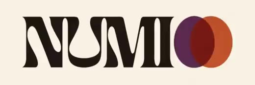

<!doctype html>
<html lang="en">
<head>
<meta charset="utf-8">
<meta name="viewport" content="width=device-width, initial-scale=1, viewport-fit=cover">
<meta name="theme-color" content="#F6F0E4">
<meta name="description" content="NUMIO — the pattern behind your life. Your full numerology profile, your people, and a daily calendar that tells you what today actually is.">
<meta property="og:title" content="NUMIO">
<meta property="og:description" content="The pattern behind your life.">
<meta property="og:type" content="website">
<meta property="og:url" content="https://numerology.lifestyle/">
<link rel="canonical" href="https://numerology.lifestyle/">
<link rel="icon" type="image/png" sizes="192x192" href="icon-192.png">
<link rel="manifest" href="manifest.webmanifest">
<link rel="apple-touch-icon" href="icon-180.png">
<meta name="apple-mobile-web-app-capable" content="yes">
<meta name="apple-mobile-web-app-status-bar-style" content="default">
<meta name="apple-mobile-web-app-title" content="NUMIO">
<meta name="mobile-web-app-capable" content="yes">
<title>NUMIO</title>
<link rel="preconnect" href="https://fonts.googleapis.com">
<link rel="preconnect" href="https://fonts.gstatic.com" crossorigin>
<link rel="stylesheet" href="https://fonts.googleapis.com/css2?family=Fraunces:opsz,wght@9..144,500;9..144,600;9..144,700&family=Figtree:wght@400;500;600;700;800&display=swap">
<style>
  /* NUMIO — the perforation system.
     Paper, not white. Ink, not black. One accent (acid olive), reserved for
     alignment: a day that matches a number you carry, a position two people share.
     --accent is the text-safe olive; --accent-2 is its mid tone; --olive-fill is
     the bright graphic value, used only in marks and never behind body text. */
  /* NUMIO — OVERPRINT.
     Three inks that make nine. Plum leads, rust acts, ochre arrives.
     They are chosen to overprint well: every pairing makes a believable
     third colour rather than mud. Warm paper, warm ink, no cold greys. */
  :root{
    --paper:#F6F0E4; --surface:#FFFCF6; --surface-2:#EFE7D6;
    --rule:#E0D5C0; --ink:#231A15; --ink-2:#4A3B31;
    --stone:#6B5B4F; --stone-2:#7A6A5C;
    --accent:#5C2A4F;      /* plum  — primary, text-safe on paper */
    --accent-2:#A8461F;    /* rust  — secondary, text-safe on paper */
    --ochre:#D9982B; --plum-fill:#5C2A4F; --rust-fill:#BE5430;
    --olive-fill:#BE5430; --olive-wash:#F4DED2;   /* legacy names, overprint values */
    --on-accent:#F6F0E4;
    --display:"Fraunces",ui-serif,Georgia,serif;
    --ui:"Figtree",ui-sans-serif,system-ui,sans-serif;
    --mono:"Figtree",ui-sans-serif,system-ui,sans-serif;
  }
  /* Restored base rules — these sit between the two :root blocks in the
     original stylesheet and must not be dropped when the palette is swapped. */
  *{box-sizing:border-box;-webkit-tap-highlight-color:transparent;}
  html{scroll-behavior:smooth;}
  body{margin:0;background:var(--paper);color:var(--ink);font-family:var(--ui);line-height:1.6;-webkit-font-smoothing:antialiased;overflow-x:hidden;}
  h1,h2,h3,h4{font-family:var(--display);font-weight:600;margin:0;text-wrap:balance;line-height:1.12;}
  .aurora{color:var(--accent);}
  @keyframes fade{from{opacity:0;transform:translateY(10px)}to{opacity:1;transform:none}}
  #stars{position:fixed;inset:0;z-index:0;pointer-events:none;}
  :root{--topbar-h:56px;}
  #app{position:relative;z-index:1;min-height:100vh;padding-top:env(safe-area-inset-top);padding-bottom:calc(var(--topbar-h) + env(safe-area-inset-bottom));}
  .screen{animation:fade .45s ease;}
  .modal{position:fixed;inset:0;z-index:60;display:none;align-items:center;justify-content:center;padding:20px;background:rgba(35,26,21,.45);backdrop-filter:blur(4px);}
  .modal.on{display:flex;animation:fade .25s ease;}
  .mbox{position:relative;max-width:400px;width:100%;max-height:calc(100dvh - 40px);overflow-y:auto;-webkit-overflow-scrolling:touch;background:var(--surface);border:1px solid var(--rule);border-radius:3px;padding:24px;box-shadow:0 24px 60px -22px rgba(35,26,21,.28);}
  .mclose{position:absolute;top:12px;right:12px;background:none;border:0;color:var(--stone);font-size:1.05rem;cursor:pointer;padding:6px;}
  .num-tap{cursor:pointer;}
  .echo{display:inline-block;font-size:.62em;font-weight:700;color:var(--accent-2);background:#F7E8DE;border:1px solid rgba(190,84,48,.35);border-radius:2px;padding:1px 7px;vertical-align:middle;letter-spacing:.02em;}
  .kd{display:inline-block;font-size:.62em;font-weight:700;color:#8A5A08;background:#FAF0DE;border:1px solid rgba(217,152,43,.4);border-radius:2px;padding:1px 7px;vertical-align:middle;letter-spacing:.02em;}
  .wrap{max-width:760px;margin:0 auto;padding:0 20px;}
  .eyebrow{font-size:.7rem;font-weight:700;letter-spacing:.22em;text-transform:uppercase;color:var(--accent);}
  .muted{color:var(--stone);}
  .btn{display:inline-flex;align-items:center;justify-content:center;gap:8px;font-family:var(--display);font-weight:500;border-radius:2px;padding:14px 26px;cursor:pointer;border:1px solid transparent;font-size:.98rem;transition:transform .12s ease,background .2s,box-shadow .2s;user-select:none;touch-action:manipulation;}
  .btn:hover{transform:translateY(-1px);}
  .btn:active{transform:scale(.95);}
  .btn-primary{background:var(--ink);color:var(--paper);}
  .btn-glow{background:var(--ink);color:var(--paper);box-shadow:0 8px 30px -8px rgba(92,42,79,.7);}
  .btn-ghost{background:transparent;border:1px solid var(--ink);color:var(--ink);}
  .btn-block{width:100%;}
  input,textarea{width:100%;background:var(--surface-2);border:1px solid var(--rule);border-radius:2px;color:var(--ink);padding:14px;font-family:var(--ui);font-size:1rem;color-scheme:light;}
  input:focus,textarea:focus{outline:none;border-color:var(--accent);}
  label.fl{display:block;font-size:.78rem;font-weight:700;letter-spacing:.12em;text-transform:uppercase;color:var(--stone);margin:0 0 7px;}
  .card,.paperpanel{border:1px solid var(--rule);background:var(--surface);border-radius:3px;padding:20px;}
  /* topbar */
  .top{position:fixed;left:0;right:0;bottom:0;z-index:30;display:flex;align-items:center;justify-content:space-between;gap:8px;padding:13px 20px calc(13px + env(safe-area-inset-bottom));background:var(--paper);border-top:1px solid var(--rule);}
  @media(max-width:420px){.top{padding:11px 12px calc(11px + env(safe-area-inset-bottom));}.logo{font-size:.98rem;gap:6px;}.top .r{gap:5px;}}
  .stickyfoot{position:fixed;left:0;right:0;bottom:calc(var(--topbar-h) + env(safe-area-inset-bottom));z-index:25;display:flex;gap:10px;justify-content:center;flex-wrap:wrap;padding:14px 20px;background:var(--paper);border-top:1px solid var(--rule);}
  /* The wordmark: NUMI + a punched hole for the O. The O is an absence — a void with
     the burr ring a real punch leaves — never a ring with something orbiting it. */
  .logo{display:flex;align-items:center;gap:0;font-family:var(--display);font-weight:500;font-size:1.22rem;letter-spacing:.005em;cursor:pointer;white-space:nowrap;}
  .logo .mk{width:.6em;height:.6em;border-radius:50%;background:var(--ink);flex-shrink:0;margin-left:.06em;box-shadow:0 0 0 1.5px var(--paper),0 0 0 2.5px rgba(35,26,21,.22);}
  .instmk{width:64px;height:64px;border-radius:50%;background:var(--ink);margin:0 auto;box-shadow:0 0 0 3px var(--paper),0 0 0 5px rgba(35,26,21,.2);font-size:0;box-shadow:0 10px 30px -8px rgba(92,42,79,.6);}
  .inststep{display:flex;gap:12px;align-items:flex-start;text-align:left;border-top:1px solid var(--rule);padding:12px 0;}
  .inststep .n{flex-shrink:0;width:24px;height:24px;border-radius:50%;background:#F2EEE9;display:flex;align-items:center;justify-content:center;font-size:.78rem;font-weight:800;font-family:var(--display);}
  .top .left{display:flex;align-items:center;gap:6px;min-width:0;}
  .backbtn{display:flex;align-items:center;justify-content:center;width:32px;height:32px;flex-shrink:0;border-radius:50%;background:#EBE5DA;border:1px solid rgba(35,26,21,.14);color:var(--ink);font-size:1.35rem;line-height:1;cursor:pointer;touch-action:manipulation;}
  .backbtn:active{transform:scale(.92);background:#E1DACF;}
  .top .r{display:flex;gap:8px;align-items:center;}
  /* hero */
  .hero{text-align:center;padding:56px 20px 30px;position:relative;overflow:hidden;}
  .halo{position:absolute;inset:0;background:radial-gradient(80% 55% at 50% -10%,rgba(190,84,48,.10),transparent 62%);pointer-events:none;}
  .hero h1{font-size:clamp(2.5rem,8vw,4.6rem);margin-top:18px;}
  .hero .sub{max-width:560px;margin:18px auto 0;color:var(--stone);font-size:1.1rem;}
  .badge{display:inline-flex;align-items:center;gap:8px;border:1px solid rgba(35,26,21,.14);background:#EEE7DC;border-radius:2px;padding:7px 15px;font-size:.72rem;font-weight:700;color:var(--stone-2);}
  /* teaser */
  .teaser{max-width:500px;margin:30px auto 0;text-align:left;}
  .reveal{display:none;margin-top:18px;border-top:1px solid var(--rule);padding-top:16px;text-align:center;}
  .reveal.on{display:block;animation:fade .5s ease;}
  .bignum{font-family:var(--display);font-weight:500;font-size:4.2rem;line-height:1;}
  /* journeys */
  .journeys{display:grid;gap:16px;margin:34px auto 0;max-width:760px;}
  @media(min-width:720px){.journeys{grid-template-columns:1fr 1fr;}}
  .jcard{position:relative;overflow:hidden;border-radius:3px;padding:26px;border:1px solid var(--rule);text-align:left;}
  .jcard.me{background:linear-gradient(165deg,#E6D6E2,var(--surface));}
  .jcard.fam{background:linear-gradient(165deg,#F6DFD3,var(--surface));}
  .jcard .price{font-family:var(--display);font-weight:500;font-size:3rem;margin:8px 0;}
  .jcard ul{list-style:none;margin:14px 0 20px;padding:0;}
  .jcard li{display:flex;gap:9px;color:var(--stone);font-size:.9rem;margin:8px 0;}
  .jcard li b{color:var(--accent-2);}
  /* progress stages */
  .stages{display:flex;gap:6px;flex-wrap:wrap;justify-content:center;margin:0 auto 4px;padding:14px 20px 0;}
  .stg{font-size:.62rem;font-weight:700;letter-spacing:.08em;text-transform:uppercase;color:var(--stone);border:1px solid var(--rule);border-radius:2px;padding:4px 10px;}
  .stg.done{background:color-mix(in srgb,var(--accent-2) 16%,transparent);color:var(--accent-2);border-color:transparent;}
  .stg.now{background:var(--accent);color:var(--on-accent);border-color:var(--accent);}
  /* option chips */
  .opts{display:flex;flex-wrap:wrap;gap:10px;margin-top:6px;}
  .opt{border:1px solid var(--rule);background:#F0EADE;border-radius:3px;padding:12px 16px;cursor:pointer;font-weight:600;font-size:.95rem;transition:transform .12s ease,border-color .15s,background .15s;touch-action:manipulation;}
  .opt:hover{border-color:var(--accent);}
  .opt:active{transform:scale(.94);border-color:var(--accent);}
  .opt.sel{background:var(--accent);border-color:var(--accent);color:var(--on-accent);}
  .say{color:var(--accent-2);font-style:italic;font-size:.9rem;margin-top:2px;animation:fade .5s ease;}
  /* key numbers */
  .keys{display:grid;grid-template-columns:repeat(2,1fr);gap:10px;margin-top:20px;}
  @media(min-width:600px){.keys{grid-template-columns:repeat(5,1fr);}}
  .key{border:1px solid var(--rule);background:var(--surface);border-radius:3px;padding:14px 8px;text-align:center;transition:transform .12s ease,border-color .15s;touch-action:manipulation;}
  .key.num-tap:active{transform:scale(.94);border-color:var(--accent);}
  .key .l{font-size:.56rem;font-weight:700;letter-spacing:.12em;text-transform:uppercase;color:var(--stone);}
  .key .v{font-family:var(--display);font-weight:500;font-size:1.9rem;line-height:1;margin-top:6px;}
  /* rail */
  .rail{position:sticky;top:0;z-index:20;display:flex;gap:6px;overflow-x:auto;padding:10px 16px;background:var(--paper);border-top:1px solid var(--rule);border-bottom:1px solid var(--rule);scrollbar-width:none;}
  .rail::-webkit-scrollbar{display:none;}
  .rail button{white-space:nowrap;font-size:.72rem;font-weight:700;color:var(--stone);padding:6px 12px;border-radius:2px;border:0;background:none;cursor:pointer;}
  .rail button.on{background:var(--olive-wash);color:var(--accent);}
  section.blk{border-top:1px solid rgba(224,213,192,.6);padding:32px 0;scroll-margin-top:110px;}
  .theme{margin-top:10px;}
  .theme .tp{display:flex;justify-content:space-between;align-items:baseline;}
  .track{height:6px;border-radius:2px;background:var(--rule);overflow:hidden;margin-top:8px;}
  .fill{height:100%;border-radius:2px;}
  .t-Dominant{color:var(--accent)}.b-Dominant{background:var(--accent)}
  .t-Strong{color:var(--accent-2)}.b-Strong{background:var(--accent-2)}
  .t-Supporting{color:var(--stone-2)}.b-Supporting{background:var(--stone-2)}
  .disc{margin-top:12px;border-top:1px solid rgba(224,213,192,.5);padding-top:10px;max-width:100%;overflow:hidden;}
  .disc summary{color:var(--stone);font-size:.72rem;font-weight:700;letter-spacing:.12em;text-transform:uppercase;cursor:pointer;list-style:none;}
  .disc summary::-webkit-details-marker{display:none;}
  .disc summary::marker{content:'';}
  .disc pre{margin:10px 0 0;background:var(--surface-2);border-radius:2px;padding:12px;font-size:.72rem;color:var(--stone);white-space:pre-wrap;overflow-wrap:break-word;word-break:break-word;max-width:100%;box-sizing:border-box;font-family:ui-monospace,Menlo,monospace;}
  .pin{border:1px solid var(--rule);background:var(--surface);border-radius:3px;padding:14px;margin-top:10px;display:flex;justify-content:space-between;align-items:center;gap:12px;}
  .pin.now{border-color:var(--accent);background:var(--surface);}
  .here{background:var(--accent);color:var(--on-accent);font-size:.6rem;font-weight:800;text-transform:uppercase;letter-spacing:.1em;padding:5px 10px;border-radius:2px;}
  /* year wheel */
  .wheel{display:flex;gap:6px;flex-wrap:wrap;justify-content:center;margin:14px 0;}
  .yr{width:46px;height:50px;border-radius:2px;display:flex;flex-direction:column;align-items:center;justify-content:center;border:1px solid var(--rule);background:var(--surface-2);font-family:var(--display);font-weight:500;font-size:1.1rem;}
  .yr small{font-size:.46rem;font-weight:700;color:var(--stone);letter-spacing:.02em;margin-top:2px;}
  .yr.on{background:var(--accent);color:var(--on-accent);border-color:var(--accent);}
  .yr.on small{color:var(--on-accent);}
  .trio{display:grid;gap:10px;margin-top:12px;}
  @media(min-width:600px){.trio{grid-template-columns:repeat(3,1fr);}}
  .trio .t{border:1px solid var(--rule);border-radius:2px;padding:13px;background:var(--surface);}
  .trio .t.mid{border-color:var(--accent);}
  .beam{position:relative;overflow:hidden;}
  .beam::before{content:"";position:absolute;left:0;top:0;bottom:0;width:2px;background:var(--olive-fill);}
  @keyframes spin{to{transform:rotate(360deg)}}
  /* family */
  .fnode{border:1px solid var(--rule);background:var(--surface);border-radius:3px;padding:16px;cursor:pointer;transition:transform .12s ease,border-color .15s;touch-action:manipulation;}
  .fnode:hover{border-color:var(--accent);}
  .fnode:active{transform:scale(.97);}
  .fnode.sel{border-color:var(--accent);box-shadow:0 0 0 1px var(--accent);}
  .foot{text-align:center;color:var(--stone);font-size:.76rem;padding:26px 20px 60px;}
  /* staggered pop-in for repeated grid/list items */
  .jcard{animation:fade .5s ease backwards;transition:transform .12s ease;}
  .jcard:active{transform:scale(.98);}
  .keys .key,.opts .opt,.journeys .jcard,.fnode{animation:fade .4s ease backwards;}
  .keys .key:nth-child(2),.opts .opt:nth-child(2),.journeys .jcard:nth-child(2),.fnode:nth-child(2){animation-delay:.06s}
  .keys .key:nth-child(3),.opts .opt:nth-child(3),.journeys .jcard:nth-child(3),.fnode:nth-child(3){animation-delay:.12s}
  .keys .key:nth-child(4),.opts .opt:nth-child(4),.journeys .jcard:nth-child(4),.fnode:nth-child(4){animation-delay:.18s}
  .keys .key:nth-child(5),.opts .opt:nth-child(5),.fnode:nth-child(5){animation-delay:.24s}
  .keys .key:nth-child(n+6),.opts .opt:nth-child(n+6),.fnode:nth-child(n+6){animation-delay:.3s}
  @media(prefers-reduced-motion:reduce){.aurora,.beam::before{animation:none;}.screen,.jcard,.keys .key,.opts .opt,.journeys .jcard,.fnode{animation:none;}}

  /* ── OVERPRINT: round two ──────────────────────────────────────────
     Numerology is cyclical and overlapping, not filed into boxes. Round
     one squared everything off at 2px and it fought the subject matter.
     Nothing here has a hard corner: the smallest radius is 14px, and
     anything that can be a pill, is one. Appended last so it wins the
     cascade without having to unpick the earlier rules. */
  .btn{border-radius:999px;padding:15px 28px;font-weight:700;letter-spacing:0;}
  .btn-glow{background:var(--accent);color:var(--on-accent);box-shadow:0 10px 26px -14px rgba(92,42,79,.75);}
  .btn-primary{background:var(--ink);color:var(--paper);}
  .btn-ghost{background:transparent;color:var(--ink);border:2px solid rgba(35,26,21,.22);}
  .badge,.echo,.kd,.stg,.here,.opt.sel{border-radius:999px;}
  .card,.paperpanel,.jcard,.mbox,.key,.fnode,.pin,.trio .t,.teaser,.opt{border-radius:22px;}
  .jcard,.mbox{border-radius:28px;}
  input,textarea{border-radius:999px;padding:14px 20px;border:2px solid rgba(35,26,21,.14);background:var(--surface-2);}
  textarea{border-radius:22px;}
  input:focus,textarea:focus{border-color:var(--accent);}
  .rail{border-radius:0;}
  .rail button{border-radius:999px;}
  .rail button.on{background:var(--olive-wash);color:var(--accent-2);}
  .disc pre{border-radius:16px;}
  .stages .stg{border-radius:999px;}
  .yr{border-radius:16px;}
  .top{border-radius:0;}

  /* Type: warm serif for display, friendly grotesque for everything else.
     Weights kept heavy — round one was unreadably thin. */
  h1,h2,h3,h4{font-weight:600;font-variation-settings:'SOFT' 100;letter-spacing:-.015em;}
  body{font-size:16.5px;line-height:1.62;}
  .muted{color:var(--stone);}
  .eyebrow{font-family:var(--ui);font-weight:800;letter-spacing:.15em;font-size:.72rem;color:var(--accent-2);}

  /* The wordmark: NUMI + an O of two overprinting inks. Two circles meeting
     and making a third colour — the product's whole idea in one glyph. */
  .logo{gap:0;font-family:var(--display);font-weight:700;font-size:1.24rem;font-variation-settings:'SOFT' 100;}
  .logo .mk{
    width:1.02em;height:.66em;border-radius:0;background:none;box-shadow:none;
    margin-left:.05em;flex-shrink:0;position:relative;
  }
  .logo .mk::before,.logo .mk::after{
    content:"";position:absolute;top:0;width:.66em;height:.66em;border-radius:50%;
    mix-blend-mode:multiply;
  }
  .logo .mk::before{left:0;background:var(--plum-fill);opacity:.88;}
  .logo .mk::after{right:0;background:var(--rust-fill);opacity:.88;}
  /* The living wordmark. The drawn version stays underneath and is what you
     actually see until the clip reports it can play — so a slow connection, a
     blocked autoplay or a missing file all land on the static mark instead of
     an empty gap. The clip is graded so its own ground is the paper colour:
     blend modes are unreliable on video, which a compositor hands to its own
     layer, so the ground has to match rather than be blended away. */
  /* The still and the clip are the same artwork at the same size, stacked. The
     worst case is therefore this logo standing still, not a different logo
     appearing — there is no drawn stand-in left in the nav at all. */
  .logo{position:relative;}
  .logo .markbox{position:relative;display:block;height:1.95em;margin-left:-.30em;}
  .logo .logostill,.logo .logovid{
    height:1.95em;width:auto;display:block;pointer-events:none;
    filter:brightness(1.015);
    -webkit-mask-image:linear-gradient(90deg,transparent 0,#000 7%,#000 93%,transparent 100%),
      linear-gradient(180deg,transparent 0,#000 13%,#000 87%,transparent 100%);
    -webkit-mask-composite:source-in;
    mask-image:linear-gradient(90deg,transparent 0,#000 7%,#000 93%,transparent 100%),
      linear-gradient(180deg,transparent 0,#000 13%,#000 87%,transparent 100%);
    mask-composite:intersect;}
  .logo .logovid{position:absolute;left:0;top:0;height:100%;width:100%;opacity:0;
    transition:opacity .25s ease;}
  .logo.vid-on .logovid{opacity:1;}
  .logo.vid-on .logostill{visibility:hidden;}

  /* Install-prompt mark, same language at 64px */
  .instmk{
    width:96px;height:62px;border-radius:0;background:none;box-shadow:none;
    position:relative;margin:0 auto;font-size:0;
  }
  .instmk::before,.instmk::after{
    content:"";position:absolute;top:0;width:62px;height:62px;border-radius:50%;
    mix-blend-mode:multiply;
  }
  .instmk::before{left:0;background:var(--plum-fill);opacity:.88;}
  .instmk::after{right:0;background:var(--rust-fill);opacity:.88;}

  /* The beam rule reads as an ink edge rather than a hairline */
  .beam::before{width:3px;background:var(--accent-2);}

  /* ── Bloom artwork ────────────────────────────────────────────────
     Generated overprint discs. Never stretched, never a background
     image — an <svg> that slices to fill its frame. */
  .bloom{position:absolute;inset:0;width:100%;height:100%;display:block;}
  .onart{position:relative;z-index:1;}

  /* ── the calendar, as a printed sheet ──────────────────────────────────
     A month is a table, not thirty-one floating tiles. Continuous hairlines,
     one big numeral per cell, and the state of the day carried by the colour
     of a single overprint disc rather than a word repeated twenty times. */
  .calsheet{background:var(--surface);border:1px solid var(--rule);border-radius:20px;
    overflow:hidden;box-shadow:0 26px 54px -34px rgba(35,26,21,.42);}
  .calhead{display:grid;grid-template-columns:repeat(7,1fr);border-bottom:1px solid var(--rule);
    background:var(--surface-2);}
  .calhead span{padding:10px 0;text-align:center;font-size:.62rem;font-weight:800;
    letter-spacing:.14em;text-transform:uppercase;color:var(--stone);}
  .calgrid{display:grid;grid-template-columns:repeat(7,1fr);}
  .cel{position:relative;aspect-ratio:1/1.06;border-right:1px solid var(--rule-soft,#EFE7D6);
    border-bottom:1px solid var(--rule-soft,#EFE7D6);padding:6px 5px 5px;
    display:flex;flex-direction:column;justify-content:space-between;
    cursor:pointer;transition:background .15s ease;touch-action:manipulation;min-width:0;}
  .cel:nth-child(7n){border-right:0;}
  .cel.wk{background:rgba(224,213,192,.16);}   /* weekends, the way a wall calendar tints them */
  .cel.void{cursor:default;background:rgba(224,213,192,.10);}
  .cel:not(.void):active{background:var(--surface-2);}
  .cel .dnum{font-family:var(--display);font-weight:500;font-size:1.12rem;line-height:1;color:var(--ink);}
  .cel .uni{position:absolute;top:6px;right:6px;font-size:.56rem;font-weight:700;color:var(--stone);
    font-variant-numeric:tabular-nums;opacity:.75;}
  .cel .pd{align-self:flex-start;width:20px;height:20px;border-radius:50%;
    display:flex;align-items:center;justify-content:center;
    font-size:.64rem;font-weight:800;font-variant-numeric:tabular-nums;
    color:var(--on-accent);background:var(--stone-2);}
  .cel .pd.high{background:var(--rust-fill);}
  .cel .pd.mixed{background:var(--plum-fill);}
  .cel .pd.support{background:var(--ochre);color:var(--ink);}
  .cel .pd.stretch{background:var(--surface);color:var(--stone-2);box-shadow:inset 0 0 0 2px var(--stone-2);}
  .cel.today{background:var(--accent);}
  .cel.today .dnum,.cel.today .uni{color:var(--on-accent);opacity:1;}
  .cel.today .pd{box-shadow:0 0 0 2px var(--accent),0 0 0 3.5px rgba(246,240,228,.65);}
  @media(max-width:390px){.cel{padding:5px 3px 4px;}.cel .dnum{font-size:1rem;}.cel .pd{width:18px;height:18px;font-size:.6rem;}}

  .callegend{display:flex;flex-wrap:wrap;gap:10px 16px;margin-top:16px;justify-content:center;}
  .callegend b{display:inline-flex;align-items:center;gap:7px;font-size:.72rem;font-weight:600;color:var(--stone);}
  .callegend i{width:15px;height:15px;border-radius:50%;flex-shrink:0;font-style:normal;}
  .callegend i.out{background:var(--surface);box-shadow:inset 0 0 0 2px var(--stone-2);}
  .calmonth{display:flex;align-items:baseline;justify-content:center;gap:10px;}
  .calmonth h1{font-size:1.75rem;letter-spacing:-.01em;}
  .calmonth .calyr{font-family:var(--display);font-size:1.2rem;color:var(--stone);background:none;border:0;padding:0;width:auto;height:auto;border-radius:0;}
  /* Same surface as .card, so a panelled paragraph and a real card read as one
     material rather than two. */
  .paperpanel{position:relative;z-index:1;}
  /* An explicit, unticked choice: a pre-ticked box is not consent under UK GDPR,
     so this has to be read and acted on rather than merely not un-ticked. */
  .optin{display:flex;gap:12px;align-items:flex-start;text-align:left;cursor:pointer;
    border:1px solid var(--rule);background:var(--surface-2);border-radius:22px;padding:16px 18px;}
  .optin input{width:20px;height:20px;flex-shrink:0;margin:1px 0 0;accent-color:var(--accent);}
  .optin span{font-size:.82rem;line-height:1.5;color:var(--stone-2);}
  /* Thirteen numbers with the full read open at once is a wall. Collapsed, the
     page becomes a list you can scan; the depth is one tap away and unchanged. */
  .numdet{margin-top:12px;}
  .numdet>summary{list-style:none;cursor:pointer;display:inline-flex;align-items:center;gap:8px;
    font-size:.8rem;font-weight:700;letter-spacing:.06em;text-transform:uppercase;
    color:var(--accent);border:1px solid var(--rule);border-radius:999px;padding:8px 15px;
    background:var(--surface-2);transition:border-color .15s ease;}
  .numdet>summary::-webkit-details-marker{display:none;}
  .numdet>summary:hover{border-color:var(--accent);}
  .numdet>summary::after{content:"+";font-size:1rem;line-height:1;font-weight:700;}
  .numdet[open]>summary::after{content:"–";}
  .numdet>summary .sm-shut{display:none;}
  /* Sits where the disclosure would, so a locked card and an open one have the
     same shape — the difference is what it does, not how much room it takes. */
  .numlock{margin-top:12px;cursor:pointer;display:inline-flex;align-items:center;gap:8px;
    font-size:.8rem;font-weight:700;letter-spacing:.06em;text-transform:uppercase;
    color:var(--stone-2);border:1px solid var(--rule);border-radius:999px;padding:8px 15px;
    background:var(--surface-2);transition:border-color .15s ease,color .15s ease;
    touch-action:manipulation;user-select:none;}
  .numlock:hover{border-color:var(--accent);color:var(--accent);}
  .numlock .lk{font-size:.9rem;}
  .numdet[open]>summary .sm-open{display:none;}
  .numdet[open]>summary .sm-shut{display:inline;}
  .screen>.wrap{position:relative;}
  .bloomframe{position:relative;overflow:hidden;border-radius:28px;background:var(--surface-2);}
  .bloomframe.tall{aspect-ratio:4/3;}
  .bloomframe.band{aspect-ratio:16/6;border-radius:22px;}
  .bloomframe.hero{aspect-ratio:5/3;border-radius:32px;}
  /* Hero art sits behind the headline at low strength so type stays first */
  .heroart{position:absolute;inset:-8% -12% auto;height:78%;opacity:.5;pointer-events:none;z-index:0;
    -webkit-mask-image:linear-gradient(180deg,#000 40%,transparent 100%);
    mask-image:linear-gradient(180deg,#000 40%,transparent 100%);}
  .heroart .bloom{height:100%;}
  /* One press sheet behind the whole app. It is fixed, so the paper stays put
     and the content travels over it — the same field on every screen, which is
     what makes it read as a brand instead of a decorated homepage. The four
     source pieces are composited into it, so there is nothing left to line up
     and nothing to split. */
  /* No blend mode and no opacity here on purpose. The strength is baked into
     field.jpg itself, because mix-blend-mode on a position:fixed layer is the
     one thing Safari cannot be relied on to composite — it hands such a layer
     to the compositor and can blend it against nothing, which shows up as the
     background simply not appearing. An image that is already the finished
     result cannot fail that way. */
  #artfield{position:fixed;inset:0;z-index:0;pointer-events:none;
    background-image:url('field.jpg');background-repeat:no-repeat;
    background-size:cover;background-position:center top;}
  .hero .wrap{position:relative;z-index:1;}
  .bloomcap{font-size:.78rem;color:var(--stone);margin-top:9px;font-weight:600;}
</style>
</head>
<body>

<div id="artfield" aria-hidden="true"></div>
<canvas id="stars"></canvas>
<div id="app"></div>
<div id="nummodal" class="modal"></div>
<div id="sysmodal" class="modal"></div>
<div id="installmodal" class="modal"></div>

<script>
/* ============================ ENGINE ============================ */
const digitSum=v=>String(Math.abs(Number(v))).split('').reduce((s,d)=>s+ +d,0);
const MFAM={2:11,4:22,6:33,8:44};// root -> its master higher-octave (11/22/33/44 all reduce to 2/4/6/8)
function reduce(raw,preserve=[]){const route=[+raw];let cur=+raw;while(cur>9&&!preserve.includes(cur)){cur=digitSum(cur);route.push(cur);}const root=cur>9?digitSum(cur):cur;const isMaster=preserve.includes(cur);
 // A compound like 20/2, 29→11→2, 38→11→2 carries the higher-octave master of its family.
 // Flag when it's NOT already a master, came from a double digit, and its family has a master (2/4/6).
 const masterEcho=(!isMaster&&+raw>9&&MFAM[root])?MFAM[root]:null;
 // Strong echo = the reduction literally passed through the master (e.g. 29→11→2) or is a round master-anchor (20/40..).
 const strongEcho=masterEcho&&(route.includes(masterEcho)||+raw===masterEcho*10||(+raw)%10===0)?masterEcho:null;
 // A value that lands on a master with zero reduction steps (e.g. born on the 22nd -> raw 22 is already the master)
 // never shows its root anywhere in the route. Rule: display it as "22/4" so the root is never silently dropped.
 const instantMaster=isMaster&&route.length===1;
 const display=instantMaster?cur+'/'+root:route.join('/');
 return{rawTotal:+raw,route,compound:+raw>9?+raw:null,number:cur,root,master:isMaster,masterEcho,strongEcho,display};}
const MM=[11,22,33,44];
const PY={};'ABCDEFGHIJKLMNOPQRSTUVWXYZ'.split('').forEach((L,i)=>PY[L]=(i%9)+1);
const CHG={1:'AIJQY',2:'BKR',3:'CGLS',4:'DMT',5:'EHNX',6:'UVW',7:'OZ',8:'FP'};const CH={};Object.entries(CHG).forEach(([v,ls])=>ls.split('').forEach(l=>CH[l]=+v));
function classify(name){const out=[];String(name).toUpperCase().split(/\s+/).filter(Boolean).forEach(w=>{const hv=/[AEIOU]/.test(w);w.split('').forEach(ch=>{if(!/[A-Z]/.test(ch))return;let vowel=/[AEIOU]/.test(ch);if(ch==='Y')vowel=!hv;out.push({letter:ch,vowel});});});return out;}
function nameCalc(name,map,pre){const L=classify(name);const val=a=>a.reduce((s,l)=>s+(map[l.letter]||0),0);return{expression:reduce(val(L),pre),soulUrge:reduce(val(L.filter(l=>l.vowel)),pre),personality:reduce(val(L.filter(l=>!l.vowel)),pre)};}
const ANIMALS=['Rat','Ox','Tiger','Rabbit','Dragon','Snake','Horse','Goat','Monkey','Rooster','Dog','Pig'];
const ELEMENTS=['Metal','Metal','Water','Water','Wood','Wood','Fire','Fire','Earth','Earth'];
function chineseYear(dob,year){let by;try{const p=new Intl.DateTimeFormat('en-u-ca-chinese',{year:'numeric',timeZone:'UTC'}).formatToParts(new Date(dob+'T12:00:00Z'));by=+p.find(x=>x.type==='relatedYear').value;}catch(e){by=+dob.slice(0,4);}const ey=y=>({animal:ANIMALS[((y-4)%12+12)%12],element:ELEMENTS[((y%10)+10)%10],yinYang:y%2===0?'Yang':'Yin',year:y});return{birth:ey(by),forecast:ey(year)};}
const personalYearFor=(m,d,year)=>reduce(reduce(m).root+reduce(d).root+digitSum(year)).root;
/* ============================ DAILY ENERGY CALENDAR ============================ */
const WEEKDAY=[
 {name:'Sunday',planet:'Sun',t:['identity','visibility','vitality','self-expression']},
 {name:'Monday',planet:'Moon',t:['emotion','home','instinct','care']},
 {name:'Tuesday',planet:'Mars',t:['action','drive','assertion','courage']},
 {name:'Wednesday',planet:'Mercury',t:['communication','commerce','learning','information']},
 {name:'Thursday',planet:'Jupiter',t:['growth','expansion','opportunity','perspective']},
 {name:'Friday',planet:'Venus',t:['relationships','pleasure','beauty','connection']},
 {name:'Saturday',planet:'Saturn',t:['structure','discipline','responsibility','boundaries']}
];
const personalMonthFor=(pyRoot,month)=>reduce(pyRoot+month).root;
const personalDayFor=(pmRoot,day)=>reduce(pmRoot+day).root;
const calendarDayNum=day=>reduce(day,MM);
const universalDayNum=dateStr=>reduce(digitSum(dateStr.replace(/-/g,'')),MM);
// Full daily architecture for one viewed date, personalised to one profile. Nothing here gets flattened --
// calendar day, full-date/universal day, personal year/month/day and weekday all kept and returned separately.
function dailyArchitecture(profile,dateStr){
 const[vy,vm,vd]=dateStr.split('-').map(Number);
 const[,bm,bd]=profile.dob.split('-').map(Number);
 const personalYear=personalYearFor(bm,bd,vy);
 const personalMonth=personalMonthFor(personalYear,vm);
 const personalDay=personalDayFor(personalMonth,vd);
 const calendarDay=calendarDayNum(vd);
 const universalDay=universalDayNum(dateStr);
 const weekday=WEEKDAY[new Date(dateStr+'T12:00:00Z').getUTCDay()];
 return{dateStr,weekday,calendarDay,universalDay,personalYear,personalMonth,personalDay};
}
const DAY_LABEL={1:'New Beginnings',2:'Sensitive',3:'Creative',4:'Structured',5:'Active',6:'Relational',7:'Reflective',8:'Commercial',9:'Completion',11:'Intuitive',22:'Ambitious',33:'Guiding',44:'Driven'};
const DAY_GOOD={1:['starting something new','making a decisive call','leading','pitching an idea'],2:['listening','collaborating','sensitive conversations','pausing before deciding'],3:['writing','pitching','content and social posts','presenting'],4:['admin','planning','reviewing systems','paperwork'],5:['change','travel','trying something new','flexible plans'],6:['family time','home decisions','checking in on people who matter'],7:['research','reflection','solo deep work','reviewing before deciding'],8:['money tasks','negotiating','closing deals','asking for what you\'re worth'],9:['finishing things','letting go','tying off loose ends','generosity'],11:['sharing an insight','trusting a hunch','deep listening'],22:['long-term building','big-picture planning','laying real foundations'],33:['teaching','guiding others','bringing a group together'],44:['structured execution','running the system you\'ve built']};
const DAY_WATCH={1:['forcing your view on others','impatience with slower people'],2:['avoiding a needed conversation','over-absorbing others\' moods'],3:['scattering across too much','talking instead of doing'],4:['getting stuck in the weeds','resisting a needed change'],5:['restlessness','abandoning plans too fast'],6:['over-giving','taking on more than yours to carry'],7:['overthinking','withdrawing right when connection would help'],8:['tying your mood to results','pushing too hard on money matters'],9:['carrying things that aren\'t yours','difficulty finishing what\'s already done'],11:['anxious energy','absorbing everyone else\'s stress'],22:['pressure of your own expectations'],33:['ego creeping into good intentions'],44:['work swallowing everything else']};
const DAY_WEATHER={1:'more driven',2:'more sensitive',3:'more social',4:'more focused',5:'more restless',6:'more relational',7:'more reflective',8:'more serious',9:'more reflective',11:'more intuitive',22:'more driven',33:'more relational',44:'more driven'};
const DAY_QUESTION={1:'What do you need to start today, without waiting for permission?',2:'Who needs you to really listen today?',3:'What do you actually want to say — out loud, or in writing?',4:'What system or process could use ten honest minutes today?',5:'Where are you clinging to routine that no longer serves you?',6:'Who in your life needs checking in on today?',7:'What have you been avoiding looking at properly?',8:'Where are you underselling what you\'re worth?',9:'What are you still carrying that\'s actually finished?',11:'What have you sensed coming that you haven\'t said out loud?',22:'What are you building that\'s bigger than today?',33:'Who could you help see their own next step today?',44:'What part of the system needs your discipline today?'};
// A short, punchy, imperative line per Personal Day root -- "what to actually do with today" rather than
// a list of themes to interpret yourself. Keyed by root only (masters get their own line, not a fallback).
const DAY_DIRECTIVE={
 1:"Be first. Make the call, start the thing, and don't wait for permission today.",
 2:"You may be feeling more sensitive today — that's okay. Slow down and listen before you decide anything.",
 3:"Get out there and be sociable. Post on socials, message a friend, say the thing out loud.",
 4:"Get to work and build what you're building. Dig in, do the unglamorous bit, don't cut corners.",
 5:"Change it up. Say yes to something different today — a new route, a new plan, a new conversation.",
 6:"Check in on the people who matter. Home and family come first today.",
 7:"It's a learning day. Research, read, reflect — go deep instead of wide.",
 8:"It's a money day. Chase the deal, ask for what you're worth, handle the numbers.",
 9:"Stay out of trouble and try to help someone. Finish something rather than starting something new.",
 11:"Trust the hunch. Share the insight you've been sitting on — someone needs to hear it today.",
 22:"Think bigger and build for real. Lay an actual foundation today, not just another plan.",
 33:"Show up for someone else's next step today. Teach, guide, bring people together.",
 44:"Run the system. Discipline over inspiration today — execute what you've already built."
};
function dailyGoodWatch(arch){
 const uKey=arch.universalDay.number,pKey=arch.personalDay;
 const good=[...new Set([...(DAY_GOOD[pKey]||[]),...(DAY_GOOD[uKey]||[])])].slice(0,5);
 const watch=[...new Set([...(DAY_WATCH[pKey]||[]),...(DAY_WATCH[uKey]||[])])].slice(0,3);
 return{good,watch,weather:DAY_WEATHER[pKey]||'steady',question:DAY_QUESTION[pKey]||DAY_QUESTION[uKey]||''};
}
// Plain-English synthesis — preserves position (calendar foundation -> full date -> personal day), never a bag of numbers.
function dailySynthesisText(arch,first){
 const cd=npFor(arch.calendarDay.number),ud=npFor(arch.universalDay.number),pd=npFor(arch.personalDay);
 const cdT=cd.t[0],udT=ud.t[0],pdT=pd.t[0];
 let s=`The ${arch.calendarDay.display} calendar foundation carries ${cdT}`;
 if(arch.universalDay.number!==arch.calendarDay.number)s+=`, and the complete date resolves to ${arch.universalDay.display} overall — bringing ${udT} into that. The ${cdT} hasn\'t disappeared; it\'s what the day is built on.`;
 else s+=`, and the complete date agrees — the whole day reads as ${udT} through and through.`;
 s+=` For ${first} specifically, today is a Personal Day ${arch.personalDay} — ${pdT}.`;
 if(pdT!==udT&&pdT!==cdT)s+=` That\'s a different note from the wider day, so ${first} may feel out of step with the room\'s general tone today — worth naming rather than fighting.`;
 else s+=` That lines up with the day\'s own tone, so today should feel relatively easy to move with.`;
 return s;
}
function todayHeadline(arch){
 const g=dailyGoodWatch(arch);
 return (DAY_LABEL[arch.personalDay]||'')+(g.watch.length?', but stay mindful':'');
}
// Task-based date scoring for "Plan Something" — never recommends from calendar day alone; always weighs
// the full architecture (universal day + the person's own personal day) against the task's theme profile.
const TASKS=[
 {id:'business',label:'Business Meeting',themes:['ambition','stability']},{id:'sales',label:'Sales Call',themes:['expression','ambition']},
 {id:'contract',label:'Contract',themes:['stability','ambition']},{id:'launch',label:'Launch',themes:['independence','expression']},
 {id:'social',label:'Social Media',themes:['expression','freedom']},{id:'conversation',label:'Important Conversation',themes:['sensitivity','introspection']},
 {id:'relationship',label:'Relationship Conversation',themes:['sensitivity','partnership']},{id:'romance',label:'Date / Romance',themes:['partnership','freedom']},
 {id:'family',label:'Family Day',themes:['responsibility','partnership']},{id:'money',label:'Money / Collection',themes:['ambition','stability']},
 {id:'planning',label:'Planning',themes:['stability','introspection']},{id:'creative',label:'Creative Work',themes:['expression','creativity']},
 {id:'rest',label:'Rest / Reflection',themes:['introspection','service']},{id:'celebration',label:'Celebration',themes:['expression','partnership']},
 {id:'wedding',label:'Wedding / Commitment',themes:['partnership','responsibility']}
];
// Task fit and profile resonance are scored separately (a matching root is NOT always the best date) --
// task themes drive the label; resonance only ever nudges the ranking, it can't flip a poor task fit into a good one.
function taskAlignment(profile,intel,dateStr,task){
 const arch=dailyArchitecture(profile,dateStr);
 const uT=npFor(arch.universalDay.number).t,pT=npFor(arch.personalDay).t;
 let score=0;
 task.themes.forEach(th=>{if(uT.includes(th))score+=2;if(pT.includes(th))score+=3;});
 const res=intel?dailyResonance(profile,intel,arch):null;
 if(res&&res.type==='resonance')score+=Math.min(1,(res.sourceLabels?.length||1)*.3);
 // Money-specific: the 8th of any month carries the money/power root, and the 28th carries the
 // Wealth Number 28/1 signature this system already treats as one of its key wealth compounds
 // (see WEALTH_NUMBER) -- both are traditionally significant for money timing, so they're always
 // weighted to surface for the Money / Collection task on top of normal theme fit.
 const isWealthDay=task.id==='money'&&(arch.calendarDay.rawTotal===8||arch.calendarDay.rawTotal===28);
 if(isWealthDay)score+=6;
 const label=score>=4?'Stronger alignment':score>=2?'Supportive':score>=1?'Mixed':'More challenging';
 return{arch,score,label,resonance:res,isWealthDay};
}
function findDatesFor(profile,intel,task,fromDate,days){
 const out=[];const start=new Date(fromDate+'T12:00:00Z');
 for(let i=0;i<days;i++){const d=new Date(start);d.setUTCDate(start.getUTCDate()+i);const ds=d.toISOString().slice(0,10);
  out.push({dateStr:ds,...taskAlignment(profile,intel,ds,task)});}
 out.sort((a,b)=>b.score-a.score);
 if(task.id==='money'){
  // "Always recommend" the 8th/28th for money is a guarantee, not just a scoring nudge -- a wealth day
  // is included in the results even on the rare date it doesn't naturally out-score everything else,
  // rather than leaving it to chance that the score boost alone was large enough.
  const wealthDays=out.filter(r=>r.isWealthDay);
  const rest=out.filter(r=>!r.isWealthDay).slice(0,Math.max(0,5-wealthDays.length));
  return[...wealthDays,...rest].sort((a,b)=>b.score-a.score);
 }
 return out.slice(0,5);
}
// Birth Architecture: Birthday -> Month -> Day+Month -> Birth Year -> Life Path. Every layer is kept, none discarded.
function birthArchitecture(dob){const[y,m,d]=dob.split('-').map(Number);const birthMonth=reduce(m,MM),birthday=reduce(d,MM),dayMonth=reduce(birthMonth.number+birthday.number,MM),birthYear=reduce(digitSum(y),MM),lifePath=reduce(dayMonth.number+birthYear.number,MM);return{birthMonth,birthday,dayMonth,birthYear,lifePath};}
function lifePathFromDob(dob){return birthArchitecture(dob).lifePath;}
// Challenge Numbers: the obstacle-side counterpart to Pinnacles, same four age periods, built from
// subtraction (not addition) between fully single-digit month/day/year — masters are never preserved here.
function challengeNumbers(dob){const[y,m,d]=dob.split('-').map(Number);
 const mR=reduce(m).root,dR=reduce(d).root,yR=reduce(digitSum(y)).root;
 const first=Math.abs(mR-dR),second=Math.abs(dR-yR),fourth=Math.abs(mR-yR),third=Math.abs(first-second);
 return{first,second,third,fourth};}
// Karmic Debt Numbers: 13, 14, 16 and 19 carry a specific lesson when they appear as the RAW total
// behind Life Path, Birthday or a name number, before any reduction ever happens.
const KARMIC_DEBT={
 13:{root:4,title:'13/4 · The Karmic Debt of Effort',lesson:'Traditionally read as a past pattern of laziness, shortcuts or avoiding real work. This life asks for sustained, honest effort — the 4\'s discipline, but earned rather than assumed. Avoiding the work tends to bring exactly the setbacks this number is trying to teach a way through.'},
 14:{root:5,title:'14/5 · The Karmic Debt of Freedom',lesson:'Traditionally read as a past pattern of misusing freedom — impulsiveness, overindulgence, change for its own sake. This life asks for self-control around freedom rather than restriction of it: the 5\'s adaptability, matured into discipline. Excess in any one direction (substances, spending, restlessness) tends to surface fastest here.'},
 16:{root:7,title:'16/7 · The Karmic Debt of the Fall',lesson:'Traditionally the heaviest of the four — a past pattern of ego, vanity or misused love. Often shows up as sudden upheavals that strip away something built on a false foundation, followed by real rebuilding. The lesson is humility and honesty rather than image — the 7\'s depth, earned through the fall rather than avoided.'},
 19:{root:1,title:'19/1 · The Karmic Debt of Self-Reliance',lesson:'Traditionally read as a past pattern of using others, or leaning on them, to get ahead. This life asks for standing on your own two feet — the 1\'s independence, but without expecting others to carry you or being unwilling to consider them. Real self-sufficiency, not isolation, is the target.'}
};
function karmicDebtOf(r){return r&&KARMIC_DEBT[r.rawTotal]||null;}
const CHALLENGE_LABELS=['First Challenge','Second Challenge','Third Challenge','Fourth Challenge'];
const PINNACLE_LABELS=['First Pinnacle','Second Pinnacle','Third Pinnacle','Fourth Pinnacle'];
function kdBadge(r){const kd=karmicDebtOf(r);return kd?` <span class="kd" title="${esc(kd.title)}">⚡${r.rawTotal}</span>`:'';}
// Wealth Number 28: never just "1". 2 (people skills) + 8 (money) combine into 1 (leadership) — flagged explicitly,
// never hidden behind the reduction, wherever it appears as the RAW total behind a number.
const WEALTH_NUMBER={title:'28/1 · The Wealth Number',lesson:'Two brings people awareness, eight brings money, power and material ambition, and they combine into the leadership and independence of 1. Twenty-eight is one of the important wealth signatures in this system — this is not a plain 1.'};
function wealthOf(r){return r&&r.rawTotal===28?WEALTH_NUMBER:null;}
function wealthBadge(r){return wealthOf(r)?` <span class="kd" style="color:var(--accent-2);background:#F7E8DE;border-color:rgba(190,84,48,.4)" title="${esc(WEALTH_NUMBER.title)}">💰28</span>`:'';}
function buildProfile(dob,fullName,currentName,door,year){const[y,m,d]=dob.split('-').map(Number);const arch=birthArchitecture(dob);const{birthMonth,birthday,dayMonth,birthYear,lifePath}=arch;const pyth=nameCalc(fullName,PY,MM),chal=nameCalc(fullName,CH,[]);const p1=dayMonth,p2=reduce(birthday.number+birthYear.number,MM);const pinnacles=[p1,p2,reduce(p1.number+p2.number,MM),reduce(birthMonth.number+birthYear.number,MM)];const challenges=challengeNumbers(dob);const hn=String(door||'').toUpperCase().replace(/^(FLAT|APARTMENT|APT|UNIT)\s*/i,'').replace(/[^A-Z0-9]/g,'');const home=hn?reduce(hn.split('').reduce((s,ch)=>s+(/\d/.test(ch)?+ch:(PY[ch]||0)),0),MM):null;return{dob,name:fullName,currentName,door,homeNorm:hn,year,lifePath,birthday,birthMonth,dayMonth,birthYear,attitude:reduce(m+d).root,pyth,chal,pinnacles,challenges,home,personalYear:personalYearFor(m,d,year),personalYearPrev:personalYearFor(m,d,year-1),personalYearNext:personalYearFor(m,d,year+1),chinese:chineseYear(dob,year),month:m,day:d};}
const CHALLENGE_MEANING={
 0:{name:'The Number of Choice',obstacle:'With no clear single obstacle, the challenge is really abundance — many tools available, and the real risk is scattering across all of them instead of committing to a direction.',lesson:'Choose deliberately rather than trying to use everything at once.'},
 1:{name:'The Challenge of Self',obstacle:'Self-doubt, or leaning too hard on others\' opinions instead of trusting your own judgement — can tip into stubbornness or ego once overcorrected.',lesson:'Build genuine independence: confident, not domineering.'},
 2:{name:'The Challenge of Sensitivity',obstacle:'Oversensitivity to criticism, feeling overlooked or unimportant, avoiding conflict until it builds up.',lesson:'Develop real cooperation and diplomacy without losing your own voice in the process.'},
 3:{name:'The Challenge of Scattered Talent',obstacle:'Talent and ideas spread too thin, surface charm covering real feeling, difficulty focusing on one thing long enough to finish it.',lesson:'Focus creative energy and say what you actually mean.'},
 4:{name:'The Challenge of Limitation',obstacle:'Feeling boxed in by circumstances, work or duty; a pull toward rigidity or overwork as a response.',lesson:'Build real discipline and structure without letting it calcify into a cage.'},
 5:{name:'The Challenge of Excess',obstacle:'Impulsiveness, restlessness, overindulgence, chasing change for its own sake rather than for growth.',lesson:'Use freedom constructively — as a tool, not an escape hatch.'},
 6:{name:'The Challenge of Over-Responsibility',obstacle:'Taking on too much for other people, perfectionism, or swinging the other way into avoiding duty altogether.',lesson:'Carry responsibility in proportion — not martyrdom, not avoidance.'},
 7:{name:'The Challenge of Trust',obstacle:'Skepticism, over-analysis, a tendency to isolate rather than let people or intuition in.',lesson:'Let evidence-gathering give way to actually trusting what you find.'},
 8:{name:'The Challenge of Power',obstacle:'Friction around money, authority or control — either chasing it too hard or resisting it out of discomfort.',lesson:'Learn the fair, responsible use of power and resources.'}
};
/* intelligence */
const NP={1:{t:['independence','leadership'],s:['control','impatience'],need:'autonomy',m:'leadership, dominance and the drive to go first — direct, competitive and unafraid of confrontation'},2:{t:['sensitivity','partnership'],s:['avoidance','over-dependence'],need:'harmony',m:'sensitivity, softness and a pull toward peace over conflict'},3:{t:['expression','creativity'],s:['scattered attention','restlessness'],need:'recognition',m:'communication, charisma and comedy — a natural entertainer who thinks out loud'},4:{t:['stability','discipline'],s:['rigidity','over-work'],need:'security',m:'hard work, structure and the discipline to build something that lasts'},5:{t:['freedom','adaptability'],s:['restlessness','scattered attention'],need:'freedom',m:'freedom, travel and experience — magnetic, restless and allergic to routine'},6:{t:['responsibility','stability'],s:['over-responsibility','control'],need:'being needed',m:'family, loyalty and unity — the glue that holds people together'},7:{t:['introspection','sensitivity'],s:['withdrawal','perfectionism'],need:'understanding',m:'intelligence, wisdom and effortless analysis — a mind that goes beneath the surface'},8:{t:['ambition','leadership'],s:['control','over-work'],need:'achievement',m:'money, success, power and karma — an intense relationship with achievement'},9:{t:['service','sensitivity'],s:['emotional overwhelm','avoidance'],need:'meaning',m:'service, resilience and all-round capability — the one who helps and somehow survives anything'},11:{t:['sensitivity','expression'],s:['anxiety','over-responsibility'],need:'expression',m:'the old soul — 2\'s sensitivity amplified into intuition, wisdom and deep emotional perception'},22:{t:['ambition','stability'],s:['over-work','control'],need:'achievement',m:'the master builder — 4\'s discipline scaled up to build something visible, material and lasting'},33:{t:['service','responsibility'],s:['self-erasure','over-responsibility'],need:'meaning',m:'the master teacher — 6\'s unity raised into guidance, motivation and alignment'},44:{t:['ambition','discipline'],s:['over-work','control'],need:'achievement',m:'the master architect — double 4 discipline built on 8\'s money and power, built for scale'}};
const LABEL={independence:'Independence',leadership:'Leadership',sensitivity:'Sensitivity',partnership:'Partnership',expression:'Expression',creativity:'Creativity',stability:'Stability',discipline:'Discipline',freedom:'Freedom',adaptability:'Adaptability',responsibility:'Responsibility',introspection:'Introspection',ambition:'Ambition',service:'Service'};
const NEEDL={autonomy:'Autonomy',harmony:'Harmony',recognition:'Recognition',security:'Security',freedom:'Freedom','being needed':'To be needed',understanding:'Understanding',achievement:'Achievement',meaning:'Meaning'};
const THEME_INFO={
 independence:{best:'self-reliant, decisive and able to start things on your own',shadow:'isolation, stubbornness and struggling to ask for help',grow:'let people in without losing your autonomy'},
 leadership:{best:'takes charge, makes the call and carries responsibility for others',shadow:'controlling, and impatient with other people\'s pace',grow:'lead through trust, not just force of will'},
 sensitivity:{best:'emotionally attuned, empathetic and quick to read a room',shadow:'easily overwhelmed and prone to taking things personally',grow:'protect your energy without shutting down your feeling'},
 partnership:{best:'cooperative, diplomatic and able to build deep bonds',shadow:'over-dependence and losing yourself inside a relationship',grow:'stay whole while staying close'},
 expression:{best:'communicates, creates and turns ideas into something visible',shadow:'scattered, superficial, or all talk and no follow-through',grow:'finish what you start and let it go deeper'},
 creativity:{best:'original, playful and endlessly generative',shadow:'restless, unfocused and forever chasing the next novelty',grow:'give your ideas structure so they actually become real'},
 stability:{best:'dependable, grounded and a builder of lasting foundations',shadow:'rigidity, resistance to change and over-caution',grow:'stay solid without getting stuck'},
 discipline:{best:'consistent, hard-working and able to see things through',shadow:'harsh on yourself, and all work with no play',grow:'balance real effort with real rest'},
 freedom:{best:'adaptable, adventurous and a learner through experience',shadow:'restlessness, commitment-shyness and scattered focus',grow:'choose commitments that still feel like freedom'},
 adaptability:{best:'flexible, quick and genuinely thrives in change',shadow:'inconsistency and being hard to pin down',grow:'let a few things stay steady on purpose'},
 responsibility:{best:'caring, reliable and the one who holds things together',shadow:'over-giving, control and quiet martyrdom',grow:'care for others without abandoning yourself'},
 introspection:{best:'thoughtful, insightful and drawn to the truth beneath the surface',shadow:'withdrawal, over-analysis and isolating yourself',grow:'share what you find rather than disappearing into it'},
 ambition:{best:'driven, capable and able to actually get results',shadow:'workaholism, control and tying your worth to output',grow:'let success serve your life instead of consuming it'},
 service:{best:'compassionate, generous and tuned to the bigger picture',shadow:'self-erasure, burnout and carrying everyone else',grow:'give from overflow, not from depletion'}
};
const CONTRA=[['freedom','stability','Freedom vs Structure','One side wants movement and room to breathe; the other wants dependable foundations. The tension shows up whenever commitment starts to feel like confinement.'],['freedom','responsibility','Freedom vs Responsibility','Part of you resists obligation, while another part takes duty seriously. The friction appears when caring for others limits your own movement.'],['independence','partnership','Independence vs Closeness','You are wired to run your own life, yet you also need real connection. The pull is between doing it alone and letting someone in.'],['expression','introspection','Expression vs Privacy','One side needs to be seen and heard; the other needs solitude to process. You can swing between visible and completely withdrawn.'],['ambition','sensitivity','Drive vs Feeling','A strong push toward achievement sits next to real emotional sensitivity. The difficulty is protecting the softer part of you while you chase the result.'],['leadership','sensitivity','Command vs Care','You can take charge and make the hard call, but you also feel things deeply. The tension is staying decisive without going numb.']];
const npFor=n=>NP[n]||NP[digitSum(n)]||{t:[],s:[],need:'meaning',m:'a distinct pattern requiring context'};
const joinL=a=>a.length<=1?(a[0]||''):a.slice(0,-1).join(', ')+' and '+a[a.length-1];
function ageFrom(dob,now){const[y,m,d]=dob.split('-').map(Number);let a=now.getUTCFullYear()-y;if(now.getUTCMonth()+1<m||(now.getUTCMonth()+1===m&&now.getUTCDate()<d))a--;return Math.max(a,0);}
function buildIntelligence(p,now){now=now||new Date();const firstEnd=36-p.lifePath.root;const bands=[[0,firstEnd],[firstEnd+1,firstEnd+9],[firstEnd+10,firstEnd+18],[firstEnd+19,120]];const age=ageFrom(p.dob,now);const cpi=Math.max(0,bands.findIndex(([lo,hi])=>age>=lo&&age<=hi));const ranges=['birth–around '+firstEnd,'around '+(firstEnd+1)+'–'+(firstEnd+9),'around '+(firstEnd+10)+'–'+(firstEnd+18),'around '+(firstEnd+19)+' onward'];const cp=p.pinnacles[cpi]||p.pinnacles[0];
  const sources=[{label:'Life Path',value:p.lifePath.display,root:p.lifePath.number,w:3},{label:'Inner Drive',value:p.pyth.soulUrge.display,root:p.pyth.soulUrge.number,w:3},{label:'Expression',value:p.pyth.expression.display,root:p.pyth.expression.number,w:3},{label:'Birthday',value:p.birthday.display,root:p.birthday.number,w:2.5},{label:'Birth Month',value:p.birthMonth.display,root:p.birthMonth.number,w:1.5},{label:'Day + Month',value:p.dayMonth.display,root:p.dayMonth.number,w:2},{label:'Birth Year',value:p.birthYear.display,root:p.birthYear.number,w:2},{label:'Current Pinnacle',value:cp.display,root:cp.root,w:2},{label:'Attitude',value:String(p.attitude),root:p.attitude,w:2},{label:'Personality',value:p.pyth.personality.display,root:p.pyth.personality.number,w:2},{label:'Chaldean name',value:p.chal.expression.display,root:p.chal.expression.root,w:2},{label:'Personal Year',value:String(p.personalYear),root:p.personalYear,w:1.5}];
  if(p.home)sources.push({label:'Home',value:p.home.display,root:p.home.root,w:1});
  const map={};const add=(th,w,src)=>{if(!th)return;map[th]=map[th]||{theme:th,label:LABEL[th]||th,score:0,sources:[]};map[th].score+=w;if(!map[th].sources.some(s=>s.label===src.label))map[th].sources.push({label:src.label,value:src.value});};
  sources.forEach(s=>{const np=npFor(s.root);add(np.t[0],s.w,s);add(np.t[1],s.w*.5,s);});
  const ranked=Object.values(map).sort((a,b)=>b.score-a.score);const max=ranked.length?ranked[0].score:1;
  const band=(sc,i)=>i<2&&sc>=.55*max?'Dominant':sc>=.4*max?'Strong':sc>=.25*max?'Supporting':'Background';
  const themes=ranked.map((t,i)=>({...t,band:band(t.score,i),pct:Math.round(t.score/max*100)}));
  const present=new Set(themes.filter(t=>t.band!=='Background').map(t=>t.theme));
  // Amplification: the more independent places a theme repeats, the stronger the language — a theme
  // hit once is worth noting, a theme hit across 3+ major numbers is a defining, dominant pattern.
  const reinforcements=themes.filter(t=>t.sources.length>=2&&(t.band==='Dominant'||t.band==='Strong')).slice(0,3).map(t=>{const n=t.sources.length;
   const intensity=n>=4?'extremely dominant':n===3?'strongly amplified':'a real, repeating pattern';
   const cap=t.label.charAt(0).toUpperCase()+t.label.slice(1);
   return{label:t.label,sources:t.sources,explanation:cap+' energy is '+intensity+' in this profile — it shows up independently through '+t.sources.map(s=>s.label).join(', ')+'. When the same theme repeats across unrelated parts of a chart like this, it stops being a footnote and becomes one of the main things driving the person.'};});
  const contradictions=CONTRA.filter(([a,b])=>present.has(a)&&present.has(b)).slice(0,3).map(([a,b,title,ex])=>({title,a:LABEL[a],b:LABEL[b],explanation:ex,aSources:(map[a]?.sources||[]).map(s=>s.label),bSources:(map[b]?.sources||[]).map(s=>s.label)}));
  const shSc={};sources.filter(s=>s.w>=2).forEach(s=>npFor(s.root).s.forEach(sh=>{shSc[sh]=shSc[sh]||{theme:sh,count:0,sources:[],detail:[]};shSc[sh].count++;if(!shSc[sh].sources.includes(s.label)){shSc[sh].sources.push(s.label);shSc[sh].detail.push({label:s.label,value:s.value,root:s.root});}}));
  // Always surface the top shadow themes, even ones seen only once — a single strong source still matters.
  // Repeated themes are worded as a bigger pattern; single-source ones as worth watching rather than "recurring".
  // `detail` carries the actual root per source so the render layer can ground the theme-level shadow in
  // each contributing number's own ARCHETYPE.shadow text, rather than one generic sentence reused everywhere
  // this theme appears (glossary, "who you are", and here all pulled the identical THEME_INFO string before).
  const shadows=Object.values(shSc).sort((a,b)=>b.count-a.count).slice(0,3).map(s=>({theme:s.theme,sources:s.sources,detail:s.detail,count:s.count,explanation:s.count>=2?'A tendency toward '+s.theme+' appears in more than one place ('+s.sources.join(', ')+') — a real pattern, not a one-off.':'A tendency toward '+s.theme+' shows up through your '+s.sources.join(', ')+' — worth knowing, even though it does not repeat elsewhere in the profile.'}));
  const permanent=new Set([p.lifePath.number,p.pyth.soulUrge.number,p.pyth.expression.number,p.birthday.root].flatMap(n=>npFor(n).t));
  const activated=[...new Set([p.personalYear,cp.root].flatMap(n=>npFor(n).t))].filter(t=>permanent.has(t)).map(t=>LABEL[t]||t);
  const dominant=themes.filter(t=>t.band==='Dominant');const topNeed=NEEDL[npFor(p.lifePath.number).need]||'Meaning';
  const corePattern=(joinL(dominant.map(t=>t.label))||'A single clear theme')+' run'+(dominant.length===1?'s':'')+' through this profile'+(reinforcements.length?', reinforced across '+reinforcements[0].sources.length+' independent numbers':'')+'. '+(contradictions.length?'But it does not sit alone: there is a real '+contradictions[0].title.toLowerCase()+' underneath. '+contradictions[0].explanation:'The supporting numbers largely pull in the same direction, which gives this profile unusual consistency.')+(shadows.length?' Under pressure, the risk to watch is '+shadows[0].theme+(shadows[0].count>=2?' — a pattern that recurs across the profile.':'.'):'');
  return{age,currentPinnacleIndex:cpi,ranges,need:topNeed,keyNumbers:[{label:'Life Path',value:p.lifePath.display,m:npFor(p.lifePath.number).m,raw:p.lifePath},{label:'Birthday',value:p.birthday.display,m:npFor(p.birthday.root).m,raw:p.birthday},{label:'Inner Drive',value:p.pyth.soulUrge.display,m:npFor(p.pyth.soulUrge.number).m,raw:p.pyth.soulUrge},{label:'Expression',value:p.pyth.expression.display,m:npFor(p.pyth.expression.number).m,raw:p.pyth.expression},{label:'Current Year',value:String(p.personalYear),m:npFor(p.personalYear).m}],corePattern,themes,reinforcements,contradictions,shadows,currentChapter:{personalYear:p.personalYear,activated,meaning:npFor(p.personalYear).m},lifeMap:p.pinnacles.map((v,i)=>({value:v.display,range:ranges[i],current:i===cpi,meaning:npFor(v.root).m})),fiveQuestions:{who:'At core, '+(joinL(dominant.map(t=>t.label.toLowerCase()))||'a distinct single theme')+' — '+npFor(p.lifePath.number).m+'.',drives:'A deep need for '+topNeed.toLowerCase()+', expressed through your Inner Drive '+p.pyth.soulUrge.display+': '+npFor(p.pyth.soulUrge.number).m+'.',contradict:contradictions.length?contradictions[0].title+'. '+contradictions[0].explanation:'Your numbers largely agree with each other.',repeats:reinforcements.length?reinforcements[0].label+', through '+reinforcements[0].sources.map(s=>s.label).join(', ')+'.':'No single theme dominates by repetition.',now:'You are in a Personal Year '+p.personalYear+' — '+npFor(p.personalYear).m+'.'}};}
/* ============================ PERSONAL RESONANCE ENGINE ============================ */
// A date is never read only from calendar day / universal day / personal year-month-day / weekday --
// it is also compared against the permanent profile, to see whether today REINFORCES something already
// strong, COMPLEMENTS something less dominant, or STRETCHES a stronger permanent tendency. A match means
// familiarity and amplification, never an automatic good outcome -- resonance always pairs strength+shadow.
const RES_TIER_W={'VERY HIGH':4,'HIGH':2.5,'SUPPORTING':1.2};
const RES_DAY_W={PRIMARY:3,STRONG:2,BACKGROUND:1};
function resonanceSources(p,intel){
 const src=[];const add=(label,tier,r)=>{if(!r)return;src.push({label,tier,root:r.number,compound:(r.rawTotal&&r.rawTotal>9)?r.rawTotal:null});};
 add('Life Path','VERY HIGH',p.lifePath);add('Birthday','VERY HIGH',p.birthday);add('Expression','VERY HIGH',p.pyth.expression);add('Soul Urge','VERY HIGH',p.pyth.soulUrge);
 add('Day + Month','HIGH',p.dayMonth);add('Personality','HIGH',p.pyth.personality);
 const cp=p.pinnacles[intel.currentPinnacleIndex];if(cp)src.push({label:'Active Pinnacle',tier:'HIGH',root:cp.root,compound:(cp.rawTotal&&cp.rawTotal>9)?cp.rawTotal:null});
 src.push({label:'Attitude',tier:'HIGH',root:p.attitude,compound:null});
 add('Birth Month','SUPPORTING',p.birthMonth);add('Birth Year','SUPPORTING',p.birthYear);add('Chaldean Name','SUPPORTING',p.chal.expression);
 if(p.home)add('Home Number','SUPPORTING',p.home);
 return src;
}
// Weighting: root match < exact compound repeat; permanent-number tier and today's-layer tier both scale
// the strength, but this stays an internal ranking score only -- never a percentage shown to the user.
function dailyResonance(p,intel,arch){
 const src=resonanceSources(p,intel);
 const today=[
  {label:'Personal Day',tier:'PRIMARY',root:arch.personalDay,compound:null},
  {label:'Universal Day',tier:'PRIMARY',root:arch.universalDay.number,compound:arch.universalDay.compound},
  {label:'Calendar Day',tier:'STRONG',root:arch.calendarDay.number,compound:arch.calendarDay.compound},
  {label:'Personal Month',tier:'STRONG',root:arch.personalMonth,compound:null},
  {label:'Personal Year',tier:'BACKGROUND',root:arch.personalYear,compound:null}
 ];
 const matches=[];
 src.forEach(s=>today.forEach(t=>{
  if(s.compound&&t.compound&&s.compound===t.compound)matches.push({type:'exact',root:s.root,srcLabel:s.label,dayLabel:t.label,strength:RES_TIER_W[s.tier]*RES_DAY_W[t.tier]*1.6});
  else if(s.root===t.root)matches.push({type:'root',root:s.root,srcLabel:s.label,dayLabel:t.label,strength:RES_TIER_W[s.tier]*RES_DAY_W[t.tier]});
 }));
 const todayTheme=npFor(arch.personalDay).t[0];
 const domThemes=(intel.themes||[]).filter(t=>t.band==='Dominant'||t.band==='Strong');
 const domSet=new Set(domThemes.map(t=>t.theme));
 if(!matches.length){
  const tension=CONTRA.find(([a,b])=>(a===todayTheme&&domSet.has(b))||(b===todayTheme&&domSet.has(a)));
  if(tension){const[a,b,title,ex]=tension;
   return{type:'stretch',level:'STRETCH',root:arch.personalDay,theme:todayTheme,title,explanation:ex,headline:'Today Stretches Your Normal Rhythm'};}
  if(domSet.has(todayTheme))return null;
  return{type:'complement',level:'COMPLEMENT',root:arch.personalDay,theme:todayTheme,headline:'A Useful Complement'};
 }
 matches.sort((a,b)=>b.strength-a.strength);
 const top=matches[0];
 const rootHits=matches.filter(m=>m.root===top.root);
 const srcLabels=[...new Set(rootHits.map(m=>m.srcLabel))];
 const hasExact=rootHits.some(m=>m.type==='exact');
 const level=srcLabels.length>=3?'VERY HIGH ACTIVATION':hasExact?'EXACT COMPOUND RESONANCE':srcLabels.length>=2?'STRONG RESONANCE':'ROOT RESONANCE';
 const np=npFor(top.root);const info=THEME_INFO[np.t[0]]||null;
 return{type:'resonance',level,root:top.root,theme:np.t[0],sourceLabels:srcLabels,exact:hasExact,strength:info?.best,shadow:info?.shadow,headline:srcLabels.length>=2?'Today Speaks Your Language':'A Familiar Note Today'};
}
// Plain-English resonance readout for Today / Date Detail -- amplified/reinforced/activated/resonant/more
// pronounced/more naturally aligned only, never a guarantee of a good day.
function resonanceText(res,first){
 if(!res)return '';
 first=first||'you';const poss=first==='you'?'your':first+"'s";
 if(res.type==='resonance'){
  const lab=(LABEL[res.theme]||res.theme).toLowerCase();
  let s=`Today's ${res.root} energy matches ${res.sourceLabels.length>1?'several of '+poss+' permanent numbers ('+joinL(res.sourceLabels)+')':poss+' '+res.sourceLabels[0]}`+(res.exact?' — an exact compound repeat, not just a shared root':'')+`. ${lab.charAt(0).toUpperCase()+lab.slice(1)}, already central to ${poss} profile, may feel more natural, amplified or activated today than on a day carrying a very different energy.`;
  if(res.level==='VERY HIGH ACTIVATION')s+=` This root already repeats across ${res.sourceLabels.length} major parts of ${poss} permanent profile, so today's timing activates a genuinely dominant pattern — worth watching for its strength (${res.strength||'its usual best qualities'}) as much as its shadow (${res.shadow||'its usual pitfalls'}) showing up more than usual.`;
  s+=' A match like this means familiarity and amplification — not an automatic good outcome either way.';
  return s;
 }
 if(res.type==='stretch')return `${res.explanation} This isn't a bad day for ${first==='you'?'you':first} — it's a different one from ${poss} usual rhythm, and that difference can be genuinely useful if it's worked with rather than fought.`;
 if(res.type==='complement'){const lab=(LABEL[res.theme]||res.theme).toLowerCase();return `Today brings a bit of ${lab} into the mix — not one of ${poss} naturally dominant themes, but a useful addition on top of what's already there.`;}
 return '';
}
// Compact per-date marker for the Calendar grid -- never reduced to a bare good/bad label.
function resonanceMarker(res){
 if(!res)return null;
 if(res.type==='stretch')return{label:'Stretch',color:'var(--stone-2)',tone:'stretch'};
 if(res.type==='complement')return{label:'Supportive',color:'var(--ink-2)',tone:'support'};
 if(res.level==='VERY HIGH ACTIVATION')return{label:'Mixed',color:'var(--accent)',tone:'mixed'};
 if(res.level==='EXACT COMPOUND RESONANCE'||res.level==='STRONG RESONANCE')return{label:'High resonance',color:'var(--accent-2)',tone:'high'};
 return{label:'Supportive',color:'var(--accent-2)',tone:'support'};
}
// Shortened labels for the tight Calendar month-grid cells — full wording is used everywhere else.
const CAL_MARKER_SHORT={'High resonance':'High res','Supportive':'Support','Stretch':'Stretch','Mixed':'Mixed'};
// Shortened Personal Year theme words for the tight 9-column family timeline grid — full word used everywhere else.
const YEAR_SHORT={BEGIN:'BEGIN',DEVELOP:'DEVLP',EXPRESS:'EXPRS',BUILD:'BUILD',CHANGE:'CHNGE',COMMIT:'CMMIT',UNDERSTAND:'UNDST',MATERIALISE:'MATRL',COMPLETE:'CMPLT'};
/* family */
const strong=m=>(m.intel.themes||[]).filter(t=>t.band==='Dominant'||t.band==='Strong');
function familyBlueprint(members){if(members.length<2)return null;const map={};members.forEach(m=>strong(m).forEach(t=>{map[t.theme]=map[t.theme]||{theme:t.theme,label:t.label,members:[],score:0};if(!map[t.theme].members.includes(m.first))map[t.theme].members.push(m.first);map[t.theme].score+=t.score;}));const ranked=Object.values(map).sort((a,b)=>b.members.length-a.members.length||b.score-a.score);const shared=ranked.filter(t=>t.members.length>=2);let tension=null;for(const[a,b,title]of CONTRA){if(!map[a]||!map[b])continue;const ao=map[a].members.filter(x=>!map[b].members.includes(x)),bo=map[b].members.filter(x=>!map[a].members.includes(x));if(ao.length&&bo.length){tension={title,aLabel:map[a].label,aMembers:ao,bLabel:map[b].label,bMembers:bo};break;}}const nowT={};members.forEach(m=>(m.intel.currentChapter.activated||[]).forEach(t=>nowT[t]=(nowT[t]||0)+1));return{sharedPattern:shared[0]||ranked[0]||null,collectiveStrength:shared[1]||ranked.find(t=>t!==(shared[0]||ranked[0]))||null,tension,householdTheme:Object.entries(nowT).sort((a,b)=>b[1]-a[1])[0]?.[0]||null,needs:members.map(m=>({name:m.first,need:m.intel.need})),themeContributors:ranked};}
/* year-cycle support guidance — what each person is moving through & how to help */
const YS={
 1:{moving:'fresh starts and identity',watch:'impatience and trying to do it all alone',help:'New direction is live for them. Back the fresh start, help them commit to one path instead of scattering, and let them lead.',short:"back {name}'s fresh start and help them commit to a direction"},
 2:{moving:'patience, partnership and sensitivity',watch:'feeling overlooked or hesitant',help:'This is a slower, more sensitive year. Be gentle, offer companionship, and don\'t rush them — progress comes through cooperation, not pressure.',short:'be gentle and patient with {name} through a slower, sensitive year'},
 3:{moving:'expression and social life',watch:'scattering energy or overcommitting',help:'Their creative, social side is lit up. Get them out, be their audience, celebrate the ideas — and gently help them finish what they start.',short:'get {name} out, celebrate their ideas and be their audience'},
 4:{moving:'building and hard graft',watch:'rigidity and overworking',help:'Head-down foundation year. Lighten the load, respect their focus, keep the chaos down — they\'re building something that has to last.',short:"lighten {name}'s load and protect their focus while they build"},
 5:{moving:'change, freedom and new experiences',watch:'restlessness — they\'ll be itching to do stuff',help:'They need movement and life. Encourage them to get out and experience things, plan some adventure, give them room — don\'t fence them in with routine.',short:'give {name} room to roam and get out into life'},
 6:{moving:'home, family and responsibility',watch:'over-responsibility and over-giving',help:'The heart of their year is people and home. Share the caretaking, appreciate what they carry — and make sure they don\'t give until they\'re empty.',short:'share the caretaking and appreciate everything {name} is carrying'},
 7:{moving:'reflection and inner work',watch:'withdrawing or isolating',help:'A quieter, inward year. Give them space and quiet, don\'t take the retreat personally, and let them go deep without being pulled out too soon.',short:'give {name} quiet and space, and not take the retreat personally'},
 8:{moving:'ambition, results and big decisions',watch:'workaholism and control',help:'Effort is meeting consequence. Back their goals, respect the drive, and help them carry the pressure of the decisions this year brings.',short:"back {name}'s ambitions and help them carry the pressure"},
 9:{moving:'completion and release',watch:'tiredness and the emotional weight of endings',help:'They\'re closing a nine-year cycle — finishing, letting go, clearing space. Be a steady, patient presence, help them close things off, and don\'t pile new commitments on them. A new beginning starts next year.',short:'be a steady, patient presence while {name} closes things off'}
};
/* age-aware support — same year, translated for the life stage */
function stageOf(age){if(age<2)return'baby';if(age<13)return'child';if(age<18)return'teen';if(age>=65)return'elder';return'adult';}
function stageLabel(age){return stageOf(age);}
function isChild(age){const s=stageOf(age);return s==='baby'||s==='child';}
const CHILD_YS={
 1:{moving:'emerging identity and independence',help:'A year of discovering who they are. Encourage safe choices and let them try things for themselves — resist doing everything for them.',watch:'frustration when they can\'t yet do it alone',short:"let {name} try things themselves and cheer their independence"},
 2:{moving:'sensitivity and connection',help:'A tender, relational year. Lots of reassurance, gentle routines and one-to-one time help them feel safe and settled.',watch:'clinginess or feeling easily overwhelmed',short:"give {name} extra reassurance, closeness and gentle routine"},
 3:{moving:'play, expression and words',help:'Their expressive, social side is switched on. Give them creative play, talk and sing lots, and let them perform.',watch:'big emotions and over-excitement',short:"give {name} creative play and lots of talking and singing"},
 4:{moving:'routine, security and steady growth',help:'Structure is a gift this year. Predictable rhythms — sleep, meals, gentle boundaries — help them feel secure and grow well. This is where loving discipline and consistency really pay off.',watch:'unsettledness when routine breaks',short:"keep {name}'s routines steady and predictable so they feel secure"},
 5:{moving:'curiosity, movement and new experiences',help:'They need stimulation and freedom to explore. Sensory play, outings and safe adventure — they\'ll be busy, curious and into everything.',watch:'restlessness and getting easily bored',short:"give {name} lots of stimulation, movement and safe things to explore"},
 6:{moving:'belonging, home and warmth',help:'A family-and-home year. Togetherness, warmth and feeling part of things matter most — they thrive on belonging.',watch:'being sensitive to any family tension',short:"give {name} warmth, togetherness and a strong sense of belonging"},
 7:{moving:'quiet observation and inner processing',help:'A more inward year. Give them calm, quiet time and space to watch and think — don\'t over-schedule; they\'re absorbing a lot.',watch:'needing more alone-time than you\'d expect',short:"give {name} calm, quiet time and space to observe"},
 8:{moving:'capability, cause and effect',help:'They\'re learning what they can do and how actions have consequences. Praise effort, offer small responsibilities, and help them with big feelings around winning and losing.',watch:'strong reactions to limits or to losing',short:"praise {name}'s effort and offer small age-appropriate responsibilities"},
 9:{moving:'change, endings and transitions',help:'A year of transitions — a new nursery, a move, a changed routine. Extra reassurance, gentle goodbyes and steadiness carry them through.',watch:'sensitivity to change and goodbyes',short:"give {name} extra reassurance and steadiness through change"}
};
function supportForAge(y,name,age){const child=isChild(age);const base=child?CHILD_YS[y]:YS[y];const babyNote=stageOf(age)==='baby'?' As a baby, security, warmth and a predictable routine matter most of all.':'';return{moving:base.moving,help:base.help+babyNote,watch:base.watch,short:base.short.replace('{name}',name)};}
/* chinese compatibility */
const TRINE={Rat:0,Dragon:0,Monkey:0,Ox:1,Snake:1,Rooster:1,Tiger:2,Horse:2,Dog:2,Rabbit:3,Goat:3,Pig:3};
const GEN={Wood:'Fire',Fire:'Earth',Earth:'Metal',Metal:'Water',Water:'Wood'};
const CTRL={Wood:'Earth',Earth:'Water',Water:'Fire',Fire:'Metal',Metal:'Wood'};
function animalRel(A,B,na,nb){const ai=ANIMALS.indexOf(A),bi=ANIMALS.indexOf(B),gap=((bi-ai)+12)%12;if(A===B)return na+' and '+nb+' share the '+A+' sign — you instinctively recognise each other, strengths and blind spots alike.';if(gap===6)return 'The '+A+' and '+B+' sit opposite on the zodiac — a natural push/pull that can spark friction, but keeps you both honest.';if(gap===4||gap===8)return 'The '+A+' and '+B+' belong to the same trine — natural allies who move at a similar rhythm and back each other easily.';if(gap===3||gap===9)return 'The '+A+' and '+B+' sit at a testing angle — real respect, but progress comes with resistance to work through.';return 'The '+A+' and '+B+' are an easygoing, neutral match — no strong clash; what you put in is roughly what you get out.';}
function elementRel(ea,eb,na,nb){if(ea===eb)return 'Two '+ea+' elements amplify each other — double the strength, and double the excess to watch.';if(GEN[ea]===eb)return na+"'s "+ea+' feeds '+nb+"'s "+eb+' — '+na+' naturally gives energy outward here; wonderful, but '+na+' should mind their reserves.';if(GEN[eb]===ea)return nb+"'s "+eb+' feeds '+na+"'s "+ea+' — support tends to flow from '+nb+' to '+na+' more easily than the other way.';if(CTRL[ea]===eb)return na+"'s "+ea+' controls '+nb+"'s "+eb+' — '+na+' can steer this dynamic, so tread gently.';if(CTRL[eb]===ea)return nb+"'s "+eb+' controls '+na+"'s "+ea+' — '+nb+' tends to set the pace; '+na+', pick your moments.';return 'Your elements sit neutrally — neither drains nor drives the other.';}
const ANIMAL_TRAITS={Rat:'quick, resourceful and charming',Ox:'steady, dependable and quietly determined',Tiger:'bold, competitive and brave',Rabbit:'gentle, diplomatic and sensitive',Dragon:'confident, ambitious and magnetic',Snake:'wise, private and deeply intuitive',Horse:'free-spirited, energetic and a little restless',Goat:'creative, gentle and empathetic',Monkey:'clever, playful and inventive',Rooster:'organised, honest and exacting',Dog:'loyal, fair and protective',Pig:'warm, generous and easygoing'};
function animalYearRel(A,B){const ai=ANIMALS.indexOf(A),bi=ANIMALS.indexOf(B),gap=((bi-ai)+12)%12;if(gap===0)return 'your own sign year — self-focused and a little exposed, where identity, health and direction all come up for review';if(gap===6)return 'the year of your opposite sign — the classic clash year: expect friction and pressure to choose, and things move whether you push or not';if(gap===4||gap===8)return 'a year in your own trine — the smoothest kind of year for you: allies show up and effort travels further than usual';if(gap===3||gap===9)return 'a testing angle to your sign — progress is real, but it comes with resistance to work through rather than around';return 'a workable, neutral year for your sign — nothing forced and no obvious clash';}
function elementSelfRel(ea,eb){if(ea===eb)return 'Your '+ea+' doubles with the year\'s '+eb+' — the trait is amplified, strengths and excesses alike.';if(GEN[ea]===eb)return 'Your '+ea+' feeds the year\'s '+eb+' — you give energy outward this year; productive, but mind your reserves.';if(GEN[eb]===ea)return 'The year\'s '+eb+' feeds your '+ea+' — support arrives more easily than usual, so use it.';if(CTRL[ea]===eb)return 'Your '+ea+' controls the year\'s '+eb+' — you can steer conditions, as long as you don\'t force what needs time.';return 'The year\'s '+eb+' controls your '+ea+' — conditions push back this year; pace yourself and pick fewer battles.';}
const PARENTISH=['self','partner','spouse','parent','mother','father'],CHILDISH=['child','son','daughter'],SIBISH=['child','son','daughter','sibling','brother','sister'];
function pairType(a,b){const ra=(a.relationship||'other'),rb=(b.relationship||'other'),set=new Set([ra,rb]);if(set.has('self')&&(set.has('partner')||set.has('spouse')))return['partner','As partners'];if((PARENTISH.includes(ra)&&CHILDISH.includes(rb))||(PARENTISH.includes(rb)&&CHILDISH.includes(ra)))return['parent_child','Parent & child'];if((['parent','mother','father'].includes(ra)&&rb==='self')||(['parent','mother','father'].includes(rb)&&ra==='self'))return['parent_child','Parent & child'];if(SIBISH.includes(ra)&&SIBISH.includes(rb))return['sibling','Sibling dynamics'];return['generic','How you two work'];}
function familyCompare(a,b){
 const na=a.first,nb=b.first,[pt,heading]=pairType(a,b);
 const aT=a.intel.themes.filter(t=>t.band!=='Background'),bT=b.intel.themes.filter(t=>t.band!=='Background');
 const ta=aT.map(t=>t.label),tb=bT.map(t=>t.label),shared=ta.filter(t=>tb.includes(t)),onlyA=ta.filter(t=>!tb.includes(t)),onlyB=tb.filter(t=>!ta.includes(t));
 const ya=a.profile.personalYear,yb=b.profile.personalYear,ageA=a.intel.age,ageB=b.intel.age;
 const sA=supportForAge(ya,na,ageA),sB=supportForAge(yb,nb,ageB);
 const support=[{name:na,year:ya,title:YEAR[ya].t,age:ageA,stage:stageLabel(ageA),moving:sA.moving,help:sA.help,watch:sA.watch},{name:nb,year:yb,title:YEAR[yb].t,age:ageB,stage:stageLabel(ageB),moving:sB.moving,help:sB.help,watch:sB.watch}];
 let tension=null;const setA=new Set(aT.map(t=>t.theme)),setB=new Set(bT.map(t=>t.theme));
 for(const[x,y,title,ex]of CONTRA){if((setA.has(x)&&setB.has(y))||(setA.has(y)&&setB.has(x))){tension={title,ex};break;}}
 const ca=a.profile.chinese.birth,cb=b.profile.chinese.birth;
 const chinese={a:ca,b:cb,animal:animalRel(ca.animal,cb.animal,na,nb),element:elementRel(ca.element,cb.element,na,nb)};
 const cap=s=>{s=String(s).trim();return s.charAt(0).toUpperCase()+s.slice(1)+(/[.!?]$/.test(s)?'':'.');};
 let together;
 if(isChild(ageA)&&!isChild(ageB))together=`${nb} can help ${na} most right now — ${na} is little (age ${ageA}) and moving through ${sA.moving}. ${cap(sA.short)} Meanwhile ${nb} is in ${sB.moving}.`;
 else if(isChild(ageB)&&!isChild(ageA))together=`${na} can help ${nb} most right now — ${nb} is little (age ${ageB}) and moving through ${sB.moving}. ${cap(sB.short)} Meanwhile ${na} is in ${sA.moving}.`;
 else if(isChild(ageA)&&isChild(ageB))together=`${na} (age ${ageA}) and ${nb} (age ${ageB}) are both young. ${cap(sA.short)} ${cap(sB.short)}`;
 else together=`While ${na} moves through ${sA.moving} and ${nb} through ${sB.moving}, the home works best when ${na} can ${sB.short}, and ${nb} can ${sA.short}.`;
 const core=shared.length?`${na} and ${nb} share ${shared.slice(0,2).join(' and ').toLowerCase()} — the fastest common ground.`:`${na} and ${nb} run on different core themes, so connection here is built deliberately rather than assumed.`;
 const diff=(onlyA[0]||onlyB[0])?`${na} brings ${(onlyA[0]||'—').toLowerCase()} that ${nb} doesn't emphasise; ${nb} brings ${(onlyB[0]||'—').toLowerCase()} that ${na} doesn't — complementary when named, friction when not.`:`Your emphases are closely matched, so the risk is reinforcing each other's blind spots.`;
 return{na,nb,pairType:pt,heading,core,diff,support,together,tension,chinese};
}

function familyYearSummary(members){
 const rows=members.map(m=>{const s=supportForAge(m.profile.personalYear,m.first,m.intel.age);return{name:m.first,year:m.profile.personalYear,title:YEAR[m.profile.personalYear].t,moving:s.moving,short:s.short,age:m.intel.age};});
 const g=(arr)=>rows.filter(r=>arr.includes(r.year)).map(r=>r.name);
 const closing=g([9]),change=g([5]),building=g([4,8]),inward=g([6,7]),beginnings=g([1,2,3]);
 const parts=[];
 if(closing.length)parts.push(`${listNames(closing)} ${closing.length>1?'are':'is'} closing a cycle and ${closing.length>1?'need':'needs'} steadiness`);
 if(change.length)parts.push(`${listNames(change)} ${change.length>1?'are':'is'} craving change and movement`);
 if(building.length)parts.push(`${listNames(building)} ${building.length>1?'are':'is'} in build-and-achieve mode`);
 if(inward.length)parts.push(`${listNames(inward)} ${inward.length>1?'are':'is'} turned toward home and reflection`);
 if(beginnings.length)parts.push(`${listNames(beginnings)} ${beginnings.length>1?'are':'is'} starting fresh and finding their feet`);
 const synth=parts.length? `Under one roof this year: ${parts.join('; ')}. `+(closing.length&&change.length?'The steadiness the closers need and the momentum the changers bring can balance beautifully once everyone names it.':'Give each person what their own year asks for rather than expecting the whole house to move at one pace.') : 'Everyone is moving through a similar phase this year — a rare window where the household is naturally in sync.';
 return {rows,synth};
}
/* ============================ NAME MATCHER ============================ */
const BOY=['Oliver','George','Arthur','Noah','Leo','Harry','Jack','Charlie','Henry','Theo','Freddie','Archie','Albert','Alfie','Oscar','William','James','Thomas','Jacob','Ethan','Max','Isaac','Louie','Finn','Reggie','Rory','Hugo','Jasper','Elijah','Sebastian','Felix','Toby','Dexter','Ronnie','Frankie','Joshua','Samuel','Benjamin','Daniel','Edward','Sonny','Teddy','Ellis','Louis','Nathan','Jude','Caleb','Ezra','Miles','Adam','Aaron','Joseph','Michael','Zachary','Harrison','Grayson','Leon','Ali','Musa','Kai','Ibrahim','Rowan','Otis','Arlo','Bobby'];
const GIRL=['Olivia','Amelia','Isla','Ava','Ivy','Freya','Lily','Florence','Mia','Willow','Rosie','Grace','Sophia','Evie','Georgia','Poppy','Ella','Daisy','Sienna','Emily','Charlotte','Maya','Aria','Bonnie','Elsie','Harper','Phoebe','Nancy','Maisie','Penelope','Violet','Matilda','Luna','Ada','Beatrice','Robyn','Delilah','Esme','Hazel','Iris','Aurora','Ruby','Eliza','Maryam','Aisha','Zara','Layla','Mabel','Orla','Thea','Lottie','Margot','Cora','Wren','Sadie','Elodie','Anna','Nova','Bella','Freya'];
function parentCtx(){const p=meProfile();const I=buildIntelligence(p);return{themes:new Set(I.themes.filter(t=>t.band!=='Background').map(t=>t.theme)),dom:new Set(I.themes.filter(t=>t.band==='Dominant').map(t=>t.theme)),domLabels:I.themes.filter(t=>t.band==='Dominant').map(t=>t.label),animal:p.chinese.birth.animal,lp:p.lifePath.root};}
function matchName(name,dob,parent){
 const nn=nameCalc(name,PY,MM);
 const theme=npFor(nn.expression.number).t[0]||'',soulTheme=npFor(nn.soulUrge.number).t[0]||'';
 let score=parent.dom.has(theme)?2:(parent.themes.has(theme)?1:0);if(parent.themes.has(soulTheme))score+=1;
 const verdict=score>=3?'Strong match':score===2?'Good match':score===1?'Gentle match':'Its own energy';
 const why=parent.dom.has(theme)?`Shares your dominant ${LABEL[theme]} — you'd instinctively understand how this child expresses.`:parent.themes.has(theme)?`Echoes your ${LABEL[theme]||'blend'} — a comfortable, familiar fit.`:`Brings ${LABEL[theme]||'its own theme'} — different from your core, which can be beautifully complementary.`;
 let life=null,animal=null,animalR=null;
 if(dob&&/^\d{4}-\d{2}-\d{2}$/.test(dob)){life=lifePathFromDob(dob).display;const cy=chineseYear(dob,YEARNOW);animal=cy.birth.yinYang+' '+cy.birth.element+' '+cy.birth.animal;animalR=animalRel(parent.animal,cy.birth.animal,'You',name.split(' ')[0]);}
 return{name,expr:nn.expression,soul:nn.soulUrge,pers:nn.personality,theme,themeLabel:LABEL[theme]||theme,verdict,score,why,life,animal,animalR};
}
function suggestNames(list,parent,n,mode){n=n||8;mode=mode||'match';let arr=list.map(nm=>matchName(nm,'',parent));if(mode==='complement'){const comp=arr.filter(r=>!parent.themes.has(r.theme));arr=(comp.length?comp:arr).sort((a,b)=>a.score-b.score);}else arr.sort((a,b)=>b.score-a.score);return arr.slice(0,n);}
function namesByNumber(list,target,n){n=n||14;const seen=new Set();const out=[];for(const nm of list){if(seen.has(nm))continue;seen.add(nm);const e=nameCalc(nm,PY,MM).expression;if(e.number===target)out.push({name:nm,expr:e,themeLabel:LABEL[npFor(e.number).t[0]]||''});if(out.length>=n)break;}return out;}
/* ============================ YEAR META ============================ */
const YEAR=[null,{t:'BEGIN',k:'initiation · identity · new direction',b:'This is the first year of a fresh nine-year sequence. Plant seeds, make decisions, start what is yours.'},{t:'DEVELOP',k:'patience · relationships · cooperation',b:'Slower by design. Nurture what began last year; progress comes through people, not force.'},{t:'EXPRESS',k:'communication · creativity · visibility',b:'Energy lifts. Say it, make it, show it — a social, expressive, enjoyable year.'},{t:'BUILD',k:'structure · discipline · foundations',b:'Head down. Systems, work and consolidation. The groundwork the later years stand on.'},{t:'CHANGE',k:'movement · freedom · the unexpected',b:'Things loosen and move. Adapt, experiment, allow disruption — freedom over routine.'},{t:'COMMIT',k:'family · home · responsibility',b:'The heart of the cycle turns to people and place. Care, commitment and what you are responsible for.'},{t:'UNDERSTAND',k:'introspection · reflection · reassessment',b:'A quieter, inward year. Research, reassess, understand — depth over output.'},{t:'MATERIALISE',k:'achievement · money · consequence',b:'Effort meets result. Authority, material lessons and the harvest of the last seven years.'},{t:'COMPLETE',k:'culmination · release · closure',b:'The end of the nine-year sequence. Finish, release, forgive, take perspective — and make space for what follows.'}];

/* ============================ STATE ============================ */
/* Storage keys stay on the old 'numeraflow_*' / 'nf_*' names on purpose. They are
   invisible plumbing, and renaming them at the rebrand would orphan every saved
   profile already on a user's device — everyone would silently reappear as brand new. */
const KEY='numeraflow_app_v1';
let S=load()||{screen:'landing',journey:null,me:{dob:'',first:'',middle:'',last:'',currentName:'',door:'',context:{}},family:[],readingTab:'overview'};
function load(){try{return JSON.parse(localStorage.getItem(KEY));}catch(e){return null;}}
function save(){try{localStorage.setItem(KEY,JSON.stringify(S));}catch(e){}}
function freshState(){return{screen:'landing',journey:null,me:{dob:'',first:'',middle:'',last:'',currentName:'',door:'',context:{}},family:[],readingTab:'overview'};}
function clearAllData(){
 // Wipe every trace of this person from the device — profile, family, pairings, account, analytics.
 try{
  localStorage.removeItem(KEY);
  const kill=[];for(let i=0;i<localStorage.length;i++){const k=localStorage.key(i);if(k&&(k===KEY||k.indexOf('nf_')===0||k.indexOf('numeraflow')===0))kill.push(k);}
  kill.forEach(k=>localStorage.removeItem(k));
 }catch(e){}
 S=freshState();
 return true;
}
/* analytics — logs locally and forwards to GA4 / TikTok / Meta pixels if installed */
function track(ev,props){props=props||{};
 try{const log=JSON.parse(localStorage.getItem('nf_events')||'[]');log.push({ev,props,t:new Date().toISOString()});localStorage.setItem('nf_events',JSON.stringify(log.slice(-300)));}catch(e){}
 try{if(window.gtag)window.gtag('event',ev,props);}catch(e){}
 try{if(window.ttq)window.ttq.track(ev,props);}catch(e){}
 try{if(window.fbq)window.fbq('trackCustom',ev,props);}catch(e){}
 try{if(window.dataLayer)window.dataLayer.push({event:ev,...props});}catch(e){}
}
const NUM_WHAT={
 'Life Path':'the main path and lessons of your whole life — your default way of moving through the world',
 'Birthday':'a specific natural talent you were born with',
 'Birth Month':'a foundation running underneath your birthday, from the calendar month you were born into',
 'Day + Month':'the energy created when your birthday and birth month meet — not either number alone',
 'Birth Year':'the deeper, more structural layer beneath your day and month — the foundation your Life Path is finally built on',
 'First Challenge':'an obstacle running through your early years, active until your first Pinnacle period ends',
 'Second Challenge':'an obstacle running through your second life period, alongside your second Pinnacle',
 'Third Challenge':'the Main Challenge — active across your whole life, underneath the other three',
 'Fourth Challenge':'an obstacle running through your later years, alongside your fourth Pinnacle',
 'Inner Drive':'what you actually want underneath — your private motivation',
 'Soul urge':'what you actually want underneath — your private motivation',
 'Soul Urge':'what you actually want underneath — your private motivation',
 'Expression':'how you naturally express yourself and what you are here to build',
 'Personality':'the version of you that people meet first',
 'Attitude':'your instinctive first approach to people, change and the unexpected',
 'Current Year':'the theme of the 12-month cycle you are in right now',
 'Personal Year':'the theme of the 12-month cycle you are in right now',
 'Home':'the atmosphere your living space quietly reinforces',
 'First Pinnacle':'the gift running through your first major life period',
 'Second Pinnacle':'the gift running through your second major life period',
 'Third Pinnacle':'the gift running through your third major life period, often the longest',
 'Fourth Pinnacle':'the gift running through your fourth and final life period',
 'Personal Day':'today\'s theme, personal to you',
 'Personal Month':'this month\'s theme, personal to you',
 'Calendar Day':'the raw number this date itself carries'
};
// context-specific interpretation — same digit reads differently by WHERE it sits
const CTX={
 'Personal Year':{
  1:{look:'A fresh start. New identity, new direction — the seeds you plant now shape the next nine years. Expect momentum, decisions and doors opening.',act:'Start the thing. Make the decision you\'ve been putting off. Be bold and independent — don\'t wait for permission or fall back on old habits.'},
  2:{look:'A slower, softer year. Growth comes through patience, relationships and cooperation — not force. Progress can feel quiet, and that\'s normal.',act:'Nurture what you began last year. Partner up, listen, be patient. Don\'t force outcomes or read the slow pace as failure.'},
  3:{look:'A bright, expressive, social year. Creativity flows, your visibility rises, life feels lighter and more fun.',act:'Put yourself out there — create, communicate, connect. Say yes to social and creative opportunities. Just don\'t scatter across too much at once.'},
  4:{look:'A build year. Head down: foundations, systems, hard graft. Less glamour — but everything you set up now lasts.',act:'Do the unglamorous work — routines, finances, health, structure. Be disciplined and consistent. Don\'t cut corners; this is the groundwork.'},
  5:{look:'A year of change, freedom and the unexpected. Movement, new experiences, healthy disruption. Restless energy runs high.',act:'Say yes to new experiences and travel. Stay flexible. Don\'t cling to rigid routine — but don\'t blow up everything good, either.'},
  6:{look:'A year centred on home, family, love and responsibility. Relationships and duty come to the fore — deeply meaningful, sometimes heavy.',act:'Show up for the people who matter. Tend home and relationships. Take on responsibility — but guard against over-giving and burning out.'},
  7:{look:'A quieter, inward year. Reflection, learning, going deep. Not the year for big external pushes — it\'s for understanding.',act:'Rest, study, reassess. Protect your alone-time and trust your intuition. Don\'t force big launches now — this is a year to know yourself.'},
  8:{look:'A power year — success, money, authority and results. The effort of the last seven years can finally pay off. High-stakes, high-reward, and it should be a strong year if you back yourself.',act:'Go after the goal, ask for the money, step into leadership. Be decisive and think big — with integrity, because power used carelessly rebounds.'},
  9:{look:'The end of a nine-year cycle. A year of completion, release and letting go — clearing space for the new cycle that begins next year.',act:'Finish what\'s unfinished. Release what you\'re carrying out of habit. Forgive, declutter, tie off loose ends. Don\'t start huge new things — that\'s next year\'s job.'}
 },
 'Life Path':{
  1:{look:'You\'re here to lead and forge your own path. Independence, initiative and standing on your own two feet run through your whole life.',act:'Trust your own direction and start things — but let people in; you don\'t have to do it all alone.'},
  2:{look:'You\'re here to connect, support and bring people together. Sensitivity and partnership are your quiet superpowers.',act:'Lean on your emotional intelligence and build strong partnerships — while protecting yourself from absorbing everyone else\'s feelings.'},
  3:{look:'You\'re here to express, create and communicate. Life keeps pushing you toward visibility, creativity and joy.',act:'Put your voice and ideas out there and finish what you start — don\'t let self-doubt or scattered focus dim you.'},
  4:{look:'You\'re here to build — dependable and disciplined, the one who creates lasting foundations.',act:'Back your steadiness and build the life you want brick by brick — while staying open enough to change that you don\'t go rigid.'},
  5:{look:'You\'re here to experience, adapt and be free. Change and variety are your natural habitat.',act:'Chase experiences and stay flexible — but pick a few commitments that still feel like freedom so your energy isn\'t scattered.'},
  6:{look:'You\'re here to care, nurture and hold things together — for family, home and community.',act:'Take pride in what you carry for others — but set boundaries so responsibility doesn\'t tip into over-giving.'},
  7:{look:'You\'re here to understand — to seek the truth beneath the surface. Depth, analysis and intuition define you.',act:'Honour your need for depth and solitude and keep learning — but share what you find instead of withdrawing.'},
  8:{look:'You\'re here to achieve and lead in the material world — money, authority and real impact.',act:'Own your ambition and go after big goals — with integrity, and without tying your whole worth to results.'},
  9:{look:'You\'re here to give back and see the bigger picture. Compassion and completion are your lifelong themes.',act:'Lead with generosity and let things go gracefully — but give from overflow, not until you\'re empty.'},
  11:{look:'A master number: heightened intuition and inspiration. You\'re here to sense and express what others miss.',act:'Trust your intuition and share your insight — while managing the anxious, nervy edge that comes with such sensitivity.'},
  22:{look:'The master builder — here to turn a big vision into something real and lasting.',act:'Think big and build it in the real world — but pace yourself; the pressure of this number is real.'},
  33:{look:'The master teacher — here to uplift and guide through compassion.',act:'Give and teach from love — without erasing yourself in the process.'}
 }
};
// Shared archetype content, reused across every birth-architecture layer (Birthday, Month, Day+Month, Birth Year)
// with layer-specific framing — see layerFraming() below. Life Path keeps its own fuller LIFEPATH_DEEP table.
const ARCHETYPE={
 1:{core:'Independence and initiative — the drive to start things and stand on your own.',strengths:'Original, decisive, courageous, self-reliant.',shadow:'Can tip into stubbornness, impatience or isolating yourself rather than asking for help.',lesson:'Lead from confidence, not from having to prove something.'},
 2:{core:'Sensitivity and partnership — reading a room, and bringing people together.',strengths:'Diplomatic, empathetic, patient, a natural collaborator.',shadow:'Can over-absorb other people\'s feelings, avoid conflict, or lose yourself in a relationship.',lesson:'Stay connected to others without disappearing into them.'},
 3:{core:'Expression and creativity — communication, joy and visibility.',strengths:'Creative, sociable, articulate, good at lifting a mood.',shadow:'Can scatter across too much, or hide real feeling behind charm.',lesson:'Say the real thing, and finish what you start.'},
 4:{core:'Structure and discipline — building something that actually holds.',strengths:'Reliable, methodical, hard-working, honest.',shadow:'Can become rigid, overly cautious, or all work and no room to breathe.',lesson:'Build solid ground without turning it into a cage.'},
 5:{core:'Freedom and change — movement, variety, learning by doing.',strengths:'Adaptable, curious, magnetic, resilient under change.',shadow:'Can scatter focus, resist commitment, or chase novelty for its own sake.',lesson:'Choose freedom on purpose, not just as an escape route.'},
 6:{core:'Responsibility and care — home, family and the standards you hold.',strengths:'Warm, loyal, protective, a natural at creating stability for others.',shadow:'Can slide into over-responsibility, control, or quiet martyrdom.',lesson:'Care for others without losing yourself in the process.'},
 7:{core:'Introspection and understanding — going beneath the surface for what\'s true.',strengths:'Analytical, intuitive, independent-minded, thorough.',shadow:'Can withdraw, over-think, or isolate exactly when connection is needed.',lesson:'Come back and share what you find, rather than staying underground.'},
 8:{core:'Ambition and authority — results, power and material achievement.',strengths:'Driven, capable, strategic, genuinely able to build at scale.',shadow:'Can tie self-worth to results, over-work, or misuse authority.',lesson:'Let achievement serve your life, not run it.'},
 9:{core:'Completion and compassion — the wider view, and knowing when to let go.',strengths:'Generous, wise, big-picture, quietly influential.',shadow:'Can carry too much of other people\'s pain, or struggle to release what\'s finished.',lesson:'Give from what\'s full, and let endings actually end.'},
 11:{core:'The master intuitive — heightened sensitivity and insight, the 2 turned up to a much higher voltage.',strengths:'Perceptive, inspiring, emotionally attuned, able to sense what others miss.',shadow:'Can run anxious, nervy or self-critical under the weight of that sensitivity.',lesson:'Trust the insight, and let your feet stay on the ground while you share it.'},
 22:{core:'The master builder — the 4\'s discipline scaled up to build something genuinely large and lasting.',strengths:'Visionary and practical at once — able to dream big and actually construct it.',shadow:'Can buckle under the pressure of its own potential, or burn out chasing scale.',lesson:'Pace the build. A big vision still gets built one solid brick at a time.'},
 33:{core:'The master teacher — the 6\'s care raised into a wider, healing responsibility for others.',strengths:'Deeply compassionate, nurturing, able to guide and uplift on a larger scale.',shadow:'Can over-give to the point of self-erasure, carrying weight that was never fully theirs.',lesson:'Teach and heal from love, not from self-sacrifice.'},
 44:{core:'The master architect — double 4 structure and discipline, built on 8\'s money and power underneath.',strengths:'Extreme discipline and long-term thinking, able to execute and run large systems, not just dream them up.',shadow:'Work obsession, control, and emotional detachment in service of the build.',lesson:'Because this reduces to 8, how the power and money are used matters — build the empire without letting it run you.'}
};
const LAYER_FRAME={
 'Birthday':{lead:'is what you naturally bring into life — the instinctive, unlearned part of you, present before anything else shapes you.'},
 'Birth Month':{lead:'is another foundation running underneath everything else — the backdrop your birthday energy plays out against.'},
 'Day + Month':{lead:'is what happens when your birthday and your birth month meet. It doesn\'t replace either one — it\'s the third energy they create together.'},
 'Birth Year':{lead:'is a deeper, more structural foundation — often generational, usually felt rather than consciously noticed.'},
 'Expression':{lead:'is built from every letter of your full birth name — what you naturally express and what you\'re here to build in the world.'},
 'Soul Urge':{lead:'is built from just the vowels in your name — the quiet, private want underneath everything you show on the outside.'},
 'Inner Drive':{lead:'(your Soul Urge) is built from just the vowels in your name — the quiet, private want underneath everything you show on the outside.'},
 'Personality':{lead:'is built from just the consonants in your name — the version of you a stranger meets before they get to know the rest.'},
 'Attitude':{lead:'is your instinctive first approach — how you react before you\'ve had time to think, built from your birth month and day alone.'},
 'Home':{lead:'is the atmosphere your front door number quietly reinforces — the emotional undertone of the space itself, not a verdict on whether it\'s lucky.'},
 'First Pinnacle':{lead:'is the gift running through your first life period — from birth until your first Pinnacle shift — the energy you leaned on before you\'d consciously chosen anything.'},
 'Second Pinnacle':{lead:'is the gift running through your second life period — often the years you build a career and an adult identity.'},
 'Third Pinnacle':{lead:'is the gift running through your third life period — often the peak years for responsibility, family and career.'},
 'Fourth Pinnacle':{lead:'is the gift running through your fourth and final life period — the energy that carries you through your later years.'},
 'Personal Day':{lead:'is today\'s theme for you specifically — built from your Personal Month and the date, on top of everything permanent underneath.'},
 'Personal Month':{lead:'is the theme running through this whole month for you — built from your Personal Year and the month, a layer above today\'s Personal Day.'},
 'Calendar Day':{lead:'is the raw number the date itself carries, before your own timing is layered on top of it — a foundation everyone shares on this date, not personal to you.'}
};
const CTX_ALIAS={'Current Year':'Personal Year'};
// Master higher-octave notes — a 20/2, 29/2 etc. isn't "just a 2"
const ECHO_NOTE={
 11:{name:'11 · The Intuitive',line:'This lands on a 2, but it arrives through a compound — so it carries the <b>11</b>, the higher, more spiritually-charged octave of the 2. Think a 2’s sensitivity and diplomacy, dialled up into intuition, vision and the ability to sense what others miss. Read it as a 2 that’s wired for something bigger — not a flat 2.',want:'A 20 or 29 is not simply a 2. It’s a 2 with the 11’s antenna switched on.'},
 22:{name:'22 · The Master Builder',line:'This lands on a 4, but through a compound — so it carries the <b>22</b>, the higher octave of the 4. Take a 4’s discipline and foundations and scale it up into master-builder energy: turning a big vision into something real and lasting.',want:'Not a plain 4 — a 4 with the capacity to build on a much larger scale.'},
 33:{name:'33 · The Master Teacher',line:'This lands on a 6, but through a compound — so it carries the <b>33</b>, the higher octave of the 6. A 6’s care and responsibility, raised into the master-teacher: healing, uplifting and guiding others.',want:'Not just a 6 — a 6 with a teacher’s and healer’s reach.'},
 44:{name:'44 · The Master Architect',line:'This lands on an 8, but through a compound — so it carries the <b>44</b>, the higher octave of the 8. An 8’s drive for money and power, raised into master-architect energy: building and running something at real scale.',want:'Not just an 8 — an 8 built for empire, not just achievement.'}
};
// Deep Life Path content — the fuller read behind the one-liner
const LIFEPATH_DEEP={
 1:{essence:'The leader. You\'d rather lead than follow, and you generally don\'t mind confrontation — where a softer number avoids an argument, you can almost enjoy getting everything out in the open. Life keeps handing you situations where you have to back yourself and go first.',strengths:'Originality, drive, directness, confidence, and the will to see something through alone if you have to.',challenge:'Arrogance, stubbornness, needing to win, and real difficulty admitting when you\'re wrong. Ego and isolation are the two traps.',love:'You need a partner who has their own life and won\'t smother yours. You lead — so you thrive with someone secure enough not to compete for it, and you have less patience than most for overly emotional back-and-forth.',work:'Founder, self-employed, anything where you set the direction. You wilt under a boss who micromanages, and you want to be respected more than liked.',mission:'To become a leader people actually want to follow — through trust and example, not just force of will.',pattern:'Some numerology traditions and observed patterns associate strong 1 energy with needing to be mindful of excess and addictive behaviours — worth knowing, not something to diagnose from a birth date.'},
 2:{essence:'The peacemaker. You are, in a lot of ways, the opposite of a 1: where they push forward, you soften. You don\'t want drama, you don\'t want arguments, and you\'re usually the one reading what a room is actually feeling before anyone says it out loud.',strengths:'Diplomacy, deep empathy, loyalty, and a gift for partnership most people never develop.',challenge:'Absorbing everyone else\'s feelings, avoiding conflict until it festers, and losing yourself inside relationships. Saying no is hard.',love:'One of the most devoted partners in numerology — you love deeply. Guard against over-giving and needing the relationship to complete you.',work:'Anything relational — counselling, teaching, teamwork, care, design, diplomacy. You make groups work.',mission:'To bring harmony without erasing yourself — to stay whole while staying close.'},
 3:{essence:'The entertainer. Communication is one of your strongest gifts — you can talk to almost anyone, sell an idea, make people laugh, and think quickly while speaking. Your mind runs fast: rapid ideas, jumping between subjects, needing stimulation.',strengths:'Creativity, charisma, humour, and a natural ability to make people feel good and get ideas across — genuinely strong for sales, media, performance and anything public-facing.',challenge:'Scattering across too much, talking more than doing, and starting far more than you finish. Overconfidence can hide real self-doubt.',love:'You need a partner who enjoys your social energy and can also anchor you. Words matter to you — you need to feel heard, not just entertaining.',work:'Anything creative or expressive — writing, media, design, performance, marketing, sales, teaching, content.',mission:'To use your voice with depth, not just charm — and to actually complete the things you begin.',pattern:'The restlessness, rapid ideas and need for constant stimulation that show up strongly with 3 can resemble ADHD-type traits in some people\'s experience — this is a personality observation within the numerology system, not a diagnosis.'},
 4:{essence:'The builder. Once you understand what you\'re doing, why, and how the process works, you become like a dog with a bone — you keep going. You\'re the one who turns chaos into a system that actually holds.',strengths:'Discipline, reliability, patience, honesty and an almost unmatched work ethic. You build things that are meant to last: companies, careers, systems, wealth, families.',challenge:'Rigidity, over-work, resistance to change, and getting so deep into process and detail that spontaneity feels threatening.',love:'You show love through showing up — steady, loyal, dependable. You need a partner who values security over drama.',work:'Anything that rewards structure and follow-through — building, engineering, finance, operations, trades, project delivery.',mission:'To build something that lasts — while staying flexible enough not to trap yourself in it.'},
 5:{essence:'The explorer. You need to actually experience life — travel, new people, new places, trying things, changing environments. Too much routine makes you feel flat and restricted fast, and you learn by living it, not by being told.',strengths:'Adaptability, magnetism, curiosity, courage in the face of change and a gift for reinvention.',challenge:'Restlessness, commitment-shyness, over-indulgence and scattering your considerable energy chasing whatever\'s next.',love:'You need a partner who gives you room and adventure — routine without freedom feels like a cage. Flirting, chemistry and the chase can come easily to you.',work:'Anything varied and people-facing — sales, travel, media, entrepreneurship, anything that isn\'t the same day twice.',mission:'To use freedom for growth, not just escape — and to choose a few commitments that still feel like freedom.',pattern:'5 is traditionally associated with physical magnetism and attractiveness — a numerological association about presence and charisma, not an objective claim about looks.'},
 6:{essence:'The family one. You are, in most rooms, the glue — either through your actual family or by turning friends, teams and communities into one. Responsibility tends to find you early, and you carry it naturally.',strengths:'Warmth, loyalty, a strong sense of duty, and a real gift for creating a home and healing people. Where a 2 avoids conflict for peace, you\'ll step into one because you want everyone reunited.',challenge:'Over-responsibility, control dressed up as care, guilt, and taking on burdens that were never really yours to carry.',love:'Deeply devoted and protective — the classic family-builder. Watch the tendency to parent your partner or over-give.',work:'Anything caring or standard-setting — health, teaching, hospitality, counselling, design, running a family business.',mission:'To care from strength, not sacrifice — to serve others without abandoning yourself.'},
 7:{essence:'The thinker. Your intelligence tends to feel effortless — you understand complex subjects quickly, notice patterns, and look beneath the surface almost automatically. You likely value someone\'s mind over almost anything else.',strengths:'Sharp mind, intuition, independence of thought, and a rare ability to see through the noise. Your intelligence is analytical and studied, not just verbal — which can quietly clash with a fast-talking 3 who hasn\'t actually studied the thing they\'re confident about.',challenge:'Overthinking, intellectual arrogance, and isolating yourself right when you most need people. Judging others\' intelligence is a real trap.',love:'You need space and a partner who respects your inner world. You bond slowly but deeply once trust is real.',work:'Anything analytical or specialist — research, tech, science, investigation, healing, spirituality, the arts.',mission:'To find truth and then share it — to come back from the depths instead of disappearing into them.',pattern:'Some practitioners associate 7 energy with physical sensitivity or getting ill more frequently — this is a traditional association within the system, never a medical indicator.'},
 8:{essence:'The powerhouse. Turn an 8 sideways and it\'s infinity — this is the karma number, what goes around comes around. You have an intense relationship with money, success and power, and how you gain them tends to matter as much as what you gain.',strengths:'Ambition, resilience, executive vision, and the ability to actually make things happen at scale. 8 is, in this system, the luckiest number around money.',challenge:'A well-known 8 pattern: living at one financial extreme or the other — real wealth, or a constant struggle — until the lesson lands: control money, don\'t let it control you. Workaholism and tying your worth to results are close behind.',love:'You need a partner who respects your drive and stands as an equal. Don\'t let work quietly crowd love out.',work:'Leadership, business, finance, property, law — anything with stakes, scale and responsibility.',mission:'To build wealth and influence with integrity — because misused power has a way of coming back around.'},
 9:{essence:'The helper and the survivor. You want to help, fix and support — you become the person people turn to. You also have a genuine knack for walking through chaos, setbacks and difficult situations and somehow coming out the other side.',strengths:'Compassion, wisdom, generosity, and a genuinely big-hearted, all-round capability that shows up whenever things get hard.',challenge:'Helping people who don\'t deserve it, getting pulled into everyone else\'s problems, and — because you usually survive — sometimes repeating risky patterns without quite learning the lesson.',love:'You love broadly and deeply, but this number can place looks quite high on the list — "I know they\'re wrong for me, but look at them" is a genuine 9 pattern worth watching for.',work:'Anything with meaning — the arts, healing, charity, teaching, activism, anything that serves a bigger cause.',mission:'To serve the whole while learning to let go — to give from overflow, not from empty.'},
 11:{essence:'The old soul. This is 2\'s sensitivity amplified to a much higher intensity, plus intuition, wisdom and deep emotional perception layered on top. People open up to you fast — they tell you secrets, their life story, ask you for advice — often within minutes of meeting you. You can sometimes feel something coming before it happens.',strengths:'Powerful intuition, inspiration, sensitivity and the ability to move and uplift people just by how deeply you listen.',challenge:'Emotional overload, anxiety, absorbing other people\'s problems, and difficulty telling real intuition apart from anxious fear. Switching off is hard.',love:'You feel everything intensely and need a grounded, patient partner who steadies your nervous system.',work:'Anything visionary or inspiring — teaching, healing, the arts, spirituality, leadership through insight.',mission:'To turn heightened sensitivity into inspiration for others — while keeping your own feet on the ground.'},
 22:{essence:'The master builder. This is 4\'s discipline and work ethic scaled up to something much bigger — where a 4 can work brilliantly inside a structure, a 22 wants to create the structure itself. You like things you\'ve built to actually show: a house, a business, a body, a legacy — proof, physically, that "I built that."',strengths:'Vision plus discipline: you can dream big AND build it, which almost no other number can do at once. The double-2 underneath also gives you real intuition and people-awareness beneath the builder drive.',challenge:'Material obsession, work addiction, never feeling satisfied, and measuring your own worth through what you\'ve built rather than who you are.',love:'You need a partner who understands the size of your mission and won\'t take your intensity personally.',work:'Large-scale building — enterprises, institutions, architecture, property, systems that outlast you. Physical building and transformation (training, the body) can appeal for the same reason.',mission:'To build something that serves many and endures — while pacing yourself for a marathon, not a sprint.'},
 33:{essence:'The master teacher. This carries 6\'s family and unity energy, but raised to hold together not just a household — a community, an organisation, a movement. When a 33 finds what they\'re meant to be doing, they can become exceptionally good at it: numerology considers this the highest level of alignment.',strengths:'Profound compassion, nurturing wisdom, and the ability to guide, motivate and heal on a large scale.',challenge:'A noticeable ego is common here — talking about your own achievements, wanting recognition, sliding from teaching into preaching. Self-sacrifice taken to the extreme is the other trap.',love:'You give enormously and must learn to receive. A partner who protects your energy is essential.',work:'Teaching, healing, counselling, spiritual or humanitarian leadership — service raised to an art.',mission:'To teach and heal from love — without erasing yourself, and without needing to be the smartest person in the room.'},
 44:{essence:'The master architect — the empire builder. Where a 22 wants to build something important, a 44 wants to build the machine that creates the legacy: double 4 discipline and structure, resting on 8\'s money, power and material achievement underneath. This is a harder, more demanding master number than 22 — less intuition, more sheer execution.',strengths:'Extreme discipline, long-term thinking and the ability to actually run large systems — companies, property portfolios, organisations, infrastructure.',challenge:'Because 44 reduces to 8, the same karmic rule applies with extra weight: how you use money, power and authority comes back around. Work obsession, control and emotional detachment are the real risks.',love:'Needs a partner who won\'t take a back seat to the empire being built — real presence has to be made for the relationship, not assumed.',work:'Large-scale business, property, infrastructure, systems and organisations — building the thing that keeps building.',mission:'To build lasting, large-scale achievement without believing achievement alone solves everything.'}
};
function openNumModal(label,value,extra){
 extra=extra||{};
 const parts=String(value).split('/');const partsNum=parts.map(p=>parseInt(p,10));const compound=partsNum[0];
 // "root" here means the content-lookup key: if this number IS a master anywhere in its display
 // (e.g. "44/8", where the trailing 8 is just 44's digit-sum, appended so the root is never hidden),
 // the master itself is the meaning — not its digit-sum. Only fall back to the true single digit otherwise.
 const masterInParts=partsNum.find(n=>[11,22,33,44].includes(n));
 const root=masterInParts||partsNum[partsNum.length-1];
 const np=npFor(root);const ti=THEME_INFO[np.t[0]];const what=NUM_WHAT[label]||'one of the numbers that make up your profile';
 const ckey=CTX_ALIAS[label]||label;const ctx=CTX[ckey]&&CTX[ckey][root];
 // Master echo: a compound (20/2, 29/2…) that lands on a 2/4/6 carries the 11/22/33 higher octave.
 // Skip if the master is already visible in the display itself (e.g. "22/4") — no point echoing what's shown.
 const echoNum=(parts.length>1&&compound>9&&![11,22,33].includes(root)&&MFAM[root]&&!partsNum.includes(MFAM[root]))?MFAM[root]:null;
 const echo=echoNum?ECHO_NOTE[echoNum]:null;
 // Karmic Debt: the RAW total behind this number (compound === rawTotal, since reduce() always starts
 // its route at the raw value) is exactly 13, 14, 16 or 19.
 const kd=KARMIC_DEBT[compound]||null;
 const wealth=compound===28?WEALTH_NUMBER:null;
 // Deep Life Path read
 const deep=(ckey==='Life Path')?LIFEPATH_DEEP[root]:null;
 // Birth Architecture layers (Birthday, Birth Month, Day + Month, Birth Year, Home, Pinnacles, daily numbers…) —
 // shared archetype content with label-specific framing where we have it. ARCHETYPE covers every root (1-9,
 // 11,22,33,44) so this is also the universal depth fallback for any number that isn't otherwise specially handled —
 // no number should ever land on a bare one-liner.
 const frame=LAYER_FRAME[label];const arch=ARCHETYPE[root];
 const chal=CHALLENGE_LABELS.includes(label)?CHALLENGE_MEANING[root]:null;
 const row=(lab,txt,col)=>`<div style="border-top:1px solid var(--rule);padding:9px 0"><b style="color:${col};font-size:.82rem;letter-spacing:.02em">${lab}</b><div class="muted" style="font-size:.9rem;margin-top:2px">${txt}</div></div>`;
 let body=`<p style="margin-top:12px;color:var(--stone);font-size:.92rem">${esc(label)} is ${what}.</p>`;
 if(chal){
  body+=`<p style="margin-top:14px;font-size:.98rem;line-height:1.5"><b style="font-family:var(--display)">${chal.name}</b></p><div style="margin-top:10px">`+row('THE OBSTACLE',chal.obstacle,'var(--stone-2)')+row('THE LESSON',chal.lesson,'var(--accent-2)')+`</div><p class="muted" style="font-size:.82rem;margin-top:10px">Challenges work differently to Pinnacles — they\'re built from subtraction, not addition, and point to what you\'re overcoming rather than what comes naturally.</p>`;
 } else if(deep){
  body+=`<p style="margin-top:14px;font-size:.98rem;line-height:1.5">${deep.essence}</p><div style="margin-top:12px">`+
   row('STRENGTHS',deep.strengths,'var(--accent-2)')+row('THE CHALLENGE',deep.challenge,'var(--stone-2)')+
   row('IN LOVE',deep.love,'var(--accent)')+row('AT WORK',deep.work,'var(--accent)')+
   row('YOUR MISSION',deep.mission,'var(--accent-2)')+`</div>`;
  if(deep.pattern)body+=`<p style="margin-top:12px;font-size:.82rem;font-style:italic" class="muted">${deep.pattern}</p>`;
  if(ctx)body+=`<p style="margin-top:12px;font-size:.9rem"><b style="color:var(--stone-2)">In one line:</b> <span class="muted">${ctx.act}</span></p>`;
 } else if(ctx){
  body+=`<p style="margin-top:14px;font-size:.95rem"><b style="color:var(--accent-2)">How this can look for you:</b> <span class="muted">${ctx.look}</span></p><p style="margin-top:10px;font-size:.95rem"><b style="color:var(--stone-2)">How to stay aligned:</b> <span class="muted">${ctx.act}</span></p>`;
  if(arch)body+=`<div style="margin-top:14px">`+row('THE UNDERLYING PATTERN',arch.core,'var(--accent)')+`</div>`;
 } else if(arch){
  body+=`<p style="margin-top:14px;font-size:.98rem;line-height:1.5">Your ${esc(label)} ${frame?frame.lead:'carries this pattern:'}</p><p style="margin-top:10px;font-size:.98rem;line-height:1.5">${arch.core}</p><div style="margin-top:12px">`+
   row('STRENGTHS',arch.strengths,'var(--accent-2)')+row('SHADOW',arch.shadow,'var(--stone-2)')+row('THE LESSON',arch.lesson,'var(--accent-2)')+`</div>`;
  if(label==='Day + Month'&&extra.bday&&extra.bmonth){
   const bdRoot=parseInt(String(extra.bday).split('/').pop(),10),bmRoot=parseInt(String(extra.bmonth).split('/').pop(),10);
   const bdT=npFor(bdRoot).t[0],bmT=npFor(bmRoot).t[0];
   if(bdT&&bmT)body+=`<div style="margin-top:14px;padding:12px 14px;border:1px solid var(--accent);border-radius:2px;background:#F5EFEC"><b style="color:var(--accent);font-size:.88rem">Where this comes from</b><p class="muted" style="font-size:.9rem;margin-top:6px;line-height:1.5">Your Birthday (${esc(extra.bday)}) wants ${bdT}. Your Birth Month (${esc(extra.bmonth)}) wants ${bmT}. Meeting in this birth architecture, those two energies combine into ${esc(value)} — bringing ${LABEL[np.t[0]]?LABEL[np.t[0]].toLowerCase():np.m}. Neither original number disappears; this is what they create together.</p></div>`;
  }
 } else {
  // Unreachable in practice — ARCHETYPE covers every possible root — but kept as a hard safety net.
  body+=`<p style="margin-top:12px;font-size:.98rem"><b>Yours is ${esc(value)}:</b> <span class="muted">${np.m}.</span></p>${ti?`<p style="margin-top:12px;font-size:.9rem"><b style="color:var(--accent-2)">At its best:</b> <span class="muted">${ti.best}.</span></p><p style="margin-top:6px;font-size:.9rem"><b style="color:var(--stone-2)">Watch for:</b> <span class="muted">${ti.shadow}.</span></p>`:''}`;
 }
 if(echo){body+=`<div style="margin-top:14px;padding:12px 14px;border:1px solid var(--accent-2);border-radius:2px;background:#FBF2EA"><b style="color:var(--accent-2);font-size:.88rem">✦ Carries the ${esc(echo.name)}</b><p class="muted" style="font-size:.9rem;margin-top:5px;line-height:1.5">${echo.line}</p><p style="font-size:.85rem;margin-top:6px;color:var(--stone-2)">${echo.want}</p></div>`;}
 if(kd){body+=`<div style="margin-top:14px;padding:12px 14px;border:1px solid #8A5A08;border-radius:2px;background:#FCF5E8"><b style="color:#8A5A08;font-size:.88rem">⚡ ${esc(kd.title)}</b><p class="muted" style="font-size:.9rem;margin-top:5px;line-height:1.5">${kd.lesson}</p></div>`;}
 if(wealth){body+=`<div style="margin-top:14px;padding:12px 14px;border:1px solid var(--accent-2);border-radius:2px;background:#FAF0E8"><b style="color:var(--accent-2);font-size:.88rem">💰 ${esc(wealth.title)}</b><p class="muted" style="font-size:.9rem;margin-top:5px;line-height:1.5">${wealth.lesson}</p></div>`;}
 else if(compound>9&&!echo&&!kd&&root<=9&&root!==compound){
  // Generic compound-differentiation note: any ordinary compound (not master, not karmic, not the
  // wealth number) still isn't just its root — decompose it into its own digits for a bit of its own flavour.
  const digits=[...String(compound)].map(Number).filter(n=>n>0);
  if(digits.length>1){const dt=digits.map(n=>npFor(n).t[0]).filter(Boolean);
   if(dt.length>1)body+=`<p class="muted" style="font-size:.85rem;margin-top:12px">This arrives through the compound ${compound}, not just the root ${root} — carrying a touch of ${joinL(dt)} underneath.</p>`;}
 }
 // Tapping someone else's number (a family member, via extra.who) must not speak as if it's about the
 // account owner -- this content is written in "you" throughout for the common case of someone reading
 // their OWN number, so re-voice the whole assembled block into third person for anyone else's.
 if(extra.who)body=toGeneric(body);
 const m=document.getElementById('nummodal');if(!m)return;
 m.innerHTML=`<div class="mbox"><button class="mclose" data-act="num-close" aria-label="Close">✕</button><p class="eyebrow">${esc(label)}${extra.who?' · '+esc(extra.who):''}</p><div style="font-family:var(--display);font-weight:500;font-size:2.6rem;color:var(--accent);line-height:1;margin-top:2px">${esc(value)}${echoNum?` <span style="font-size:1.1rem;color:var(--accent-2)">↑${echoNum}</span>`:''}${kd?` <span style="font-size:1rem;color:#8A5A08">⚡${compound}</span>`:''}${wealth?` <span style="font-size:1rem;color:var(--accent-2)">💰${compound}</span>`:''}</div>${body}</div>`;
 m.classList.add('on');try{track('number_info',{label,value,echo:echoNum||undefined});}catch(e){}
}
function closeNumModal(){const m=document.getElementById('nummodal');if(m){m.classList.remove('on');m.innerHTML='';}}
// Native window.alert/confirm are blocked or silently no-op in several real-world contexts
// (sandboxed previews, some in-app browsers) — never rely on them. These are the app's own dialogs.
function closeSysModal(){const m=document.getElementById('sysmodal');if(m){m.classList.remove('on');m.innerHTML='';}}
function notify(msg){const m=document.getElementById('sysmodal');if(!m)return;
 m.innerHTML=`<div class="mbox" style="text-align:center"><p style="margin-top:6px;font-size:1rem">${esc(msg)}</p><button class="btn btn-glow btn-block" style="margin-top:18px" data-act="sys-ok">OK</button></div>`;
 m.classList.add('on');}
function confirmDialog(msg,onYes){const m=document.getElementById('sysmodal');if(!m)return;
 window.__sysConfirmYes=onYes;
 m.innerHTML=`<div class="mbox" style="text-align:center"><p style="margin-top:6px;font-size:1rem;white-space:pre-line">${esc(msg)}</p><div style="display:flex;gap:10px;margin-top:18px"><button class="btn btn-ghost" style="flex:1" data-act="sys-cancel">Cancel</button><button class="btn btn-glow" style="flex:1" data-act="sys-confirm">Confirm</button></div></div>`;
 m.classList.add('on');}
// At-a-glance marker: a compound like 20/2 that carries an 11/22/33 higher octave
function echoBadge(disp){const parts=String(disp).split('/').map(p=>parseInt(p,10));if(parts.length<2)return '';const c=parts[0];const r=parts[parts.length-1];if(c>9&&![11,22,33].includes(r)&&MFAM[r]&&!parts.includes(MFAM[r]))return ` <span class="echo" title="Carries the master ${MFAM[r]}">↑${MFAM[r]}</span>`;return '';}
const YEARNOW=new Date().getFullYear();
const todayStr=()=>new Date().toISOString().slice(0,10);
const addDays=(dateStr,n)=>{const d=new Date(dateStr+'T12:00:00Z');d.setUTCDate(d.getUTCDate()+n);return d.toISOString().slice(0,10);};
const fmtDate=dateStr=>{const[y,m,d]=dateStr.split('-').map(Number);return new Date(Date.UTC(y,m-1,d)).toLocaleDateString('en-GB',{weekday:'long',day:'numeric',month:'long',timeZone:'UTC'});};
const esc=s=>String(s||'').replace(/[&<>"]/g,c=>({'&':'&amp;','<':'&lt;','>':'&gt;','"':'&quot;'}[c]));
const capS=s=>{s=String(s||'').trim();return s?s.charAt(0).toUpperCase()+s.slice(1)+(/[.!?]$/.test(s)?'':'.'):'';};
// LIFEPATH_DEEP/ARCHETYPE/THEME_INFO/KARMIC_DEBT read are written as "you" (they're shown to someone
// looking at their OWN number, e.g. tapping it inside a reading). The standalone glossary shows every
// number to a reader who very likely doesn't have most of them, so "you" there reads as presumptuous --
// this turns that same text into third person for that context, without needing a second copy of the
// content to maintain. Handles both subject ("you'd" -> "they'd") and the specific object-case "you"
// phrases this content actually contains ("handing you" -> "handing them"), verified against every
// number's full text rather than assumed from the pattern alone.
const GENERIC_FIXES=[
 ['where they push forward, you soften','where a 1 pushes forward, a 2 softens'], // avoids a they/they clash comparing 2 to 1
 ['handing you situations','handing them situations'],
 ['complete you.','complete them.'],
 ['can also anchor you','can also anchor them'],
 ['Words matter to you','Words matter to them'],
 ['makes you feel flat','makes them feel flat'],
 ['gives you room and adventure','gives them room and adventure'],
 ['come easily to you','come easily to them'],
 ['tends to find you early','tends to find them early'],
 ['People open up to you fast','People open up to them fast'],
 ['they tell you secrets','they tell them secrets'],
 ['ask you for advice','ask them for advice'],
 ['meeting you.','meeting them.'],
 ['gives you real intuition','gives them real intuition'],
 ['systems that outlast you','systems that outlast them'],
 ['letting it run you.','letting it run them.'],
 ['to carry you or','to carry them or'],
];
function toGeneric(txt){
 if(!txt)return txt;
 let out=txt;
 GENERIC_FIXES.forEach(([a,b])=>{out=out.split(a).join(b);});
 const swap=(re,rep)=>{out=out.replace(re,m=>m[0]===m[0].toUpperCase()?rep.charAt(0).toUpperCase()+rep.slice(1):rep);};
 swap(/\byourself\b/gi,'themselves');
 swap(/\byou're\b/gi,"they're");
 swap(/\byou'd\b/gi,"they'd");
 swap(/\byou'll\b/gi,"they'll");
 swap(/\byou've\b/gi,"they've");
 swap(/\byours\b/gi,'theirs');
 swap(/\byour\b/gi,'their');
 swap(/\byou\b/gi,'they');
 return out;
}
const listNames=a=>a.length<=1?(a[0]||''):a.slice(0,-1).join(', ')+' and '+a[a.length-1];
const fullName=()=>[S.me.first,S.me.middle,S.me.last].filter(Boolean).join(' ').trim();
const meProfile=()=>buildProfile(S.me.dob,fullName(),S.me.currentName,S.me.door,YEARNOW);
const hasMe=()=>S.me.dob&&S.me.first&&S.me.last;
/* The meanings are the product, so the glossary opens only once somebody has
   bought. A completed profile counts as bought: the only route to one runs
   through checkout, so anyone holding a profile has already paid, and locking
   them out of a page they already had would be a regression, not a gate. */
const unlocked=()=>!!(S.paidMe||S.paidFam||hasMe());

/* ============ CAPTURE ==================================================
   Two separate things, deliberately kept apart.

   beacon() records an anonymous milestone for everyone who reaches it. It
   carries no name, no date of birth, no email and no identifier of any kind —
   a Life Path root is one of nine values and an age band one of six, so
   neither narrows to a person. That is what makes a real completion rate
   knowable rather than merely an opt-in rate.

   shareProfile() sends the calculated profile itself, and only ever after an
   explicit opt-in, because a name and a date of birth are personal data. The
   token that comes back is kept on the device so the person can withdraw and
   have the row erased: consent that cannot be withdrawn is not consent.
   ====================================================================== */
function ageBandOf(age){
  if(!Number.isFinite(age)) return null;
  if(age<25) return '18-24';
  if(age<35) return '25-34';
  if(age<45) return '35-44';
  if(age<55) return '45-54';
  if(age<65) return '55-64';
  return '65+';
}
function meFacts(){
  try{
    const p=meProfile(), I=buildIntelligence(p);
    const dom=I.themes.filter(t=>t.band==='Dominant');
    return {p, I, root:p.lifePath.root, band:ageBandOf(I.age),
            dom1:(dom[0]||{}).label||null, dom2:(dom[1]||{}).label||null};
  }catch(e){ return null; }
}
function beacon(name,extra){
  try{
    const body=Object.assign({name:name,source:isStandaloneApp()?'app':'web'},extra||{});
    const json=JSON.stringify(body);
    /* sendBeacon survives the page being closed mid-navigation, which is exactly
       when a completion would otherwise go uncounted. */
    if(navigator.sendBeacon){
      const blob=new Blob([json],{type:'application/json'});
      if(navigator.sendBeacon('/api/event',blob)) return;
    }
    fetch('/api/event',{method:'POST',headers:{'Content-Type':'application/json'},body:json,keepalive:true}).catch(function(){});
  }catch(e){}
}
function beaconProfile(name){
  const f=meFacts();
  beacon(name, f?{tier:S.paidFam?'family':'personal',lifePathRoot:f.root,ageBand:f.band}:{tier:S.paidFam?'family':'personal'});
}
function shareProfile(){
  const f=meFacts(); if(!f) return;
  const p=f.p;
  const body={
    consent:true,
    fullName:fullName(),
    dob:S.me.dob,
    lifePathDisplay:p.lifePath.display, lifePathRoot:p.lifePath.root,
    birthdayDisplay:p.birthday.display, birthMonthDisplay:p.birthMonth.display,
    dayMonthDisplay:p.dayMonth.display, birthYearDisplay:p.birthYear.display,
    expressionDisplay:p.pyth.expression.display, soulUrgeDisplay:p.pyth.soulUrge.display,
    personalityDisplay:p.pyth.personality.display,
    personalYear:p.personalYear,
    dominantTheme1:f.dom1, dominantTheme2:f.dom2,
    coreNeed:f.I.need||null,
    ageBand:f.band, tier:S.paidFam?'family':'personal'
  };
  fetch('/api/submit-profile',{method:'POST',headers:{'Content-Type':'application/json'},body:JSON.stringify(body)})
    .then(r=>r.ok?r.json():null)
    .then(function(j){ if(j&&j.ok){ S.share={id:j.id,token:j.deleteToken}; save(); } })
    .catch(function(){});
}
function withdrawProfile(done){
  const sh=S.share;
  if(!sh){ if(done)done(); return; }
  fetch('/api/delete-profile',{method:'POST',headers:{'Content-Type':'application/json'},body:JSON.stringify({id:sh.id,deleteToken:sh.token})})
    .catch(function(){})
    .then(function(){ delete S.share; save(); if(done)done(); });
}

// Every navigation goes through go(), so this is the one place we need to also push browser history --
// that's what makes the phone's native back gesture/button (and a desktop back button) step back through
// the app's own screens instead of just leaving the page.
function go(screen){S.screen=screen;save();track('screen_view',{screen});try{history.pushState({navScreen:screen},'','#'+screen);}catch(e){}render();window.scrollTo(0,0);if(screen==='me_reveal')fireConfetti();}
// A brief celebratory burst for the big reveal moment -- brand colours, gravity, fades and removes
// itself. Skipped entirely under reduced-motion, same as the existing star-field animation.
function fireConfetti(scale){
 if(matchMedia('(prefers-reduced-motion: reduce)').matches)return;
 const N=Math.round(90*(scale||1));
 const c=document.createElement('canvas');
 c.style.cssText='position:fixed;inset:0;z-index:65;pointer-events:none;';
 const dpr=devicePixelRatio||1;c.width=innerWidth*dpr;c.height=innerHeight*dpr;
 document.body.appendChild(c);
 const x=c.getContext('2d');x.scale(dpr,dpr);
 const colors=['#5C2A4F','#BE5430','#D9982B','#A8461F','#F6F0E4'];
 const parts=Array.from({length:N},()=>({x:Math.random()*innerWidth,y:-20-Math.random()*innerHeight*.3,vx:(Math.random()-.5)*3.2,vy:2+Math.random()*3,r:4+Math.random()*4,rot:Math.random()*Math.PI*2,vr:(Math.random()-.5)*.35,color:colors[Math.floor(Math.random()*colors.length)],rect:Math.random()<.5}));
 let t=0;
 function draw(){
  t++;x.clearRect(0,0,innerWidth,innerHeight);
  let alive=false;
  parts.forEach(p=>{if(p.y>innerHeight+30)return;alive=true;
   p.x+=p.vx;p.y+=p.vy;p.vy+=.05;p.rot+=p.vr;
   x.save();x.translate(p.x,p.y);x.rotate(p.rot);x.fillStyle=p.color;x.globalAlpha=Math.max(0,1-t/170);
   if(p.rect)x.fillRect(-p.r,-p.r*.6,p.r*2,p.r*1.2);else{x.beginPath();x.arc(0,0,p.r,0,7);x.fill();}
   x.restore();});
  if(alive&&t<210)requestAnimationFrame(draw);else c.remove();
 }
 requestAnimationFrame(draw);
}
const ROOT_SCREENS=['landing','dashboard'];

/* ============================ RENDER ============================ */

/* ============ THE BLOOM ============================================
   Decorative artwork, generated — never a stock image. Each person's
   layers become overlapping ink discs that overprint into secondary
   colours, with a risograph grain laid over the top. Because it is
   drawn from real roots, no two people get the same picture, and the
   whole thing weighs nothing: it is a few hundred bytes of SVG, not a
   megabyte of JPEG. Brand rule: generate every bloom from real data. */
const BLOOM_INKS=['#5C2A4F','#BE5430','#D9982B'];
let __bloomId=0;
/* Deterministic jitter so a given person's bloom is always identical,
   rather than reshuffling on every re-render. */
function bloomRand(seed){let x=Math.sin(seed*127.1)*43758.5453;return x-Math.floor(x);}
function bloomSVG(roots,opts){
 opts=opts||{};
 const W=opts.w||600,H=opts.h||420,dark=!!opts.dark;
 const id='bl'+(++__bloomId);
 const rs=(roots&&roots.length?roots:[3,5,8]).slice(0,6);
 let out='<svg class="bloom" viewBox="0 0 '+W+' '+H+'" preserveAspectRatio="xMidYMid slice" aria-hidden="true" focusable="false">';
 out+='<defs>'
   +'<filter id="g'+id+'" x="-12%" y="-12%" width="124%" height="124%">'
   +'<feTurbulence type="fractalNoise" baseFrequency="0.012" numOctaves="2" seed="'+(rs[0]*7+3)+'" result="t"/>'
   +'<feDisplacementMap in="SourceGraphic" in2="t" scale="'+(opts.wobble||18)+'" xChannelSelector="R" yChannelSelector="G"/>'
   +'</filter>'
   +'<filter id="n'+id+'">'
   +'<feTurbulence type="fractalNoise" baseFrequency="0.85" numOctaves="3" seed="'+(rs.length*13+5)+'"/>'
   +'<feColorMatrix type="saturate" values="0"/>'
   +'</filter>'
 +'</defs>';
 out+='<g filter="url(#g'+id+')" style="mix-blend-mode:multiply">';
 rs.forEach(function(n,i){
   const j1=bloomRand(n*3+i*11), j2=bloomRand(n*5+i*7);
   const r=(0.26+(n/9)*0.20)*Math.min(W,H)*(opts.scale||1.35);
   const cx=W*(0.16+(i/Math.max(1,rs.length-1))*0.68)+(j1-0.5)*W*0.18;
   const cy=H*(0.50)+(j2-0.5)*H*0.55;
   out+='<circle cx="'+cx.toFixed(1)+'" cy="'+cy.toFixed(1)+'" r="'+r.toFixed(1)+'" fill="'+BLOOM_INKS[(n-1)%3]+'" fill-opacity="'+(dark?0.72:0.82)+'"/>';
 });
 out+='</g>';
 /* the riso grain — the thing that stops it looking like clean vector art */
 out+='<rect x="-2" y="-2" width="'+(W+4)+'" height="'+(H+4)+'" filter="url(#n'+id+')" opacity="'+(dark?0.10:0.13)+'" style="mix-blend-mode:multiply"/>';
 out+='</svg>';
 return out;
}
/* Someone's roots, in layer order — the same five the card is built from. */
function bloomRoots(p){
 if(!p)return[3,5,8];
 return[p.birthday,p.birthMonth,p.dayMonth,p.birthYear,p.lifePath]
   .filter(Boolean).map(function(x){return x.root;});
}
function meBloom(opts){
 try{ return bloomSVG(bloomRoots(meProfile()),opts); }
 catch(e){ return bloomSVG([3,5,8],opts); }
}


/* ============ BACKGROUND ART =======================================
   All of it now lives in one fixed sheet behind the app — see #artfield in
   the stylesheet. Nothing is drawn per screen any more: the same field sits
   under every view and stays put while the content scrolls over it.
   bloomSVG/meBloom remain for the generated marks that are not background.
   =================================================================== */

const app=()=>document.getElementById('app');
/* One clip for the whole session, moved from top bar to top bar, and kept alive.

   render() replaces the entire top bar on every screen change, so the clip used
   to be destroyed and rebuilt each time — visible even in Chromium as the
   playhead snapping back to zero on every navigation, and fatal on iOS, where a
   scripted <video> only gets its autoplay grace on the initial page load.

   Staying alive is the second problem. iOS reclaims media memory after a long
   idle or a spell in the background, which fires error or empties the element.
   That is not a reason to retire the clip: reload it and carry on. A watchdog
   catches the quiet case, where playback simply stops without firing anything.

   There is no drawn stand-in in the nav any more. The still underneath is the
   same wordmark at the same size, so the worst case is this logo not moving,
   rather than a different logo appearing in its place. */
let _logoVid=null, _logoReloads=0;
function logoReduce(){
  try{ return window.matchMedia('(prefers-reduced-motion: reduce)').matches; }catch(e){ return false; }
}
function logoPlay(){
  const v=_logoVid; if(!v||logoReduce()) return;
  const host=v.closest('.logo');
  if(v.readyState>=2){
    if(host) host.classList.add('vid-on');
    _logoReloads=0;
  }else if(host&&host.classList.contains('vid-on')){
    /* Cannot render right now — show the still rather than a gap. */
    host.classList.remove('vid-on');
  }
  if(v.readyState<2&&_logoReloads<8){
    /* Lost its buffer, most likely reclaimed while backgrounded. Fetch it again
       rather than give up: the file is small and already cached. Put the sources
       back first — a reclaimed element can come back with nothing to load from,
       and load() on an empty element recovers nothing. */
    _logoReloads++;
    try{
      if(!v.getAttribute('src') && !v.querySelector('source')){
        v.innerHTML='<source src="numio-mark.webm" type="video/webm">'+
                    '<source src="numio-mark.mp4" type="video/mp4">';
      }
      v.load();
    }catch(e){}
  }
  const pl=v.play&&v.play();
  if(pl&&pl.catch) pl.catch(function(){});
}
function wireLogoMark(){
  const host=document.querySelector('.logo');
  if(!host) return;
  const fresh=host.querySelector('.logovid');
  if(logoReduce()){ if(fresh) fresh.remove(); return; }

  if(!_logoVid){
    if(!fresh) return;
    _logoVid=fresh;
    /* muted has to be a property, not only an attribute: that is what iOS reads
       when deciding whether autoplay is allowed. */
    _logoVid.muted=true;
    ['loadeddata','canplay','playing'].forEach(function(ev){
      _logoVid.addEventListener(ev,function(){
        const l=_logoVid.closest('.logo'); if(l) l.classList.add('vid-on');
        _logoReloads=0;
      });
    });
    /* Recover rather than retire. */
    ['error','emptied','stalled','suspend','pause'].forEach(function(ev){
      _logoVid.addEventListener(ev,function(){ setTimeout(logoPlay,400); });
    });
    document.addEventListener('visibilitychange',function(){ if(!document.hidden) logoPlay(); });
    window.addEventListener('pageshow',logoPlay);
    window.addEventListener('focus',logoPlay);
    /* The quiet failure: playback stops with no event at all. */
    setInterval(function(){ if(_logoVid&&(_logoVid.paused||_logoVid.readyState<2)) logoPlay(); },5000);
  }else if(fresh!==_logoVid){
    if(fresh) fresh.remove();
    host.appendChild(_logoVid);   /* moves the live element; does not reload it */
  }
  logoPlay();
}

const PANEL_SKIP='.card,.pin,.key,.fnode,.trio,.mbox,.jcard,.numdet,.top,.stickyfoot,.rail,.opt,.badge,.paperpanel';
function panelBareCopy(){
  const root=app(); if(!root) return;
  root.querySelectorAll('p.sub,p.muted,p.foot,p.lede').forEach(el=>{
    if(el.closest(PANEL_SKIP)) return;
    if(el.textContent.trim().length<45) return;
    el.classList.add('paperpanel');
  });
}
function render(){
  const s=S.screen;let html='';
  if(s==='landing')html=vLanding();
  else if(s==='dashboard')html=vDashboard();
  else if(s==='auth')html=vAuth();
  else if(s==='me_upsell')html=vUpsell();
  else if(s==='me_unlock')html=vUnlock('me');
  else if(s==='me_dob')html=vDob();
  else if(s==='me_name')html=vName();
  else if(s==='me_reveal')html=vReveal();
  else if(s==='me_deeper')html=vDeeper();
  else if(s==='me_interview')html=vInterview();
  else if(s==='me_ready')html=vReady();
  else if(s==='me_reading')html=vReading();
  else if(s==='fam_unlock')html=vUnlock('fam');
  else if(s==='fam_anchor')html=vFamAnchor();
  else if(s==='fam_add')html=vFamAdd();
  else if(s==='fam_space')html=vFamSpace();
  else if(s==='name_match')html=vNameMatch();
  else if(s==='glossary')html=vGlossary();
  else if(s==='compat')html=vCompat();
  else if(s==='today')html=vToday();
  else if(s==='calendar')html=vCalendar();
  else if(s==='date_detail')html=vDateDetail();
  else if(s==='plan')html=vPlan();
  else html=vLanding();
  app().innerHTML=html;
  wireLogoMark();
  panelBareCopy();
  if(s==='me_reading')wireRail();
}
// Screens outside ROOT_SCREENS get a visible back button (tapping it just calls history.back(), so it
// stays in lock-step with the phone's native back gesture rather than being a separate, divergent path).
// The wordmark shrinks to icon-only on those screens to make room without squeezing the topbar on mobile.
function topbar(){const returning=hasMe();const acct=S.account;const label=acct?esc(acct.name.split(' ')[0]||'Account'):(returning?'My profile':'Log in');const act=returning?'dashboard':'auth';
 const showBack=!ROOT_SCREENS.includes(S.screen);
 return `<div class="top"><div class="left"><span class="backbtn" data-act="nav-back" aria-label="Back" title="Back" style="${showBack?'':'display:none'}">‹</span><div class="logo" data-act="home" aria-label="NUMIO"><span class="markbox"><video class="logovid" muted loop playsinline autoplay preload="auto" aria-hidden="true" tabindex="-1"><source src="numio-mark.webm" type="video/webm"><source src="numio-mark.mp4" type="video/mp4"></video></span></div></div><div class="r"><span class="btn btn-ghost" data-act="glossary" style="padding:7px 10px;font-size:.78rem" title="What every number means">Numbers</span><span class="btn btn-ghost" data-act="${act}" style="padding:7px 12px;font-size:.82rem">${label}</span></div></div>`;}

/* ---------- landing ---------- */
function vLanding(){return topbar()+`<div class="screen">
  <div class="hero"><div class="halo"></div><div class="wrap" style="position:relative">
    <span class="badge">One number never explains a whole person</span>
    <h1>You are more<br>than <span class="aurora">one number</span>.</h1>
    <p class="sub">Your date of birth is not a single number. It is an architecture — and it is still audible in how you handle a Tuesday. NUMIO keeps the whole structure on the table.</p>
    <div class="teaser card">
      <label class="fl">Start with your date of birth</label>
      <div style="display:flex;gap:10px;flex-wrap:wrap"><input id="t_dob" type="date" max="${YEARNOW}-12-31" style="flex:1;min-width:160px"><button class="btn btn-glow" data-act="teaser">Reveal my Life Path</button></div>
      <div class="reveal" id="t_reveal"><div class="bignum" id="t_num">0</div><div style="color:var(--stone-2);font-weight:700;margin-top:4px" id="t_kw"></div><div class="muted" style="font-size:.9rem;margin-top:8px" id="t_mean"></div><div style="margin-top:16px"><button class="btn btn-primary" data-act="choose">This is one number. Unlock the whole picture →</button></div></div>
    </div>
    <div style="margin-top:26px;display:flex;gap:16px 24px;flex-wrap:wrap;justify-content:center;font-size:.76rem;font-weight:600;letter-spacing:.06em;text-transform:uppercase;color:var(--stone)"><span>⚡ Instant</span><span>◆ One-off payment</span><span>∞ Yours to keep</span><span>✎ We show our working</span></div>
  </div></div>
  <div class="wrap" id="pricing" style="padding-bottom:20px">
    <div style="text-align:center;max-width:560px;margin:20px auto 0"><p class="eyebrow">Two ways in</p><h2 style="font-size:2rem;margin-top:8px">Just you, or your whole family</h2></div>
    <div class="journeys">
      <div class="jcard fam" style="box-shadow:0 0 0 1px var(--accent-2)"><span style="position:absolute;top:16px;right:16px;background:var(--accent-2);color:var(--on-accent);font-size:.6rem;font-weight:800;text-transform:uppercase;letter-spacing:.1em;padding:4px 10px;border-radius:2px;z-index:1">★ Most popular</span><p class="eyebrow" style="color:var(--accent-2)">My family</p><h3 style="font-size:1.4rem;margin-top:4px">Family Reading</h3><div class="price">£28</div>
        <ul><li><b>✦</b> The full profile for everyone you love</li><li><b>✦</b> How to support each person through their year</li><li><b>✦</b> Partners, parents, kids &amp; siblings compared</li><li><b>✦</b> Your whole family's timing in one place</li></ul>
        <p class="muted" style="font-size:.8rem;margin:-4px 0 14px">Cheaper than 4 single readings — and it's unlimited.</p>
        <button class="btn btn-glow btn-block" data-act="start-fam">Map my family — £28</button></div>
      <div class="jcard me"><p class="eyebrow">Just me</p><h3 style="font-size:1.4rem;margin-top:4px">Personal Reading</h3><div class="price">£8.88</div>
        <ul><li>✦ Your full blueprint &amp; what drives you</li><li>✦ Strengths, shadows &amp; contradictions</li><li>✦ Life cycles &amp; where you are now</li></ul>
        <button class="btn btn-primary btn-block" data-act="start-me">Just do mine — £8.88</button></div>
    </div>
  </div>
  <div style="text-align:center;padding:6px 20px 0"><button class="btn btn-ghost" data-act="glossary">${unlocked()?`Browse what every number means →`:`See all thirteen numbers →`}</button></div>
  <p class="foot">NUMIO is an interpretive tool for reflection — not scientifically validated prediction. Prototype: checkout &amp; login are represented, not live.</p>
</div>`;}

/* ---------- unlock (pay up front) ---------- */
function vUnlock(kind){const me=kind==='me';const price=me?'£8.88':'£28.00';const acct=S.account||{email:''};return topbar()+`<div class="screen"><div class="wrap" style="padding:34px 20px 60px;max-width:460px">
  <p class="eyebrow">Checkout</p><h1 style="font-size:2rem;margin-top:8px">${me?'Personal Reading':'Family Reading'}</h1>
  <div class="card" style="margin-top:18px"><div style="display:flex;justify-content:space-between;align-items:baseline;gap:10px"><span class="muted">${me?'One complete personal profile, yours to keep':'Your whole family, unlimited profiles &amp; comparisons'}</span><b style="font-family:var(--display);font-size:1.3rem">${price}</b></div><div style="border-top:1px solid var(--rule);margin-top:12px;padding-top:12px;display:flex;justify-content:space-between"><b>Total</b><b style="font-family:var(--display)">${price}</b></div></div>
  <div class="card" style="margin-top:14px"><label class="fl">Email for your receipt</label><input id="co_email" value="${esc(acct.email)}" placeholder="you@email.com">
   <label class="fl" style="margin-top:12px">Card details</label><input value="4242 4242 4242 4242" disabled style="opacity:.55"><div style="display:flex;gap:10px;margin-top:10px"><input value="MM / YY" disabled style="opacity:.55"><input value="CVC" disabled style="opacity:.55"></div>
   <p class="muted" style="font-size:.72rem;margin-top:10px">🔒 Prototype checkout — no real charge is taken. A live build drops Stripe in right here.</p>
  </div>
  <button class="btn btn-glow btn-block" style="margin-top:16px" data-act="${me?'unlocked-me':'unlocked-fam'}">Pay ${price} &amp; begin →</button>
  <p style="margin-top:16px;text-align:center"><span class="muted" style="cursor:pointer;font-size:.85rem;text-decoration:underline" data-act="home">Cancel</span></p>
</div></div>`;}
function vAuth(){const a=S.account||{name:'',email:''};return topbar()+`<div class="screen"><div class="wrap" style="padding:44px 20px 60px;max-width:420px">
  <p class="eyebrow">Your account</p><h1 style="font-size:2rem;margin-top:8px">${a.name?'Welcome back':'Create your NUMIO'}</h1>
  <p class="muted" style="margin-top:8px">Your profile saves to this device so you can return anytime. (Prototype: a live build adds secure email login here.)</p>
  <div style="display:grid;gap:12px;margin-top:20px"><div><label class="fl">Name</label><input id="ac_name" value="${esc(a.name)}" placeholder="Your name"></div><div><label class="fl">Email</label><input id="ac_email" value="${esc(a.email)}" placeholder="you@email.com"></div></div>
  <button class="btn btn-glow btn-block" style="margin-top:16px" data-act="do-auth">${a.name?'Save':'Continue'}</button>
  <p style="margin-top:18px"><span class="muted" style="cursor:pointer;font-size:.85rem;text-decoration:underline" data-act="home">Back</span></p>
  <div style="border-top:1px solid var(--rule);margin-top:26px;padding-top:16px"><p class="muted" style="font-size:.8rem">Made a mistake, or want to hand the phone to someone else?</p><p style="margin-top:8px"><span style="cursor:pointer;font-size:.85rem;color:#9B3520;text-decoration:underline" data-act="reset">Clear all data &amp; start fresh</span></p></div>
</div></div>`;}

function vUpsell(){return topbar()+`<div class="screen"><div class="wrap" style="padding:34px 20px 60px;max-width:520px;text-align:center">
  <p class="eyebrow">One more thing, ${esc(S.me.first)}</p>
  <h1 style="font-size:2rem;margin-top:8px">You've seen <span class="aurora">your</span> numbers. Now see <span class="aurora">us</span>.</h1>
  <p class="muted" style="margin-top:12px">Your reading is powerful on its own — but numerology comes alive <i>between</i> people. Add your partner, kids, parents and see exactly how to support each other, who naturally clashes, and where your years collide this year.</p>
  <div class="card" style="margin-top:18px;text-align:left"><div style="display:flex;justify-content:space-between;align-items:baseline"><b style="font-family:var(--display)">Family Reading</b><b style="font-family:var(--display);font-size:1.3rem">£28</b></div><ul style="margin:12px 0 0;padding-left:18px;color:var(--stone);font-size:.9rem"><li>Everyone's full profile</li><li>How to support each person through their year</li><li>Compatibility, the family blueprint &amp; everyone's timing</li></ul></div>
  <button class="btn btn-glow btn-block" style="margin-top:16px" data-act="upsell-yes">Add my family — £28</button>
  <p style="margin-top:14px"><span class="muted" style="cursor:pointer;text-decoration:underline;font-size:.85rem" data-act="upsell-no">Maybe later</span></p>
</div></div>`;}
/* ---------- me: dob ---------- */
function stages(now){const order=[['Foundation','me_dob'],['Identity','me_name'],['Life Context','me_interview'],['Timing','me_ready'],['Deep Synthesis','me_reading']];const idx=order.findIndex(o=>o[1]===now);return `<div class="stages">${order.map((o,i)=>`<span class="stg ${i<idx?'done':''} ${i===idx?'now':''}">${o[0]}</span>`).join('')}</div>`;}
function vDob(){return topbar()+stages('me_dob')+`<div class="screen"><div class="wrap" style="padding:30px 20px 60px;max-width:520px">
  <p class="eyebrow">Let's begin</p><h1 style="font-size:2rem;margin-top:8px">What's your date of birth?</h1>
  <p class="muted" style="margin-top:8px">This gives NUMIO your mathematical foundation.</p>
  <div style="margin-top:20px"><input id="m_dob" type="date" max="${YEARNOW}-12-31" value="${S.me.dob}" oninput="dobLive(this.value)"></div>
  <div class="reveal ${S.me.dob?'on':''}" id="m_reveal" style="border:0;text-align:left;margin-top:18px">${S.me.dob?dobPreview(S.me.dob):''}</div>
  <button class="btn btn-glow btn-block" style="margin-top:20px" data-act="dob-next">Continue →</button>
</div></div>`;}
function dobLive(v){if(!v)return;S.me.dob=v;save();const r=document.getElementById('m_reveal');if(r){r.classList.add('on');r.innerHTML=dobPreview(v);}}
function dobPreview(dob){const lp=lifePathFromDob(dob);const meta=npFor(lp.number);return `<div class="card"><p class="muted" style="margin:0 0 6px">Interesting — your Life Path resolves through</p><div style="display:flex;align-items:center;gap:14px;flex-wrap:wrap"><span class="bignum" style="font-size:3rem;color:var(--accent)">${lp.display}</span><span style="color:var(--stone-2);font-weight:700">${meta.m.split(',')[0]}</span></div><p class="muted" style="font-size:.86rem;margin-top:8px">But your Life Path is only one part of the picture.</p></div>`;}

/* ---------- me: name ---------- */
function vName(){return topbar()+stages('me_name')+`<div class="screen"><div class="wrap" style="padding:30px 20px 60px;max-width:520px">
  <p class="eyebrow">Your identity</p><h1 style="font-size:2rem;margin-top:8px">What name were you given at birth?</h1>
  <p class="muted" style="margin-top:8px">Your birth name builds the name-based layers of your profile.</p>
  <div style="display:grid;gap:14px;margin-top:20px">
    <div><label class="fl">First name</label><input id="n_first" value="${esc(S.me.first)}" placeholder="First"></div>
    <div><label class="fl">Middle name(s) — optional</label><input id="n_middle" value="${esc(S.me.middle)}" placeholder="Middle"></div>
    <div><label class="fl">Surname</label><input id="n_last" value="${esc(S.me.last)}" placeholder="Surname"></div>
    <div><label class="fl">Do you use a different name now? — optional</label><input id="n_current" value="${esc(S.me.currentName)}" placeholder="Name you use today"></div>
  </div>
  <button class="btn btn-glow btn-block" style="margin-top:20px" data-act="name-next">See what's taking shape →</button>
</div></div>`;}

/* ---------- me: first reveal ---------- */
function vReveal(){const p=meProfile();const intel=buildIntelligence(p);return topbar()+`<div class="screen"><div class="wrap" style="padding:30px 20px 100px">
  
  <div class="onart" style="text-align:center"><p class="eyebrow">Your pattern is taking shape</p><h1 style="font-size:2rem;margin-top:8px">${esc(S.me.first)}, here's the structure</h1></div>

  <div class="keys">${intel.keyNumbers.map((k,i)=>`<div class="key num-tap" data-info data-label="${esc(k.label)}" data-value="${esc(k.value)}"><div class="l">${k.label} <span style="opacity:.5">&#9432;</span></div><div class="v" data-count="${/^\d+$/.test(k.value)?k.value:''}" data-final="${k.value}">${/^\d+$/.test(k.value)?'0':k.value}</div>${echoBadge(k.value)||kdBadge(k.raw)?`<div style="text-align:center;margin-top:-4px">${echoBadge(k.value)}${kdBadge(k.raw)}${wealthBadge(k.raw)}</div>`:''}</div>`).join('')}</div>
  <p class="muted" style="text-align:center;font-size:.76rem;margin-top:8px">Tap any number to learn what it means</p>
  <p class="eyebrow" style="text-align:center;margin-top:22px">The layers beneath your Life Path</p>
  <div class="keys" style="grid-template-columns:repeat(3,1fr);margin-top:10px">
   <div class="key num-tap" data-info data-label="Birth Month" data-value="${esc(p.birthMonth.display)}"><div class="l">Month <span style="opacity:.5">&#9432;</span></div><div class="v" style="font-size:1.5rem">${p.birthMonth.display}${echoBadge(p.birthMonth.display)}</div></div>
   <div class="key num-tap" data-info data-label="Day + Month" data-value="${esc(p.dayMonth.display)}" data-bday="${esc(p.birthday.display)}" data-bmonth="${esc(p.birthMonth.display)}"><div class="l">Day+Month <span style="opacity:.5">&#9432;</span></div><div class="v" style="font-size:1.5rem">${p.dayMonth.display}${echoBadge(p.dayMonth.display)}</div></div>
   <div class="key num-tap" data-info data-label="Birth Year" data-value="${esc(p.birthYear.display)}"><div class="l">Birth Year <span style="opacity:.5">&#9432;</span></div><div class="v" style="font-size:1.5rem">${p.birthYear.display}${echoBadge(p.birthYear.display)}</div></div>
  </div>
  <div class="card beam" style="margin-top:16px;border-color:var(--accent-2)"><p class="eyebrow" style="color:var(--accent-2)">Putting it all together</p><p style="margin-top:8px;font-size:.92rem;line-height:1.6">${birthArchNarrative(p,esc(S.me.first))}</p></div>
  <div class="card beam" style="margin-top:20px"><p class="eyebrow" style="color:var(--accent-2)">One pattern already stands out</p><p style="margin-top:8px">${esc(intel.reinforcements[0]?intel.reinforcements[0].explanation:intel.corePattern)}</p></div>
  <div style="text-align:center;margin-top:28px"><p class="muted" style="max-width:480px;margin:0 auto 18px">Your numbers give the structure. But they don't yet know what's actually happening in your life. Tell NUMIO a little and the reading gets far more relevant.</p></div>
</div></div>
<div class="stickyfoot"><button class="btn btn-glow" data-act="go-deeper">Yes — go deeper</button><button class="btn btn-ghost" data-act="show-reading">Show my reading now</button></div>`;}

/* ---------- me: deeper choice handled by reveal buttons ---------- */
function vDeeper(){return vInterview();}

/* ---------- interview ---------- */
const IQ=[
 {id:'world',q:"Who currently makes up your world?",hint:'Choose all that apply.',multi:true,opts:['Partner','Children','Parents','Siblings','Friends','Pets','Mostly me']},
 {id:'work',q:'What does work look like for you right now?',multi:false,opts:['Employed','Self-employed','Business owner','Building a business','Between jobs','Studying','Full-time parent/carer','Retired','Something else']},
 {id:'chapter',q:'Which feels closest to where you are in life?',multi:false,opts:['Starting something','Building','Changing direction','Ending something','Recovering','Rebuilding','Waiting','Searching','Pretty settled',"I don't know"]},
 {id:'matters',q:"What's taking most of your attention right now?",hint:'Up to three.',multi:true,max:3,opts:['Relationship','Family','Children','Career','Business','Money','Home','Health','Direction','A big decision']},
 {id:'door',q:'What number is on your front door?',hint:'Optional — adds your home layer. Skip if you prefer.',input:true,placeholder:'e.g. 28A'},
 {id:'one',q:'If NUMIO could help you understand one thing right now, what would it be?',hint:'In your own words.',textarea:true,placeholder:'Tell us in your own words…'}
];
function currentIQ(){const step=S.me.iStep||0;return IQ[step];}
function vInterview(){const step=S.me.iStep||0;const q=IQ[step];if(!q){go('me_ready');return '';}
  const ctx=S.me.context;const ack=step>0?ackFor(IQ[step-1].id):'';
  const val=ctx[q.id];
  let body='';
  if(q.input){body=`<input id="iq_input" value="${esc(val||'')}" placeholder="${q.placeholder}">`;}
  else if(q.textarea){body=`<textarea id="iq_input" rows="3" placeholder="${q.placeholder}">${esc(val||'')}</textarea>`;}
  else{const sel=q.multi?(val||[]):val;body=`<div class="opts">${q.opts.map(o=>`<span class="opt ${(q.multi?(sel||[]).includes(o):sel===o)?'sel':''}" data-opt="${esc(o)}">${o}</span>`).join('')}</div>`;}
  return topbar()+stages('me_interview')+`<div class="screen"><div class="wrap" style="padding:26px 20px 60px;max-width:560px">
    ${ack?`<p class="say">${ack}</p>`:''}
    <p class="eyebrow">Getting to know you · ${step+1} of ${IQ.length}</p>
    <h1 style="font-size:1.7rem;margin-top:8px">${q.q}</h1>${q.hint?`<p class="muted" style="margin-top:6px">${q.hint}</p>`:''}
    <div style="margin-top:18px">${body}</div>
    <div style="display:flex;gap:10px;margin-top:22px"><button class="btn btn-glow" style="flex:1" data-act="iq-next">${step===IQ.length-1?'Finish':'Continue'} →</button>${(q.input||q.textarea)?`<button class="btn btn-ghost" data-act="iq-skip">Skip</button>`:''}</div>
  </div></div>`;}
function ackFor(id){const c=S.me.context;if(id==='work'&&c.work)return {'Business owner':'Got it. Work and direction will matter more in your deeper reading.','Building a business':'Noted — we\'ll write the work section around building something.','Full-time parent/carer':'We\'ll make the family and home sections central.'}[c.work]||'Got it — noted for your reading.';if(id==='world'&&(c.world||[]).includes('Children'))return "We'll write the family sections around your actual family, not generic copy.";if(id==='chapter'&&c.chapter)return "We'll keep that in mind when we look at your current cycle.";return '';}

/* ---------- ready ---------- */
function vReady(){const c=S.me.context;const items=[['Your numerical blueprint',true],['Your name profile',true],['Your current cycle',true],['Relationships',(c.world||[]).length],['Your work situation',!!c.work],['Your home',!!S.me.door],['What matters most right now',!!c.one||(c.matters||[]).length]];
  return topbar()+stages('me_ready')+`<div class="screen"><div class="wrap" style="padding:40px 20px 60px;max-width:520px;text-align:center">
   <p class="eyebrow">Your profile is ready</p><h1 style="font-size:2.2rem;margin-top:10px">NUMIO now understands ${esc(S.me.first)}</h1>
   <div class="card" style="text-align:left;margin-top:22px">${items.map(([t,on])=>`<div style="display:flex;gap:10px;padding:6px 0;color:${on?'var(--ink)':'var(--stone)'}">${on?'✓':'○'} ${t}</div>`).join('')}</div>
   ${S.share?'':`<label class="optin" style="margin-top:14px"><input type="checkbox" id="shareOptIn"><span>Add my profile to NUMIO's research set. Your name, date of birth and calculated numbers only — never your email, your payment, or anything that could be used to contact you. It is read in aggregate, to learn which patterns show up across everyone. You can undo this any time from your dashboard.</span></label>`}
   <button class="btn btn-glow btn-block" style="margin-top:18px" data-act="build-reading">Build my deep reading →</button>
  </div></div>`;}

/* ---------- reading ---------- */
const RSEC=[['overview','Overview'],['architecture','Birth Architecture'],['you','Who You Are'],['drives','Drives'],['contradictions','Contradictions'],['shadow','Shadow'],['lifemap','Life Map'],['challenges','Challenges'],['year','Personal Year'],['now','Right Now'],['name','Name'],['home','Home'],['eastern','Eastern'],['matters','What Matters'],['big','Big Picture']];
function calcPre(c){return `formula reduces ${c.route.join(' → ')} · result ${c.display}${c.master?' · master preserved':''}`;}
// One bespoke paragraph weaving Birthday + Month + Day&Month + Year + Life Path together for this specific person —
// generated from their actual numbers each time, not a canned template.
// Walks each birth-architecture layer explicitly by its own number and its own meaning -- "Birthday is 5,
// which means X, so expect Y" -- rather than a single blended paragraph, so each layer visibly earns its
// place instead of dissolving into one another. Also flags when the same root repeats across layers,
// since a number showing up twice in someone's own birth architecture is a real amplification, not
// incidental -- the same logic the rest of the app already uses for reinforcement/amplification.
function birthArchNarrative(p,first){
 const layers=[
  {label:'Birthday',value:p.birthday.display,root:p.birthday.number,connector:'brings'},
  {label:'Birth Month',value:p.birthMonth.display,root:p.birthMonth.number,connector:'runs underneath as a steadier undertone of'},
  {label:'Day + Month',value:p.dayMonth.display,root:p.dayMonth.number,connector:'becomes, where the two meet,'},
  {label:'Birth Year',value:p.birthYear.display,root:p.birthYear.number,connector:'carries, deeper and more structural,'}
 ];
 const firstStrength=txt=>(txt||'').split(',')[0].replace(/\.$/,'').trim().toLowerCase();
 const parts=layers.map((l,i)=>{
  const a=ARCHETYPE[l.root]||{};
  const str=firstStrength(a.strengths);
  const expect=(i===0||i===layers.length-1)&&str?` So expect ${str} to be part of how ${first} naturally operates${i===0?' — it\'s there before anything else shapes them':''}.`:'';
  return `${first}'s ${l.label} is ${l.value} — that ${l.connector} ${a.core?a.core.charAt(0).toLowerCase()+a.core.slice(1):'its own distinct energy'}${expect}`;
 });
 const rootCounts={};layers.forEach(l=>{rootCounts[l.root]=(rootCounts[l.root]||0)+1;});
 const repeated=Object.entries(rootCounts).filter(([,c])=>c>=2).sort((a,b)=>b[1]-a[1])[0];
 let amp='';
 if(repeated){
  const[rootN,count]=repeated;const names=layers.filter(l=>l.root===+rootN).map(l=>l.label);
  amp=` Worth naming: ${rootN} shows up ${count===2?'twice':count+' times'} here — across ${joinL(names)} — so this isn't a light touch in ${first}'s birth architecture, it's a genuinely repeating, foundational pattern.`;
 }
 const lp=ARCHETYPE[p.lifePath.number]||{};
 return parts.join(' ')+amp+` Every one of those layers builds toward the Life Path of ${p.lifePath.display} — ${lp.core?lp.core.charAt(0).toLowerCase()+lp.core.slice(1):''} That final number isn't ${first} reduced to a single digit; it's ${first} as the sum of everything above, with the Birthday, Birth Month, Day + Month and Birth Year all still fully present underneath it, not replaced by it.`;
}
function readingTarget(){const idx=S.famReadingIdx;const m=idx!=null?S.family[idx]:null;
 if(m){const p=buildProfile(m.dob,m.name,'',m.door||'',YEARNOW);return{p,name:m.name.split(' ')[0],c:{},isMe:false,relationship:m.relationship};}
 return{p:meProfile(),name:S.me.first,c:S.me.context||{},isMe:true};}
function vReading(){const rt=readingTarget();const p=rt.p;const I=buildIntelligence(p);const c=rt.c;const first=esc(rt.name);
  const secs=RSEC.filter(([id])=>id!=='home'||p.home);
  const rail=`<div class="rail">${secs.map(([id,l])=>`<button data-rail="${id}">${l}</button>`).join('')}</div>`;
  // Show the "at its best" read up front rather than hidden behind a click -- a bar and a source list with
  // nothing visible until you tap into it reads as thin even when the depth is one tap away. The specific
  // sources are named WITH their own value (not just the label), so it's concrete rather than a bare list.
  const themeRow=t=>{const ti=THEME_INFO[t.theme]||{};
   return `<div class="theme card"><div class="tp"><span style="font-family:var(--display);font-weight:500">${t.label}</span><span class="t-${t.band}" style="font-size:.62rem;font-weight:800;letter-spacing:.12em;text-transform:uppercase">${t.band}</span></div><div class="track"><div class="fill b-${t.band}" style="width:${t.pct}%"></div></div>
    ${ti.best?`<p style="margin-top:10px;font-size:.9rem">${capS(ti.best)}</p>`:''}
    <p class="muted" style="font-size:.78rem;margin-top:8px">Carried by ${t.sources.map(s=>`${s.label} ${s.value}`).join(', ')}${t.sources.length>=2?` — ${t.sources.length} independent numbers pointing the same way, which is why it lands as ${t.band.toLowerCase()} rather than a passing note`:''}.</p>
    ${ti.shadow?`<details class="disc"><summary>Shadow &amp; how to grow through it</summary><div style="margin-top:8px;font-size:.86rem"><p><b style="color:var(--stone-2)">Shadow:</b> <span class="muted">${ti.shadow}.</span></p><p style="margin-top:6px"><b style="color:var(--accent)">Grow:</b> <span class="muted">${ti.grow}.</span></p></div></details>`:''}</div>`;};
  const yearWheel=`<div class="wheel">${[1,2,3,4,5,6,7,8,9].map(n=>`<div class="yr ${n===p.personalYear?'on':''}"><span>${n}</span><small>${YEAR[n].t}</small></div>`).join('')}</div>`;
  const yTrio=`<div class="trio"><div class="t"><p class="eyebrow">Previous · ${YEARNOW-1}</p><p style="margin-top:4px"><b>${p.personalYearPrev} — ${YEAR[p.personalYearPrev].t[0]+YEAR[p.personalYearPrev].t.slice(1).toLowerCase()}</b><br><span class="muted" style="font-size:.82rem">${YEAR[p.personalYearPrev].k}</span></p></div><div class="t mid"><p class="eyebrow" style="color:var(--accent)">Now · ${YEARNOW}</p><p style="margin-top:4px"><b>${p.personalYear} — ${YEAR[p.personalYear].t[0]+YEAR[p.personalYear].t.slice(1).toLowerCase()}</b><br><span class="muted" style="font-size:.82rem">${YEAR[p.personalYear].k}</span></p></div><div class="t"><p class="eyebrow">Next · ${YEARNOW+1}</p><p style="margin-top:4px"><b>${p.personalYearNext} — ${YEAR[p.personalYearNext].t[0]+YEAR[p.personalYearNext].t.slice(1).toLowerCase()}</b><br><span class="muted" style="font-size:.82rem">${YEAR[p.personalYearNext].k}</span></p></div></div>`;
  // context-aware year para
  let yearCtx=YEAR[p.personalYear].b;
  if(p.personalYear===9&&c.chapter&&/Ending|Changing|Rebuilding|Recovering/.test(c.chapter))yearCtx+=` Because you told NUMIO you're ${c.chapter.toLowerCase()}, the completion themes of this 9 year speak directly to that — not as an instruction, but as timing worth noticing.`;
  const oneThing=c.one?`<section class="blk" id="matters"><p class="eyebrow">What you came to understand</p><h2 style="font-size:1.7rem;margin-top:8px">In your own words</h2><div class="card" style="margin-top:14px"><p style="font-style:italic;color:var(--stone-2)">"${esc(c.one)}"</p><p class="muted" style="margin-top:12px">Held against your profile: your dominant ${I.themes.filter(t=>t.band==='Dominant').map(t=>t.label.toLowerCase()).join(' and ')||'pattern'} and your current Personal Year ${p.personalYear} are the lenses that speak most directly to this. ${I.contradictions[0]?'Your '+I.contradictions[0].title.toLowerCase()+' is likely part of why it feels unresolved.':''}</p></div></section>`:((c.matters||[]).length?`<section class="blk" id="matters"><p class="eyebrow">What deserves your attention</p><h2 style="font-size:1.7rem;margin-top:8px">Right now, for you</h2><div class="card" style="margin-top:14px"><p class="muted">You said your attention is on ${(c.matters||[]).join(', ').toLowerCase()}. In a Personal Year ${p.personalYear} (${YEAR[p.personalYear].t.toLowerCase()}), that combination points to ${I.need.toLowerCase()} as the underlying need to protect.</p></div></section>`:'');
  const workLine=c.work?`<p class="muted" style="margin-top:10px">You're ${c.work.toLowerCase()} — so read your Expression ${p.pyth.expression.display} and this year's ${YEAR[p.personalYear].t.toLowerCase()} theme together: that's where work and direction meet for you this cycle.</p>`:'';
  return topbar()+rail+`<div class="screen"><div class="wrap">
   <section class="blk" id="overview" style="border:0;text-align:center;padding-top:26px">
     ${rt.isMe?'':`<p style="margin-bottom:8px"><span class="badge">Viewing ${first}'s profile${rt.relationship?' · '+esc(rt.relationship):''}</span></p>`}
     <p class="eyebrow">${rt.isMe?'Your pattern':first+"'s pattern"}</p><h1 style="font-size:2.4rem;margin-top:10px">${first}</h1>
     <p class="muted" style="max-width:600px;margin:12px auto 0">${esc(I.corePattern)}</p>
     <div class="keys">${I.keyNumbers.map(k=>`<div class="key num-tap" data-info data-label="${esc(k.label)}" data-value="${esc(k.value)}"><div class="l">${k.label} <span style="opacity:.5">&#9432;</span></div><div class="v">${k.value}${echoBadge(k.value)}${kdBadge(k.raw)}${wealthBadge(k.raw)}</div></div>`).join('')}</div>
     <p class="muted" style="text-align:center;font-size:.76rem;margin-top:8px">Tap any number to learn what it means</p>
   </section>
   <section class="blk" id="architecture">
    <p class="eyebrow">Nothing here gets discarded</p><h2 style="font-size:1.7rem;margin-top:8px">Your Birth Architecture</h2>
    <p class="muted" style="margin-top:8px;font-size:.92rem">${first}'s Life Path isn't just "you're a ${p.lifePath.root}." It's built from every layer below, in order — and none of them vanish once the final number appears. Tap any of them to go deeper.</p>
    <div style="display:grid;gap:10px;margin-top:16px">
     <div class="card" style="display:flex;align-items:center;gap:14px;flex-wrap:wrap"><span class="bignum num-tap" data-info data-label="Birthday" data-value="${p.birthday.display}" style="font-size:2.6rem;color:var(--accent);min-width:82px">${p.birthday.display}${echoBadge(p.birthday.display)}${kdBadge(p.birthday)}${wealthBadge(p.birthday)}</span><div><div class="muted" style="font-size:.7rem;text-transform:uppercase;letter-spacing:.12em">1 · Birthday ⓘ</div><b style="font-family:var(--display)">What ${first} naturally brings into life</b></div></div>
     <div class="card" style="display:flex;align-items:center;gap:14px;flex-wrap:wrap"><span class="bignum num-tap" data-info data-label="Birth Month" data-value="${p.birthMonth.display}" style="font-size:2.6rem;color:var(--accent);min-width:82px">${p.birthMonth.display}${echoBadge(p.birthMonth.display)}</span><div><div class="muted" style="font-size:.7rem;text-transform:uppercase;letter-spacing:.12em">2 · Birth Month ⓘ</div><b style="font-family:var(--display)">Another foundation, underneath</b></div></div>
     <div class="card beam" style="display:flex;align-items:center;gap:14px;flex-wrap:wrap"><span class="bignum num-tap" data-info data-label="Day + Month" data-value="${p.dayMonth.display}" data-bday="${p.birthday.display}" data-bmonth="${p.birthMonth.display}" style="font-size:2.6rem;color:var(--accent-2);min-width:82px">${p.dayMonth.display}${echoBadge(p.dayMonth.display)}</span><div><div class="muted" style="font-size:.7rem;text-transform:uppercase;letter-spacing:.12em">3 · Day + Month ⓘ</div><b style="font-family:var(--display)">What happens when they meet</b></div></div>
     <div class="card" style="display:flex;align-items:center;gap:14px;flex-wrap:wrap"><span class="bignum num-tap" data-info data-label="Birth Year" data-value="${p.birthYear.display}" style="font-size:2.6rem;color:var(--accent);min-width:82px">${p.birthYear.display}${echoBadge(p.birthYear.display)}</span><div><div class="muted" style="font-size:.7rem;text-transform:uppercase;letter-spacing:.12em">4 · Birth Year ⓘ</div><b style="font-family:var(--display)">The deeper structural foundation</b></div></div>
     <div class="card beam" style="display:flex;align-items:center;gap:14px;flex-wrap:wrap;border-color:var(--accent)"><span class="bignum num-tap" data-info data-label="Life Path" data-value="${p.lifePath.display}" style="font-size:2.6rem;color:var(--stone-2);min-width:82px">${p.lifePath.display}${echoBadge(p.lifePath.display)}${kdBadge(p.lifePath)}${wealthBadge(p.lifePath)}</span><div><div class="muted" style="font-size:.7rem;text-transform:uppercase;letter-spacing:.12em">5 · Life Path ⓘ</div><b style="font-family:var(--display)">Everything above, combined</b></div></div>
    </div>
    <div class="card beam" style="margin-top:14px;border-color:var(--accent-2)"><p class="eyebrow" style="color:var(--accent-2)">Putting it all together</p><p style="margin-top:8px;font-size:.95rem;line-height:1.6">${birthArchNarrative(p,first)}</p></div>
    <details class="disc" style="margin-top:14px"><summary>Show my calculation</summary><pre>Birthday        ${calcPre(p.birthday)}
Birth Month     ${calcPre(p.birthMonth)}
Day + Month     ${p.birthMonth.number} + ${p.birthday.number} = ${p.birthMonth.number+p.birthday.number} → ${calcPre(p.dayMonth)}
Birth Year      digits of birth year sum to ${digitSum(p.dob.slice(0,4))} → ${calcPre(p.birthYear)}
Life Path       ${p.dayMonth.number} + ${p.birthYear.number} = ${p.dayMonth.number+p.birthYear.number} → ${calcPre(p.lifePath)}</pre></details>
   </section>
   <section class="blk" id="you"><p class="eyebrow">What the numbers agree on</p><h2 style="font-size:1.7rem;margin-top:8px">Who you are</h2>${I.themes.filter(t=>t.band!=='Background').map(themeRow).join('')}${I.reinforcements[0]?`<div class="card beam" style="margin-top:12px"><p class="eyebrow" style="color:var(--accent-2)">Strong recurring pattern · ${I.reinforcements[0].label}</p><p class="muted" style="margin-top:8px;font-size:.9rem">${esc(I.reinforcements[0].explanation)}</p></div>`:''}</section>
   <section class="blk" id="drives"><p class="eyebrow">Underneath</p><h2 style="font-size:1.7rem;margin-top:8px">What drives you</h2><div class="card" style="margin-top:14px"><div style="display:flex;align-items:center;gap:14px;flex-wrap:wrap"><span class="bignum num-tap" data-info data-label="Inner Drive" data-value="${p.pyth.soulUrge.display}" style="font-size:3rem;color:var(--accent)">${p.pyth.soulUrge.display}</span><div><div class="muted" style="font-size:.7rem;text-transform:uppercase;letter-spacing:.12em">Inner drive ⓘ</div><b style="font-family:var(--display)">A need for ${I.need}</b></div></div>
    <p class="muted" style="margin-top:12px;font-size:.92rem">Your Inner Drive is built from just the vowels in your name — the private want underneath everything you actually show people. ${esc(I.fiveQuestions.drives)}</p>
    ${(()=>{const a=ARCHETYPE[p.pyth.soulUrge.number]||{};if(!a.core)return'';const row=(lab,txt,col)=>txt?`<div style="border-top:1px solid var(--rule);padding:9px 0"><b style="color:${col};font-size:.78rem;letter-spacing:.02em">${lab}</b><div class="muted" style="font-size:.88rem;margin-top:2px">${txt}</div></div>`:'';
     return `<p style="margin-top:12px;font-size:.92rem;line-height:1.55">${a.core}</p><div style="margin-top:8px">${row('WHAT IT NEEDS TO FEEL SATISFIED',a.strengths,'var(--accent-2)')}${row('WHAT IT STARVES WITHOUT',a.shadow,'var(--stone-2)')}${row('THE LESSON UNDERNEATH IT',a.lesson,'var(--accent-2)')}</div>`;})()}
    ${workLine}<details class="disc"><summary>Show calculation</summary><pre>Inner Drive · ${calcPre(p.pyth.soulUrge)}</pre></details></div></section>
   <section class="blk" id="contradictions"><p class="eyebrow">The most personal part</p><h2 style="font-size:1.7rem;margin-top:8px">Where you contradict yourself</h2>${I.contradictions.length?I.contradictions.map(ct=>`<div class="card beam" style="margin-top:14px"><div style="font-family:var(--display);font-weight:500;font-size:1.2rem"><span style="color:var(--accent)">${ct.a}</span> <span class="muted" style="font-size:.9rem">vs</span> <span style="color:var(--accent-2)">${ct.b}</span></div><p class="muted" style="margin-top:10px;font-size:.92rem">${esc(ct.explanation)}</p></div>`).join(''):`<p class="muted" style="margin-top:12px">Your numbers largely pull the same way — unusually consistent, harder to knock off course.</p>`}</section>
   <section class="blk" id="shadow"><p class="eyebrow">Where strengths tip into strain</p><h2 style="font-size:1.7rem;margin-top:8px">Your shadow</h2>${I.shadows.length?I.shadows.map(sh=>{const ti=THEME_INFO[sh.theme]||{};const row=(lab,txt,col)=>txt?`<div style="border-top:1px solid var(--rule);padding:9px 0"><b style="color:${col};font-size:.82rem;letter-spacing:.02em">${lab}</b><div class="muted" style="font-size:.9rem;margin-top:2px">${txt}</div></div>`:'';
    // Ground the theme-level shadow in each contributing number's OWN shadow text (ARCHETYPE), rather than
    // the single generic THEME_INFO sentence already shown for this theme in the glossary and "who you are".
    const perSource=(sh.detail||[]).map(d=>{const a=ARCHETYPE[d.root]||{};return a.shadow?`<div style="border-top:1px solid var(--rule);padding:9px 0"><b style="color:var(--accent);font-size:.78rem;letter-spacing:.02em">${esc(d.label.toUpperCase())} ${esc(d.value)}</b><div class="muted" style="font-size:.88rem;margin-top:2px">${a.shadow}</div></div>`:'';}).join('');
    return `<div class="card" style="margin-top:12px"><div style="display:flex;justify-content:space-between;align-items:baseline"><b style="font-family:var(--display);text-transform:capitalize;font-size:1.05rem">${sh.theme}</b>${sh.count>=2?'<span style="font-size:.62rem;font-weight:800;letter-spacing:.1em;text-transform:uppercase;color:var(--stone-2)">Recurring</span>':''}</div><p class="muted" style="margin-top:6px;font-size:.9rem">${esc(sh.explanation)}</p><div style="margin-top:8px">`+
     perSource+
     row('HOW TO GROW THROUGH IT',ti.grow?ti.grow.charAt(0).toUpperCase()+ti.grow.slice(1)+'.':'','var(--accent-2)')+
     `</div></div>`;}).join(''):'<p class="muted" style="margin-top:12px">No single shadow theme stands out strongly in this profile.</p>'}</section>
   <section class="blk" id="lifemap"><p class="eyebrow">You are ${I.age} · your map</p><h2 style="font-size:1.7rem;margin-top:8px">Life map</h2>${I.lifeMap.map((pin,i)=>{const pinLabel=PINNACLE_LABELS[i];return `<div class="pin ${pin.current?'now':''} num-tap" data-info data-label="${pinLabel}" data-value="${esc(pin.value)}"><div><div class="muted" style="font-size:.62rem;text-transform:uppercase;letter-spacing:.12em">${pinLabel} · ${pin.range} <span style="opacity:.5">&#9432;</span></div><div style="font-family:var(--display);font-weight:500;font-size:1.4rem">${pin.value}</div><div class="muted" style="font-size:.82rem;margin-top:2px">${pin.meaning}</div></div>${pin.current?'<span class="here">You are here</span>':''}</div>`;}).join('')}</section>
   <section class="blk" id="challenges"><p class="eyebrow">The other side of the map</p><h2 style="font-size:1.7rem;margin-top:8px">Your Challenges</h2><p class="muted" style="margin-top:8px;font-size:.92rem">Pinnacles show the gifts each life period hands you. Challenges show the obstacle running alongside — built from subtraction between your day, month and year, not addition.</p>
    ${[['First','First Challenge',p.challenges.first,I.ranges[0],I.currentPinnacleIndex===0],['Second','Second Challenge',p.challenges.second,I.ranges[1],I.currentPinnacleIndex===1],['Main','Third Challenge',p.challenges.third,'your whole life',null],['Fourth','Fourth Challenge',p.challenges.fourth,I.ranges[3],I.currentPinnacleIndex===3]].map(([nth,dataLabel,val,range,isNow])=>`<div class="pin ${isNow?'now':''} num-tap" data-info data-label="${dataLabel}" data-value="${val}"><div><div class="muted" style="font-size:.62rem;text-transform:uppercase;letter-spacing:.12em">${nth} Challenge · ${range} ⓘ</div><div style="font-family:var(--display);font-weight:500;font-size:1.4rem">${val}</div><div class="muted" style="font-size:.82rem;margin-top:2px">${CHALLENGE_MEANING[val].name}</div></div>${isNow?'<span class="here">You are here</span>':''}</div>`).join('')}
   </section>
   <section class="blk" id="year"><p class="eyebrow">The nine-year story</p><h2 style="font-size:1.7rem;margin-top:8px">Your Personal Year</h2>${yearWheel}${yTrio}<div class="card" style="margin-top:14px"><b style="font-family:var(--display)">${YEARNOW} — Personal Year ${p.personalYear} · ${YEAR[p.personalYear].t}</b><p class="muted" style="margin-top:8px;font-size:.92rem">${esc(yearCtx)}</p>${p.personalYear===9?`<p class="muted" style="margin-top:10px;font-size:.9rem">This is the <b style="color:var(--ink)">end of a nine-year sequence</b> — it does not mean everything must end. Ask instead: what has reached completion? What are you carrying out of habit? What deserves to come into the next cycle? <b style="color:var(--ink)">Next year begins a new 1</b> — new identity, new seeds.</p>`:''}</div></section>
   <section class="blk" id="now"><p class="eyebrow">Your current chapter</p><h2 style="font-size:1.7rem;margin-top:8px">Right now</h2><div class="card" style="margin-top:14px"><p class="muted">${esc(I.fiveQuestions.now)} ${I.currentChapter.activated.length?'This pulls forward the '+joinL(I.currentChapter.activated)+' already built into you.':''}</p></div></section>
   <section class="blk" id="name"><p class="eyebrow">Two separate systems</p><h2 style="font-size:1.7rem;margin-top:8px">Your name</h2><div class="card" style="margin-top:14px"><p class="eyebrow" style="color:var(--accent)">Pythagorean</p>${[['Expression','built from every letter of your full birth name — what you naturally express and what you\'re here to build in the world',p.pyth.expression],['Soul Urge','built from just the vowels — the private want underneath everything you actually show people',p.pyth.soulUrge],['Personality','built from just the consonants — the version of you a stranger meets before they know the rest',p.pyth.personality]].map(([l,desc,cc])=>{const a=ARCHETYPE[cc.number]||{};const row=(lab,txt,col)=>txt?`<div style="border-top:1px solid var(--rule);padding:7px 0"><b style="color:${col};font-size:.72rem;letter-spacing:.02em">${lab}</b><div class="muted" style="font-size:.84rem;margin-top:2px">${txt}</div></div>`:'';
     return `<div style="border-bottom:1px solid var(--rule);padding:12px 0"><div style="display:flex;justify-content:space-between"><span style="font-family:var(--display);font-weight:500">${l}</span><b class="num-tap" data-info data-label="${l}" data-value="${cc.display}" style="font-family:var(--display);color:var(--accent)">${cc.display} ⓘ${kdBadge(cc)}${wealthBadge(cc)}</b></div><p class="muted" style="font-size:.82rem;margin-top:4px;font-style:italic">${desc}.</p>${a.core?`<p style="margin-top:8px;font-size:.9rem;line-height:1.5">${a.core}</p><div style="margin-top:4px">${row('STRENGTHS',a.strengths,'var(--accent-2)')}${row('SHADOW',a.shadow,'var(--stone-2)')}</div>`:`<p class="muted" style="font-size:.84rem;margin-top:4px">${npFor(cc.number).m}.</p>`}</div>`;}).join('')}<p class="eyebrow" style="color:var(--accent-2);margin-top:14px">Chaldean</p><div style="display:flex;justify-content:space-between;padding:6px 0"><span class="muted">Full name vibration</span><b style="font-family:var(--display)">${p.chal.expression.display}</b></div><p class="muted" style="font-size:.82rem;margin-top:4px">A second, older system for the same full name — where Pythagorean assigns 1-9 in strict alphabet order, Chaldean groups letters by their traditional vibration and keeps the raw compound rather than preserving master numbers. The two won't always agree, and that's expected: think of it as a second opinion on the same name, not a contradiction to resolve.</p><details class="disc"><summary>Show calculation</summary><pre>Expression (Pythagorean) · ${calcPre(p.pyth.expression)}
Chaldean keeps the raw compound; Pythagorean preserves master numbers.</pre></details></div></section>
   ${p.home?(()=>{const a=ARCHETYPE[p.home.number]||{};const row=(lab,txt,col)=>txt?`<div style="border-top:1px solid var(--rule);padding:8px 0"><b style="color:${col};font-size:.76rem;letter-spacing:.02em">${lab}</b><div class="muted" style="font-size:.86rem;margin-top:2px">${txt}</div></div>`:'';
     return `<section class="blk" id="home"><p class="eyebrow">Your environment</p><h2 style="font-size:1.7rem;margin-top:8px">Your home</h2><div class="card" style="margin-top:14px"><div style="display:flex;align-items:center;gap:14px;flex-wrap:wrap"><span class="bignum num-tap" data-info data-label="Home" data-value="${p.home.display}" style="font-size:3rem;color:var(--stone-2)">${p.home.display}</span><p class="muted" style="font-size:.9rem">Door ${esc(p.homeNorm)} routes through ${p.home.display} — the address number itself is reduced the same way a birth date is. This describes the atmosphere the space quietly reinforces, not whether it's lucky.</p></div>
     ${a.core?`<p style="margin-top:12px;font-size:.92rem;line-height:1.55">Living behind a ${p.home.display} door tends to mean ${a.core.charAt(0).toLowerCase()+a.core.slice(1)}</p><div style="margin-top:6px">${row('WHAT THE SPACE ENCOURAGES',a.strengths,'var(--accent-2)')}${row('WHAT IT CAN TIP INTO IF UNCHECKED',a.shadow,'var(--stone-2)')}${row('HOW TO WORK WITH IT',a.lesson,'var(--accent-2)')}</div>`:''}
    </div></section>`;})():''}
   <section class="blk" id="eastern"><p class="eyebrow">A separate system — Chinese astrology</p><h2 style="font-size:1.7rem;margin-top:8px">Eastern profile</h2><div class="card" style="margin-top:14px"><b style="font-family:var(--display);font-size:1.4rem">${p.chinese.birth.yinYang} ${p.chinese.birth.element} ${p.chinese.birth.animal}</b><p style="margin-top:8px;font-size:.92rem">As a ${p.chinese.birth.animal}, you're ${ANIMAL_TRAITS[p.chinese.birth.animal]||'your own distinct blend'}.</p><p class="muted" style="margin-top:10px;font-size:.9rem"><b style="color:var(--ink)">${YEARNOW} is the ${p.chinese.forecast.animal} year</b> — for you that's ${animalYearRel(p.chinese.birth.animal,p.chinese.forecast.animal)}. ${elementSelfRel(p.chinese.birth.element,p.chinese.forecast.element)}</p><p class="muted" style="margin-top:10px;font-size:.82rem">Calculated using the actual Chinese New Year boundary. Year-sign astrology, kept separate from your numerology — not BaZi.</p></div></section>
   ${oneThing}
   <section class="blk" id="big"><p class="eyebrow">Pulling it together</p><h2 style="font-size:1.7rem;margin-top:8px">The big picture</h2><div class="card beam" style="margin-top:14px"><h3 style="font-size:1.2rem"><span class="aurora">One number never explains a person.</span></h3><p class="muted" style="margin-top:10px;font-size:.92rem">${esc(I.corePattern)}</p></div>
     <div style="display:flex;gap:12px;flex-wrap:wrap;margin-top:20px">${!rt.isMe?`<button class="btn btn-glow" data-act="fam-space">&larr; Back to family</button>`:S.journey==='fam'?`<button class="btn btn-glow" data-act="save-done">Continue → add your family</button>`:`<button class="btn btn-glow" data-act="save-done">Save my profile</button><button class="btn btn-ghost" data-act="start-fam">Add my family — £28</button>`}</div></section>
   <p class="foot">Interpretation, not prediction. NUMIO · the pattern behind your life.</p>
  </div></div>`;}

/* ---------- dashboard ---------- */
function vDashboard(){const p=meProfile();const arch=dailyArchitecture(p,todayStr());const gw=dailyGoodWatch(arch);
 return topbar()+`<div class="screen"><div class="wrap" style="padding:44px 20px 60px">
  <p class="eyebrow">Welcome back</p><h1 style="font-size:2.4rem;margin-top:10px">${esc(S.me.first)}</h1>
  <div class="card beam" style="margin-top:20px;border-color:var(--accent-2)"><p class="eyebrow" style="color:var(--accent-2)">Today</p><h2 style="font-size:1.5rem;margin-top:6px;text-transform:capitalize">${esc(todayHeadline(arch))}</h2>
   <div class="keys" style="grid-template-columns:repeat(3,1fr);margin-top:14px">
    <div class="key"><div class="l">Overall Day</div><div class="v" style="font-size:1.5rem">${arch.universalDay.display}</div></div>
    <div class="key"><div class="l">Calendar</div><div class="v" style="font-size:1.5rem">${arch.calendarDay.display}</div></div>
    <div class="key"><div class="l">Your Day</div><div class="v" style="font-size:1.5rem">${arch.personalDay}</div></div>
   </div>
   <p class="muted" style="margin-top:12px;font-size:.88rem">You may feel ${gw.weather} today. ${gw.good.length?'Good for '+joinL(gw.good.slice(0,3))+'.':''}</p>
   <div style="display:flex;gap:10px;flex-wrap:wrap;margin-top:14px"><button class="btn btn-glow" data-act="go-today">Go deeper</button><button class="btn btn-ghost" data-act="view-calendar">View calendar</button><button class="btn btn-ghost" data-act="plan-something">Plan something</button></div>
  </div>
  <div class="keys" style="grid-template-columns:repeat(2,1fr);margin-top:16px">
   <div class="key num-tap" data-info data-label="Personal Year" data-value="${p.personalYear}"><div class="l">Your cycle <span style="opacity:.5">&#9432;</span></div><div class="v">${p.personalYear}</div></div>
   <div class="key num-tap" data-info data-label="Life Path" data-value="${p.lifePath.display}"><div class="l">Life Path <span style="opacity:.5">&#9432;</span></div><div class="v">${p.lifePath.display}${echoBadge(p.lifePath.display)}${kdBadge(p.lifePath)}${wealthBadge(p.lifePath)}</div></div>
   <div class="key"><div class="l">Chinese</div><div class="v" style="font-size:1rem;padding-top:10px">${p.chinese.birth.animal}</div></div>
   <div class="key"><div class="l">Family</div><div class="v">${S.family.length||0}</div></div>
  </div>
  <div style="display:flex;gap:12px;flex-wrap:wrap;margin-top:22px"><button class="btn btn-glow" data-act="open-reading">Open my reading</button><button class="btn btn-ghost" data-act="start-fam">My family</button></div>
  <div style="margin-top:22px"><p class="eyebrow">Explore</p><div style="display:flex;gap:10px;flex-wrap:wrap;margin-top:10px"><button class="btn btn-ghost" data-act="compat">Who suits you</button><button class="btn btn-ghost" data-act="name-match">Name a child</button><button class="btn btn-ghost" data-act="glossary">Number meanings</button>${isStandaloneApp()?'':'<button class="btn btn-ghost" data-act="show-install">📲 Get the app</button>'}</div></div>
  <div class="card" style="margin-top:22px"><p style="font-family:var(--display);font-weight:500">Has anything important changed?</p><div class="opts" style="margin-top:10px">${['Relationship','Work','Family','Home','Money','Nothing major'].map(o=>`<span class="opt" data-changed="${o}">${o}</span>`).join('')}</div><p class="muted" style="font-size:.8rem;margin-top:10px">Your numbers never change — only the context around them.</p></div>
  ${S.share?`<p style="margin-top:20px"><span style="cursor:pointer;font-size:.85rem;color:var(--stone-2);text-decoration:underline" data-act="unshare">Stop sharing my profile for research &amp; erase it</span></p>`:''}
  <p style="margin-top:${S.share?'10px':'26px'}"><span style="cursor:pointer;font-size:.85rem;color:#9B3520;text-decoration:underline" data-act="reset">Clear all my data &amp; start over</span></p>
</div></div>`;}

/* ---------- daily energy calendar ---------- */
function vToday(){const p=meProfile();const ds=todayStr();const arch=dailyArchitecture(p,ds);const gw=dailyGoodWatch(arch);
 const first=esc(S.me.first);const already=(S.dailyLog||[]).find(l=>l.date===ds);
 const patterns=patternHistory();
 const intel=buildIntelligence(p);const res=dailyResonance(p,intel,arch);
 return topbar()+`<div class="screen"><div class="wrap" style="padding:30px 20px 60px;max-width:600px">
  <p class="eyebrow">${fmtDate(ds)}</p><h1 style="font-size:2rem;margin-top:8px;text-transform:capitalize">${esc(todayHeadline(arch))}</h1>
  ${DAY_DIRECTIVE[arch.personalDay]?`<div class="card beam" style="margin-top:16px;border-color:var(--accent-2);background:#FBF2EA"><p class="eyebrow" style="color:var(--accent-2)">Today, in one line</p><p style="margin-top:8px;font-size:1.05rem;font-weight:600;line-height:1.5">${esc(DAY_DIRECTIVE[arch.personalDay])}</p></div>`:''}
  ${res?`<div class="card beam" style="margin-top:16px;border-color:var(--accent)"><p class="eyebrow" style="color:var(--accent)">${esc(res.headline)}</p><p style="margin-top:8px;font-size:.92rem;line-height:1.6">${esc(resonanceText(res,'you'))}</p></div>`:''}
  <div class="keys" style="grid-template-columns:repeat(2,1fr);margin-top:18px">
   <div class="key num-tap" data-info data-label="Current Year" data-value="${arch.universalDay.display}"><div class="l">Overall day <span style="opacity:.5">&#9432;</span></div><div class="v">${arch.universalDay.display}</div></div>
   <div class="key num-tap" data-info data-label="Calendar Day" data-value="${esc(arch.calendarDay.display)}"><div class="l">Calendar foundation <span style="opacity:.5">&#9432;</span></div><div class="v">${arch.calendarDay.display}</div></div>
   <div class="key num-tap" data-info data-label="Personal Day" data-value="${arch.personalDay}"><div class="l">Your Personal Day <span style="opacity:.5">&#9432;</span></div><div class="v">${arch.personalDay}</div></div>
   <div class="key num-tap" data-info data-label="Personal Year" data-value="${arch.personalYear}"><div class="l">Your Personal Year <span style="opacity:.5">&#9432;</span></div><div class="v">${arch.personalYear}</div></div>
  </div>
  <div class="card" style="margin-top:16px"><p class="eyebrow">Your day in plain English</p><p style="margin-top:8px;font-size:.95rem;line-height:1.6">${dailySynthesisText(arch,first)}</p></div>
  <div class="card" style="margin-top:12px"><p class="eyebrow" style="color:var(--accent-2)">Today is good for</p><ul style="margin:8px 0 0;padding-left:18px">${gw.good.map(g=>`<li class="muted" style="font-size:.9rem;margin-top:4px">${esc(g)}</li>`).join('')}</ul></div>
  <div class="card" style="margin-top:12px"><p class="eyebrow" style="color:var(--stone-2)">Watch for</p><ul style="margin:8px 0 0;padding-left:18px">${gw.watch.map(g=>`<li class="muted" style="font-size:.9rem;margin-top:4px">You may notice ${esc(g)}</li>`).join('')}</ul></div>
  <div class="card beam" style="margin-top:12px"><p class="eyebrow" style="color:var(--accent)">Today's question</p><p style="margin-top:8px;font-size:1rem;font-style:italic">${esc(gw.question)}</p></div>
  <div class="card" style="margin-top:16px;border-color:${already?'var(--accent-2)':'var(--rule)'}"><p style="font-family:var(--display);font-weight:500">How did today feel?</p>
   ${already?`<p class="muted" style="margin-top:8px;font-size:.9rem">Logged: ${esc(already.rating)}${already.note?' — "'+esc(already.note)+'"':''}</p>`:`
   <div class="opts" style="margin-top:10px">${['Very accurate','Somewhat accurate','Didn\'t really match'].map(o=>`<span class="opt" data-logday="${o}">${o}</span>`).join('')}</div>
   <p class="muted" style="font-size:.78rem;margin-top:8px">This builds your own pattern history — it never changes how the numbers are calculated.</p>`}
  </div>
  ${patterns?`<div class="card" style="margin-top:12px"><p class="eyebrow">Your logged pattern</p><p class="muted" style="margin-top:8px;font-size:.88rem">${patterns}</p></div>`:''}
  <div style="display:flex;gap:10px;flex-wrap:wrap;margin-top:20px"><button class="btn btn-glow" data-act="view-calendar">View calendar</button><button class="btn btn-ghost" data-act="plan-something">Plan something</button><button class="btn btn-ghost" data-act="dashboard">Home</button></div>
 </div></div>`;}
function patternHistory(){const log=S.dailyLog||[];if(log.length<5)return '';
 const byDay={};log.forEach(l=>{byDay[l.personalDay]=byDay[l.personalDay]||{count:0,vivid:0};byDay[l.personalDay].count++;if(l.rating==='Very accurate')byDay[l.personalDay].vivid++;});
 const ranked=Object.entries(byDay).filter(([,v])=>v.count>=2).sort((a,b)=>b[1].vivid/b[1].count-a[1].vivid/a[1].count);
 if(!ranked.length)return '';
 const[topDay]=ranked[0];
 return `Based on ${log.length} logged days, your Personal Day ${topDay}s are the ones you\'ve most often rated as accurate — worth noticing as your own experience, not a universal numerology rule.`;
}
function vCalendar(){const p=meProfile();const month=S.calMonth||todayStr().slice(0,7);const[cy,cm]=month.split('-').map(Number);
 const first=new Date(Date.UTC(cy,cm-1,1));const daysInMonth=new Date(Date.UTC(cy,cm,0)).getUTCDate();const startWeekday=first.getUTCDay();
 const monthName=first.toLocaleDateString('en-GB',{month:'long',timeZone:'UTC'});
 const cells=[];for(let i=0;i<startWeekday;i++)cells.push(null);for(let d=1;d<=daysInMonth;d++)cells.push(d);
 while(cells.length%7)cells.push(null);   /* square the sheet off, so the grid never ends ragged */
 const ds0=todayStr();const intel=buildIntelligence(p);
 const DOW=['S','M','T','W','T','F','S'];
 return topbar()+`<div class="screen"><div class="wrap" style="padding:22px 16px 60px;max-width:620px">

  <div style="display:flex;justify-content:space-between;align-items:center;gap:12px">
   <span class="btn btn-ghost" style="padding:8px 13px" data-act="cal-prev" aria-label="Previous month">&larr;</span>
   <span class="calmonth"><h1>${monthName}</h1><span class="calyr">${cy}</span></span>
   <span class="btn btn-ghost" style="padding:8px 13px" data-act="cal-next" aria-label="Next month">&rarr;</span>
  </div>

  <div class="calsheet" style="margin-top:18px">
   <div class="calhead">${DOW.map(d=>`<span>${d}</span>`).join('')}</div>
   <div class="calgrid">${cells.map((d,ix)=>{
     const weekend=(ix%7===0||ix%7===6);
     if(!d)return `<div class="cel void${weekend?' wk':''}"></div>`;
     const ds=`${cy}-${String(cm).padStart(2,'0')}-${String(d).padStart(2,'0')}`;
     const arch=dailyArchitecture(p,ds);
     const isToday=ds===ds0;
     const mk=resonanceMarker(dailyResonance(p,intel,arch));
     const tone=mk&&mk.tone?mk.tone:'';
     return `<div class="cel${weekend?' wk':''}${isToday?' today':''}" data-caldate="${ds}" role="button" tabindex="0" aria-label="${esc(fmtDate(ds))}, your day ${arch.personalDay}${mk?', '+esc(mk.label):''}">
       <span class="dnum">${d}</span>
       <span class="uni">${arch.universalDay.number}</span>
       <span class="pd ${tone}">${arch.personalDay}</span>
     </div>`;}).join('')}</div>
  </div>

  <div class="callegend">
   <b><i style="background:var(--rust-fill)"></i>High resonance</b>
   <b><i style="background:var(--plum-fill)"></i>Mixed</b>
   <b><i style="background:var(--ochre)"></i>Supportive</b>
   <b><i class="out"></i>Stretch</b>
  </div>
  <p class="muted" style="font-size:.78rem;margin-top:12px;text-align:center;max-width:44ch;margin-left:auto;margin-right:auto">The disc is <b>your</b> Personal Day, coloured by how it meets your own numbers. The small figure top right is the day&rsquo;s universal energy. Tap any date for the full picture.</p>

  <div style="display:flex;gap:10px;flex-wrap:wrap;margin-top:22px;justify-content:center"><button class="btn btn-ghost" data-act="plan-something">Plan something</button><button class="btn btn-ghost" data-act="dashboard">Home</button></div>
 </div></div>`;}

function vDateDetail(){const p=meProfile();const ds=S.calDate||todayStr();const arch=dailyArchitecture(p,ds);const gw=dailyGoodWatch(arch);const first=esc(S.me.first);
 const intel=buildIntelligence(p);const res=dailyResonance(p,intel,arch);
 return topbar()+`<div class="screen"><div class="wrap" style="padding:24px 20px 60px;max-width:600px">
  <p class="eyebrow">Date detail</p><h1 style="font-size:1.8rem;margin-top:8px">${fmtDate(ds)}</h1>
  ${DAY_DIRECTIVE[arch.personalDay]?`<div class="card beam" style="margin-top:14px;border-color:var(--accent-2);background:#FBF2EA"><p class="eyebrow" style="color:var(--accent-2)">That day, in one line</p><p style="margin-top:8px;font-size:1rem;font-weight:600;line-height:1.5">${esc(DAY_DIRECTIVE[arch.personalDay])}</p></div>`:''}
  <div class="keys" style="grid-template-columns:repeat(2,1fr);margin-top:16px">
   <div class="key num-tap" data-info data-label="Calendar Day" data-value="${esc(arch.calendarDay.display)}"><div class="l">Calendar day <span style="opacity:.5">&#9432;</span></div><div class="v">${arch.calendarDay.display}</div></div>
   <div class="key num-tap" data-info data-label="Current Year" data-value="${arch.universalDay.display}"><div class="l">Full date <span style="opacity:.5">&#9432;</span></div><div class="v">${arch.universalDay.display}</div></div>
   <div class="key num-tap" data-info data-label="Personal Day" data-value="${arch.personalDay}"><div class="l">Your Personal Day <span style="opacity:.5">&#9432;</span></div><div class="v">${arch.personalDay}</div></div>
   <div class="key num-tap" data-info data-label="Personal Month" data-value="${arch.personalMonth}"><div class="l">Your Personal Month <span style="opacity:.5">&#9432;</span></div><div class="v">${arch.personalMonth}</div></div>
  </div>
  <div class="card" style="margin-top:14px"><div style="display:flex;justify-content:space-between"><span class="muted">Weekday</span><b style="font-family:var(--display)">${arch.weekday.name} · ${arch.weekday.planet}</b></div><p class="muted" style="font-size:.85rem;margin-top:6px">A supporting symbolic layer — ${joinL(arch.weekday.t)}. Kept separate from the numerology above.</p></div>
  ${res?`<div class="card" style="margin-top:12px;border-color:var(--accent)"><p class="eyebrow" style="color:var(--accent)">Your resonance</p><p style="margin-top:8px;font-size:1.05rem;font-family:var(--display);font-weight:500">${esc(res.headline)}</p><p style="margin-top:8px;font-size:.9rem;line-height:1.6">${esc(resonanceText(res,'you'))}</p></div>`:''}
  <div class="card" style="margin-top:12px"><p class="eyebrow">What this date looks like for you</p><p style="margin-top:8px;font-size:.95rem;line-height:1.6">${dailySynthesisText(arch,first)}</p></div>
  <div style="display:flex;gap:10px;flex-wrap:wrap;margin-top:20px"><button class="btn btn-ghost" data-act="view-calendar">&larr; Back to calendar</button><button class="btn btn-ghost" data-act="plan-something">Plan something</button></div>
 </div></div>`;}
function vPlan(){const p=meProfile();const taskId=S.planTaskId;const task=TASKS.find(t=>t.id===taskId);
 const intel=buildIntelligence(p);
 const results=task?findDatesFor(p,intel,task,todayStr(),30):null;
 return topbar()+`<div class="screen"><div class="wrap" style="padding:24px 20px 60px;max-width:600px">
  <p class="eyebrow">Plan something</p><h1 style="font-size:1.8rem;margin-top:8px">What are you planning?</h1>
  <p class="muted" style="margin-top:8px;font-size:.9rem">NUMIO compares your Personal Day and the wider date against what you're planning — never certainty, just symbolic timing worth weighing up.</p>
  <div class="opts" style="margin-top:14px">${TASKS.map(t=>`<span class="opt ${t.id===taskId?'sel':''}" data-plantask="${t.id}">${esc(t.label)}</span>`).join('')}</div>
  ${results?`<h3 style="font-size:1.2rem;margin-top:24px">Strongest matches — next 30 days</h3>${task.id==='money'?'<p class="muted" style="font-size:.8rem;margin-top:6px">The 8th and 28th of any month are traditionally significant money dates in this system — the 28th carries the Wealth Number 28/1 signature — so they\'re always weighted highly here alongside your own timing.</p>':''}<div style="display:grid;gap:10px;margin-top:12px">${results.map(r=>`<div class="pin" style="cursor:pointer" data-caldate="${r.dateStr}"><div><div class="muted" style="font-size:.62rem;text-transform:uppercase;letter-spacing:.1em">${fmtDate(r.dateStr)}</div><div style="font-family:var(--display);font-weight:500;font-size:1.1rem">${esc(r.label)}${r.isWealthDay?' <span class="kd" style="color:var(--accent-2);background:#F7E8DE;border-color:rgba(190,84,48,.4)">💰 money date</span>':''}</div><div class="muted" style="font-size:.8rem;margin-top:2px">Universal ${r.arch.universalDay.display} · Your day ${r.arch.personalDay}${r.resonance&&r.resonance.type==='resonance'?' · resonates with your profile':''}</div></div></div>`).join('')}</div>
   <p class="muted" style="font-size:.8rem;margin-top:12px">Ratings weigh your Personal Day and the wider date together against ${esc(task.label)} — a date can look attractive on the calendar and still be a weaker fit for your own timing. A resonant date only ever nudges the ranking; the task fit itself still decides the label.</p>`:''}
  <div style="display:flex;gap:10px;flex-wrap:wrap;margin-top:20px"><button class="btn btn-ghost" data-act="view-calendar">View calendar</button><button class="btn btn-ghost" data-act="dashboard">Home</button></div>
 </div></div>`;}

/* ---------- family ---------- */
function vFamAnchor(){const pre=hasMe()&&!S.anchorEditMode;return topbar()+`<div class="screen"><div class="wrap" style="padding:34px 20px 60px;max-width:520px">
  <p class="eyebrow">Let's map your family</p><h1 style="font-size:2rem;margin-top:8px">Start with you</h1>
  <p class="muted" style="margin-top:8px">Every person brings their own patterns and timing. We'll understand everyone individually, then what happens when they interact.</p>
  ${pre?`<div class="card" style="margin-top:20px">Using your profile — <b>${esc(S.me.first)}</b> (Life Path ${meProfile().lifePath.display}) as your anchor.</div><button class="btn btn-glow btn-block" style="margin-top:18px" data-act="anchor-me">Continue → add family</button><p style="margin-top:14px;text-align:center"><span class="muted" style="cursor:pointer;text-decoration:underline;font-size:.85rem" data-act="anchor-edit">Not ${esc(S.me.first)}? Use different details</span></p>`:`
  <div style="display:grid;gap:14px;margin-top:20px"><div><label class="fl">Your birth name</label><input id="fa_name" placeholder="Full name at birth" value="${esc(fullName())}"></div><div><label class="fl">Your date of birth</label><input id="fa_dob" type="date" max="${YEARNOW}-12-31" value="${esc(S.me.dob||'')}"></div></div><button class="btn btn-glow btn-block" style="margin-top:18px" data-act="anchor-new">Continue → add family</button>${hasMe()?`<p style="margin-top:14px;text-align:center"><span class="muted" style="cursor:pointer;text-decoration:underline;font-size:.85rem" data-act="anchor-cancel-edit">Cancel</span></p>`:''}`}
</div></div>`;}
function vFamAdd(){const justFinished=S.journey==='fam'&&hasMe()&&!S.family.length;return topbar()+`<div class="screen"><div class="wrap" style="padding:30px 20px 60px;max-width:560px">
  <p class="eyebrow">Your family so far · ${S.family.length}</p><h1 style="font-size:1.8rem;margin-top:8px">${justFinished?`That's your profile done, ${esc(S.me.first)}. Now let's add your family.`:'Who should we add next?'}</h1>
  <div style="display:grid;gap:10px;margin-top:16px">${S.family.map((m,i)=>`<div class="fnode" style="cursor:default;display:flex;justify-content:space-between;align-items:center;gap:10px"><div><b style="font-family:var(--display)">${esc(m.name.split(' ')[0])}</b> <span class="muted" style="font-size:.85rem">· ${m.relationship} · Life Path ${buildProfile(m.dob,m.name,'',m.door||'',YEARNOW).lifePath.display}</span></div><div style="display:flex;align-items:center;gap:2px;flex-shrink:0"><span class="muted" data-famup="${i}" style="cursor:pointer;padding:6px 8px;font-size:.9rem;${i===0?'opacity:.25;pointer-events:none':''}">↑</span><span class="muted" data-famdown="${i}" style="cursor:pointer;padding:6px 8px;font-size:.9rem;${i===S.family.length-1?'opacity:.25;pointer-events:none':''}">↓</span><span style="cursor:pointer;padding:6px 8px;font-size:.78rem;text-decoration:underline;color:var(--accent)" data-famedit="${i}">Edit</span></div></div>`).join('')||'<p class="muted">No one added yet.</p>'}</div>
  <div class="card" style="margin-top:18px"><p style="font-family:var(--display);font-weight:500">Add a person</p>
   <div style="display:grid;gap:12px;margin-top:12px"><input id="fm_name" placeholder="Full birth name"><input id="fm_dob" type="date" max="${YEARNOW}-12-31">
   <div class="opts" id="fm_rel">${['Partner','Child','Parent','Sibling','Other'].map((o,i)=>`<span class="opt ${i===0?'sel':''}" data-rel="${o.toLowerCase()}">${o}</span>`).join('')}</div></div>
   <button class="btn btn-ghost btn-block" style="margin-top:14px" data-act="fm-add">Add to family</button></div>
  <button class="btn btn-glow btn-block" style="margin-top:18px" data-act="fam-explore" ${S.family.length<1?'disabled style="opacity:.5"':''}>Explore our family →</button>
</div></div>`;}
function famMembers(){return S.family.map(m=>{const pr=buildProfile(m.dob,m.name,'',m.door||'',YEARNOW);return{first:m.name.split(' ')[0],relationship:m.relationship,profile:pr,intel:buildIntelligence(pr),raw:m};});}
// How alike two family members' numbers are, and why — used to surface the closest connection(s) in the family.
// Birth-based factors (same DOB inputs) decide who counts as "closest" — that's the real twins signal.
// Name-based factors only add colour to the explanation and break ties for display order, never for inclusion.
function pairCloseness(a,b){let birthScore=0,bonusScore=0;const why=[];
 if(a.profile.lifePath.display===b.profile.lifePath.display){birthScore+=50;why.push('the exact same Life Path ('+a.profile.lifePath.display+')');}
 else if(a.profile.lifePath.root===b.profile.lifePath.root){birthScore+=25;why.push('the same Life Path root ('+a.profile.lifePath.root+')');}
 if(a.profile.birthday.display===b.profile.birthday.display){birthScore+=15;why.push('the same Birthday number ('+a.profile.birthday.display+')');}
 if(a.profile.personalYear===b.profile.personalYear){birthScore+=15;why.push('the same Personal Year right now ('+a.profile.personalYear+')');}
 if(a.profile.chinese.birth.animal===b.profile.chinese.birth.animal){birthScore+=10;why.push('both '+a.profile.chinese.birth.animal+'s');}
 if(a.profile.pyth.expression.number===b.profile.pyth.expression.number){bonusScore+=8;why.push('matching Expression numbers');}
 if(a.profile.pyth.soulUrge.number===b.profile.pyth.soulUrge.number){bonusScore+=8;why.push('matching Inner Drive numbers');}
 const at=a.intel.themes.filter(t=>t.band==='Dominant'||t.band==='Strong').map(t=>t.theme);
 const bt=b.intel.themes.filter(t=>t.band==='Dominant'||t.band==='Strong').map(t=>t.theme);
 const shared=at.filter(t=>bt.includes(t));
 if(shared.length){bonusScore+=shared.length*6;why.push('shared '+joinL(shared.map(t=>(LABEL[t]||t).toLowerCase()))+(shared.length>1?' as strong themes':' as a strong theme'));}
 return{score:birthScore+bonusScore,birthScore,why};}
function closestPairs(M){if(M.length<2)return{pairs:[],topScore:0};
 const all=[];for(let i=0;i<M.length;i++)for(let j=i+1;j<M.length;j++)all.push({i,j,...pairCloseness(M[i],M[j])});
 const topBirth=Math.max(...all.map(p=>p.birthScore));
 if(topBirth<=0)return{pairs:[],topScore:0};
 // Everyone tied on birth-based closeness gets shown -- e.g. triplets with the same DOB but different
 // names, where name-derived numbers would otherwise (wrongly) split them into a single "winner".
 const pairs=all.filter(p=>p.birthScore===topBirth).sort((a,b)=>b.score-a.score);
 return{pairs,topScore:topBirth};}
function vFamSpace(){const M=famMembers();const bp=familyBlueprint(M);const ys=M.length?familyYearSummary(M):null;const tab=S.readingTab||'overview';
 /* the household bloom: every member's Life Path root, overprinted into one picture */
 const famRoots=M.map(m=>{try{return m.p.lifePath.root;}catch(e){return null;}}).filter(Boolean);
  const{pairs:closest}=closestPairs(M);
  const nodes=`<div style="display:grid;gap:10px;grid-template-columns:repeat(auto-fill,minmax(150px,1fr))">${M.map((m,i)=>`<div class="fnode ${(S.famSel||[]).includes(i)?'sel':''}" data-fsel="${i}"><b style="font-family:var(--display)">${esc(m.first)}</b><div class="muted" style="font-size:.8rem">${m.relationship} · age ${m.intel.age} · LP ${m.profile.lifePath.display}</div><div class="muted" style="font-size:.75rem;margin-top:2px">${m.profile.chinese.birth.animal} · Year ${m.profile.personalYear} · ${YEAR[m.profile.personalYear].t.toLowerCase()}</div></div>`).join('')}</div>`;
  let panel='';
  const sel=(S.famSel||[]);
  if(sel.length===2){const cmp=familyCompare(M[sel[0]],M[sel[1]]);
    panel=`<div class="card" id="fam-compare-panel" style="margin-top:16px;border-color:var(--accent)">
      <p class="eyebrow" style="color:var(--accent)">${esc(cmp.heading)}</p>
      <h3 style="font-size:1.4rem;margin-top:2px">${esc(cmp.na)} &amp; ${esc(cmp.nb)}</h3>
      <p class="muted" style="margin-top:8px;font-size:.92rem">${esc(cmp.core)}</p>
      <p class="eyebrow" style="margin-top:18px;color:var(--accent-2)">How to support each other right now</p>
      <div style="display:grid;gap:12px;margin-top:10px">
      ${cmp.support.map(s=>`<div style="border:1px solid var(--rule);border-radius:2px;padding:14px;background:#F0EADE">
        <div style="display:flex;align-items:center;gap:10px;flex-wrap:wrap"><span class="num-tap" data-info data-label="Personal Year" data-value="${s.year}" data-who="${esc(s.name)}" style="background:var(--accent-2);color:var(--on-accent);font-size:.6rem;font-weight:800;text-transform:uppercase;letter-spacing:.08em;padding:4px 9px;border-radius:2px">Year ${s.year} · ${s.title} ⓘ</span><b style="font-family:var(--display)">Supporting ${esc(s.name)} <span class="muted" style="font-weight:600;font-size:.78rem">· ${s.stage}, age ${s.age}</span></b></div>
        <p class="muted" style="margin-top:8px;font-size:.9rem"><b style="color:var(--ink)">${esc(s.name)} is moving through ${esc(s.moving)}.</b> ${esc(s.help)}</p>
        <p class="muted" style="font-size:.8rem;margin-top:6px">Watch for: ${esc(s.watch)}.</p>
      </div>`).join('')}
      </div>
      <div class="card beam" style="margin-top:14px;background:#E8DEDE"><p class="eyebrow">Under one roof</p><p style="margin-top:8px;font-size:.95rem">${esc(cmp.together)}</p></div>
      <div style="border:1px solid var(--rule);border-radius:2px;padding:14px;margin-top:14px">
        <p class="eyebrow" style="color:var(--stone-2)">Chinese astrology</p>
        <p style="margin-top:8px"><b style="font-family:var(--display)">${cmp.chinese.a.yinYang} ${cmp.chinese.a.element} ${cmp.chinese.a.animal}</b> <span class="muted">&amp;</span> <b style="font-family:var(--display)">${cmp.chinese.b.yinYang} ${cmp.chinese.b.element} ${cmp.chinese.b.animal}</b></p>
        <p class="muted" style="margin-top:8px;font-size:.9rem">${esc(cmp.chinese.animal)}</p>
        <p class="muted" style="margin-top:6px;font-size:.9rem">${esc(cmp.chinese.element)}</p>
      </div>
      ${cmp.tension?`<div style="border:1px solid var(--rule);border-radius:2px;padding:14px;margin-top:14px"><p class="eyebrow">The tension to watch</p><p style="margin-top:6px"><b style="font-family:var(--display)">${esc(cmp.tension.title)}</b></p><p class="muted" style="margin-top:6px;font-size:.9rem">${esc(cmp.tension.ex)}</p></div>`:''}
      <p class="muted" style="font-size:.85rem;margin-top:12px">${esc(cmp.diff)}</p>
    </div>`;}
  else if(sel.length===1){const m=M[sel[0]];panel=`<div class="card" style="margin-top:16px"><h3 style="font-size:1.3rem">${esc(m.first)}'s pattern</h3><div class="keys" style="margin-top:12px">${m.intel.keyNumbers.map(k=>`<div class="key num-tap" data-info data-label="${esc(k.label)}" data-value="${esc(k.value)}" data-who="${esc(m.first)}"><div class="l">${k.label} ⓘ</div><div class="v">${k.value}</div></div>`).join('')}</div><p class="muted" style="margin-top:12px;font-size:.9rem">${esc(m.intel.corePattern)}</p><div style="margin-top:14px"><button class="btn btn-glow" data-act="fam-view-full" data-favidx="${sel[0]}">See ${esc(m.first)}'s full profile &rarr;</button></div><p class="muted" style="font-size:.82rem;margin-top:10px">Tap a number to learn it · tap a second person to compare.</p></div>`;}
  return topbar()+`<div class="screen"><div class="wrap" style="padding:24px 20px 60px">
   <section style="text-align:center"><p class="eyebrow onart">Your Family Blueprint</p><h1 style="font-size:2rem;margin-top:8px">Me · Us · <span class="aurora">All of us</span></h1></section>
   ${bp?`<div class="keys" style="grid-template-columns:repeat(2,1fr);margin-top:20px"><div class="key"><div class="l">Shared pattern</div><div class="v" style="font-size:1.05rem;padding-top:8px">${bp.sharedPattern?bp.sharedPattern.label:'—'}</div></div><div class="key"><div class="l">Collective strength</div><div class="v" style="font-size:1.05rem;padding-top:8px">${bp.collectiveStrength?bp.collectiveStrength.label:'—'}</div></div><div class="key"><div class="l">Main tension</div><div class="v" style="font-size:1.05rem;padding-top:8px">${bp.tension?bp.tension.title:'Balanced'}</div></div><div class="key"><div class="l">Household now</div><div class="v" style="font-size:1.05rem;padding-top:8px">${bp.householdTheme||'Steady'}</div></div></div>`:'<p class="muted" style="text-align:center;margin-top:16px">Add at least two people to see the blueprint.</p>'}
   ${M.length?(()=>{const famDay=M.map(m=>{const arch=dailyArchitecture(m.profile,todayStr());const res=dailyResonance(m.profile,m.intel,arch);return{m,arch,res,mk:resonanceMarker(res)};});
     return `<div class="card" style="margin-top:16px"><p style="font-family:var(--display);font-weight:500">Family Day · today</p><div style="display:grid;gap:8px;margin-top:10px">${famDay.map(({m,arch,mk})=>`<div style="display:flex;justify-content:space-between;align-items:center;border-top:1px solid var(--rule);padding-top:8px"><b style="font-family:var(--display)">${esc(m.first)}</b><span class="muted" style="font-size:.85rem;text-align:right">Personal Day ${arch.personalDay} · ${esc(DAY_LABEL[arch.personalDay]||'')}${mk?`<br><span style="color:${mk.color};font-size:.78rem">${esc(mk.label)}</span>`:''}</span></div>`).join('')}</div>
     ${M.length>=2?(()=>{const days=famDay.map(f=>f.arch.personalDay);const uniq=[...new Set(days)];const aligned=uniq.length<=Math.ceil(M.length/2);
       const stretched=famDay.filter(f=>f.res&&f.res.type==='stretch').map(f=>f.m.first);
       const resonant=famDay.filter(f=>f.res&&f.res.type==='resonance').map(f=>f.m.first);
       let dyn=aligned?'Several of you are on a similar Personal Day today — a naturally easier day to move as one household.':'People are on quite different Personal Days today — not a problem, just worth knowing before assuming everyone\'s in the same mood.';
       if(resonant.length&&stretched.length)dyn+=` ${joinL(resonant)} ${resonant.length>1?'are':'is'} in familiar territory today, while ${joinL(stretched)} ${stretched.length>1?'are':'is'} working with a day that stretches ${stretched.length>1?'their':'their'} usual rhythm — the same day is genuinely not the same day for everyone in the house.`;
       else if(resonant.length)dyn+=` Today leans especially familiar for ${joinL(resonant)} — permanent patterns getting a real echo from the date.`;
       else if(stretched.length)dyn+=` Today asks a bit more of ${joinL(stretched)} than usual — a stretch, not a warning.`;
       return `<p class="muted" style="font-size:.85rem;margin-top:10px">${esc(dyn)}</p>`;})():''}
     <div style="margin-top:10px"><span class="btn btn-ghost" style="padding:7px 14px;font-size:.8rem;cursor:pointer" data-act="view-calendar">View calendar</span></div>
    </div>`;})():''}
   ${ys&&M.length>=2?`<div class="card beam" style="margin-top:16px"><p class="eyebrow" style="color:var(--accent-2)">All of us · ${YEARNOW}</p><p style="margin-top:8px;font-size:.95rem">${esc(ys.synth)}</p><div style="margin-top:12px;display:grid;gap:8px">${ys.rows.map(r=>`<div style="border-top:1px solid var(--rule);padding-top:8px"><b style="font-family:var(--display)">${esc(r.name)}</b> <span class="muted" style="font-size:.8rem">· Year ${r.year} ${esc(r.title.toLowerCase())}</span><div class="muted" style="font-size:.85rem;margin-top:2px">${esc(capS(r.short))}</div></div>`).join('')}</div></div>
   <div class="card" style="margin-top:14px"><p style="font-family:var(--display);font-weight:500">Family timeline · everyone's year</p><div style="display:grid;grid-template-columns:repeat(9,minmax(0,1fr));gap:4px;margin-top:12px">${[1,2,3,4,5,6,7,8,9].map(n=>{const who=M.filter(m=>m.profile.personalYear===n).map(m=>m.first);return `<div style="text-align:center;min-width:0"><div class="yr ${who.length?'on':''}" style="width:100%;height:38px;font-size:.95rem"><span>${n}</span><small style="overflow-wrap:break-word;word-break:break-word;padding:0 1px">${YEAR_SHORT[YEAR[n].t]||YEAR[n].t}</small></div><div class="muted" style="font-size:.6rem;margin-top:4px;line-height:1.2;overflow-wrap:break-word">${esc(who.join(', '))}</div></div>`;}).join('')}</div></div>`:''}
   ${closest.length?`<div class="card beam" style="margin-top:16px;border-color:var(--accent-2)"><p class="eyebrow" style="color:var(--accent-2)">${closest.length>1?'Closest connections':'Closest connection'}</p><p class="muted" style="margin-top:6px;font-size:.85rem">${closest.length>1?'These pairs are the most alike in your family right now — a genuine tie, not one winner.':'The most alike pairing in your family right now.'}</p><div style="display:grid;gap:10px;margin-top:12px">${closest.map(c=>{const A=M[c.i],B=M[c.j];return `<div style="border:1px solid var(--rule);border-radius:2px;padding:12px;display:flex;justify-content:space-between;align-items:center;gap:10px;flex-wrap:wrap"><div><b style="font-family:var(--display)">${esc(A.first)} &amp; ${esc(B.first)}</b><div class="muted" style="font-size:.82rem;margin-top:3px">${esc(capS(joinL(c.why)))}</div></div><span class="btn btn-ghost" style="padding:7px 14px;font-size:.8rem;cursor:pointer" data-act="fam-compare-pair" data-i="${c.i}" data-j="${c.j}">Compare &rarr;</span></div>`;}).join('')}</div></div>`:''}
   <h3 style="font-size:1.2rem;margin-top:26px">Tap a person — or two to compare</h3>
   <div style="margin-top:12px">${nodes}</div>
   ${panel}
   ${bp?`<div class="card" style="margin-top:16px"><p style="font-family:var(--display);font-weight:500">Your family in ${YEARNOW}</p>${M.map(m=>`<div style="display:flex;justify-content:space-between;border-top:1px solid var(--rule);padding:8px 0"><b style="font-family:var(--display)">${esc(m.first)}</b><span class="muted" style="font-size:.85rem">Year ${m.profile.personalYear} · ${YEAR[m.profile.personalYear].t.toLowerCase()}</span></div>`).join('')}</div>
   ${bp.needs?`<div class="card" style="margin-top:14px"><p style="font-family:var(--display);font-weight:500">What each person needs</p><div style="display:grid;gap:8px;grid-template-columns:repeat(auto-fill,minmax(120px,1fr));margin-top:10px">${bp.needs.map(n=>`<div style="background:#F0EADE;border:1px solid var(--rule);border-radius:2px;padding:8px"><b>${esc(n.name)}</b><div class="muted" style="font-size:.85rem">${n.need}</div></div>`).join('')}</div></div>`:''}`:''}
   <div style="display:flex;gap:10px;flex-wrap:wrap;margin-top:20px"><button class="btn btn-ghost" data-act="fam-add-more">+ Add someone</button><button class="btn btn-ghost" data-act="name-match">Name a child</button><button class="btn btn-ghost" data-act="compat">Who suits you</button><button class="btn btn-ghost" data-act="dashboard">Home</button></div>
  </div></div>`;}

/* ---------- name matcher ---------- */
function vNameMatch(){
 if(!hasMe())return topbar()+`<div class="screen"><div class="wrap" style="padding:44px 20px;text-align:center"><h1 style="font-size:1.8rem">Build your profile first</h1><p class="muted" style="margin-top:8px">The name matcher works from your numbers.</p><button class="btn btn-glow" style="margin-top:16px" data-act="start-me">Build my profile</button></div></div>`;
 const parent=parentCtx();const nm=S.nm||{name:'',dob:''};const mode=nm.mode||'match';const target=nm.targetNum||3;const res=nm.name?matchName(nm.name,nm.dob,parent):null;
 const girl=mode==='number'?namesByNumber(GIRL,target):suggestNames(GIRL,parent,8,mode);
 const boy=mode==='number'?namesByNumber(BOY,target):suggestNames(BOY,parent,8,mode);
 const gHead=mode==='number'?`Girls' names · Expression ${target}`:"Girls' names that match you";
 const bHead=mode==='number'?`Boys' names · Expression ${target}`:"Boys' names that match you";
 return topbar()+`<div class="screen"><div class="wrap" style="padding:28px 20px 60px;max-width:640px">
   <p class="eyebrow">Naming a child</p><h1 style="font-size:2rem;margin-top:8px">A name that <span class="aurora">matches you</span></h1>
   <p class="muted" style="margin-top:10px">Your dominant themes are <b style="color:var(--ink)">${parent.domLabels.join(' & ')||'your own blend'}</b>, and your sign is the <b style="color:var(--ink)">${parent.animal}</b>. A child whose name carries those will feel instantly familiar — or choose a complementary energy on purpose. A birth date fixes a child's Life Path &amp; animal; the name adds the expression layer on top.</p>
   <div class="opts" style="margin-top:14px"><span class="opt ${mode==='match'?'sel':''}" data-act="nm-mode-match">Match my energy</span><span class="opt ${mode==='complement'?'sel':''}" data-act="nm-mode-complement">Complement me</span><span class="opt ${mode==='number'?'sel':''}" data-act="nm-mode-number">By number</span></div>
   ${mode==='number'?`<div class="opts" style="margin-top:10px">${[1,2,3,4,5,6,7,8,9,11,22,33].map(n=>`<span class="opt ${target===n?'sel':''}" data-act="nm-num-${n}" style="min-width:44px;text-align:center">${n}</span>`).join('')}</div><p class="muted" style="font-size:.82rem;margin-top:8px">Names whose Expression totals ${target} — ${npFor(target).m}.</p>`:''}
   <div class="card" style="margin-top:16px"><label class="fl">Try any name</label><input id="nm_name" value="${esc(nm.name)}" placeholder="e.g. Georgia"><label class="fl" style="margin-top:12px">Their date of birth — optional (adds Life Path &amp; animal)</label><input id="nm_dob" type="date" value="${esc(nm.dob)}" max="${YEARNOW+1}-12-31"><button class="btn btn-glow btn-block" style="margin-top:14px" data-act="test-name">See the match</button></div>
   ${res?nameResultCard(res):''}
   <h3 style="font-size:1.2rem;margin-top:26px">${gHead}</h3><div class="opts" style="margin-top:10px">${girl.map(r=>`<span class="opt" data-name="${esc(r.name)}">${r.name} <span class="muted" style="font-size:.72rem">· ${r.expr.display} ${r.themeLabel}</span></span>`).join('')||'<span class="muted" style="font-size:.85rem">No names in this list total '+target+' — try another number.</span>'}</div>
   <h3 style="font-size:1.2rem;margin-top:20px">${bHead}</h3><div class="opts" style="margin-top:10px">${boy.map(r=>`<span class="opt" data-name="${esc(r.name)}">${r.name} <span class="muted" style="font-size:.72rem">· ${r.expr.display} ${r.themeLabel}</span></span>`).join('')}</div>
   <p style="margin-top:22px"><span class="muted" style="cursor:pointer;text-decoration:underline;font-size:.85rem" data-act="dashboard">Back</span></p>
 </div></div>`;}
function nameResultCard(r){return `<div class="card beam" style="margin-top:16px"><div style="display:flex;justify-content:space-between;align-items:baseline;gap:10px"><h3 style="font-size:1.4rem">${esc(r.name)}</h3><span style="background:var(--accent-2);color:var(--on-accent);font-size:.62rem;font-weight:800;text-transform:uppercase;letter-spacing:.08em;padding:4px 10px;border-radius:2px">${r.verdict}</span></div>
 <p class="muted" style="margin-top:8px">${esc(r.why)}</p>
 <div style="display:grid;grid-template-columns:repeat(3,1fr);gap:10px;margin-top:14px">
  ${[['Expression',r.expr],['Soul urge',r.soul],['Personality',r.pers]].map(([l,c])=>`<div style="text-align:center"><div class="muted" style="font-size:.58rem;text-transform:uppercase;letter-spacing:.1em">${l}</div><div style="font-family:var(--display);font-weight:500;font-size:1.5rem;color:var(--accent)">${c.display}</div></div>`).join('')}
 </div>
 <p class="muted" style="font-size:.84rem;margin-top:12px">Expression ${r.expr.display} — ${npFor(r.expr.number).m}.</p>
 ${r.life?`<div style="border-top:1px solid var(--rule);margin-top:12px;padding-top:12px"><p style="font-size:.9rem"><b style="font-family:var(--display)">With that birth date:</b> Life Path <b style="color:var(--accent)">${r.life}</b> · ${r.animal}</p><p class="muted" style="font-size:.84rem;margin-top:6px">${esc(r.animalR)}</p></div>`:''}
</div>`;}

/* ---------- number meanings glossary ---------- */
// Full-depth glossary: pulls from the SAME rich tables as the tap-to-learn modal (LIFEPATH_DEEP for the
// full essence/strengths/challenge/love/work/mission read, ARCHETYPE as a fallback for anything LIFEPATH_DEEP
// doesn't cover) rather than the short NP one-liner this page used to show -- no reason the standalone
// glossary should be shallower than tapping the same number inside a reading.
function vGlossary(){const nums=[1,2,3,4,5,6,7,8,9,11,22,33,44];const open=unlocked();
 const row=(lab,txt,col)=>txt?`<div style="border-top:1px solid var(--rule);padding:8px 0"><b style="color:${col};font-size:.78rem;letter-spacing:.02em">${lab}</b><div class="muted" style="font-size:.88rem;margin-top:2px">${txt}</div></div>`:'';
 return topbar()+`<div class="screen"><div class="wrap" style="padding:28px 20px 60px;max-width:680px">
  
  <p class="eyebrow onart">Learn</p><h1 class="onart" style="font-size:2rem;margin-top:8px">Every number &amp; theme, explained</h1>

  <p class="muted" style="margin-top:8px">${open?`Your place to learn it yourself. 1–9 are the core numbers; 11, 22, 33 and 44 are the master numbers. Full depth on every one — the same read you'd get tapping that number inside your own reading.`:`1–9 are the core numbers; 11, 22, 33 and 44 are the master numbers. Here is what each one is called and what it needs. What each one <em>means</em> comes with your profile — that reading is the thing itself.`}</p>
  <div style="display:grid;gap:14px;margin-top:20px">${nums.map(n=>{const np=npFor(n);const deep=LIFEPATH_DEEP[n]||{};const arch=ARCHETYPE[n]||{};const isMaster=MM.includes(n);
    return `<div class="card"><div style="display:flex;align-items:center;gap:14px;flex-wrap:wrap"><span style="font-family:var(--display);font-weight:500;font-size:2.2rem;color:${isMaster?'var(--accent-2)':'var(--accent)'};min-width:52px">${n}</span><div><b style="font-family:var(--display)">${(np.t.map(t=>LABEL[t]||t).join(' · '))||'—'}</b>${isMaster?' <span class="muted" style="font-size:.7rem">· master</span>':''}<div class="muted" style="font-size:.82rem">Needs: ${NEEDL[np.need]||np.need}</div></div></div>
     ${open?`<details class="numdet"><summary><span class="sm-open">Read the full meaning</span><span class="sm-shut">Close</span></summary>
      <p style="margin-top:12px;font-size:.95rem;line-height:1.55">${toGeneric(deep.essence||arch.core||np.m+'.')}</p>
      <div style="margin-top:8px">${row('STRENGTHS',toGeneric(deep.strengths||arch.strengths),'var(--accent-2)')}${row('THE CHALLENGE',toGeneric(deep.challenge||arch.shadow),'var(--stone-2)')}${row('IN LOVE',toGeneric(deep.love),'var(--accent)')}${row('AT WORK',toGeneric(deep.work),'var(--accent)')}${row('THE MISSION',toGeneric(deep.mission||arch.lesson),'var(--accent-2)')}</div>
      ${deep.pattern?`<p class="muted" style="font-size:.8rem;font-style:italic;margin-top:10px">${toGeneric(deep.pattern)}</p>`:''}
     </details>`:`<div class="numlock" data-act="start-me" role="button" tabindex="0"><span class="lk">🔒</span><span>Unlock to read</span></div>`}
    </div>`;}).join('')}</div>
  ${open?`<h2 style="font-size:1.5rem;margin-top:32px">Karmic Debt &amp; the Wealth Number</h2>
  <p class="muted" style="margin-top:6px">A handful of compound numbers carry a specific lesson of their own — never just flattened to their root.</p>
  <div style="display:grid;gap:10px;margin-top:16px">
   <div class="card" style="border-color:var(--accent-2)"><b style="font-family:var(--display);color:var(--accent-2)">💰 ${esc(WEALTH_NUMBER.title)}</b><p class="muted" style="margin-top:6px;font-size:.88rem">${toGeneric(WEALTH_NUMBER.lesson)}</p></div>
   ${Object.values(KARMIC_DEBT).map(kd=>`<div class="card" style="border-color:#8A5A08"><b style="font-family:var(--display);color:#8A5A08">⚡ ${esc(kd.title)}</b><p class="muted" style="margin-top:6px;font-size:.88rem">${toGeneric(kd.lesson)}</p></div>`).join('')}
  </div>
  <h2 style="font-size:1.5rem;margin-top:32px">The themes explained</h2>
  <p class="muted" style="margin-top:6px">The recurring patterns numbers point to — what each looks like at its best, its shadow, and how to grow with it.</p>
  <div style="display:grid;gap:10px;margin-top:16px">${Object.entries(THEME_INFO).map(([k,ti])=>`<div class="card"><b style="font-family:var(--display);font-size:1.05rem">${LABEL[k]||k}</b><p style="margin-top:6px;font-size:.88rem"><b style="color:var(--accent-2)">At its best:</b> <span class="muted">${toGeneric(ti.best)}.</span></p><p style="font-size:.86rem;margin-top:4px"><b style="color:var(--stone-2)">Shadow:</b> <span class="muted">${toGeneric(ti.shadow)}.</span></p><p style="font-size:.86rem;margin-top:4px"><b style="color:var(--accent)">Grow:</b> <span class="muted">${toGeneric(ti.grow)}.</span></p></div>`).join('')}</div>`:`<div class="card" style="margin-top:28px;border-color:var(--accent)">
   <p class="eyebrow" style="color:var(--accent)">What the reading adds</p>
   <h2 style="font-size:1.45rem;margin-top:8px">A meaning is not a reading</h2>
   <p class="muted" style="margin-top:10px;font-size:.95rem">Anyone can learn that 8 is called Ambition. What it is doing in <em>your</em> chart — which of your numbers carry it, where it tips into strain, what the year ahead asks of it — is the part worth paying for.</p>
   <p class="muted" style="margin-top:10px;font-size:.95rem">Your profile opens all thirteen numbers in full, plus the Karmic Debt numbers, the Wealth Number and every theme, and reads them against your own date rather than in the abstract.</p>
   <button class="btn btn-glow btn-block" style="margin-top:18px" data-act="start-me">Build my profile — £8.88 &rarr;</button>
   <p class="muted" style="font-size:.78rem;margin-top:10px;text-align:center">One payment. Yours to keep. No subscription.</p>
  </div>`}
  <p style="margin-top:22px"><span class="muted" style="cursor:pointer;text-decoration:underline;font-size:.85rem" data-act="glossary-back">&larr; Back to where you were</span></p>
 </div></div>`;}

function renderCompare(cmp){return `
 <p class="eyebrow" style="color:var(--accent)">${esc(cmp.heading)}</p>
 <h3 style="font-size:1.3rem;margin-top:2px">${esc(cmp.na)} &amp; ${esc(cmp.nb)}</h3>
 <p class="muted" style="margin-top:8px;font-size:.92rem">${esc(cmp.core)}</p>
 <p class="eyebrow" style="margin-top:16px;color:var(--accent-2)">How to support each other</p>
 <div style="display:grid;gap:12px;margin-top:10px">${cmp.support.map(s=>`<div style="border:1px solid var(--rule);border-radius:2px;padding:14px;background:#F0EADE"><div style="display:flex;align-items:center;gap:10px;flex-wrap:wrap"><span class="num-tap" data-info data-label="Personal Year" data-value="${s.year}" data-who="${esc(s.name)}" style="background:var(--accent-2);color:var(--on-accent);font-size:.6rem;font-weight:800;text-transform:uppercase;letter-spacing:.08em;padding:4px 9px;border-radius:2px">Year ${s.year} · ${s.title} ⓘ</span><b style="font-family:var(--display)">Supporting ${esc(s.name)} <span class="muted" style="font-weight:600;font-size:.78rem">· ${s.stage}, age ${s.age}</span></b></div><p class="muted" style="margin-top:8px;font-size:.9rem"><b style="color:var(--ink)">${esc(s.name)} is moving through ${esc(s.moving)}.</b> ${esc(s.help)}</p><p class="muted" style="font-size:.8rem;margin-top:6px">Watch for: ${esc(s.watch)}.</p></div>`).join('')}</div>
 <div class="card beam" style="margin-top:14px;background:#E8DEDE"><p class="eyebrow">Under one roof</p><p style="margin-top:8px;font-size:.95rem">${esc(cmp.together)}</p></div>
 <div style="border:1px solid var(--rule);border-radius:2px;padding:14px;margin-top:14px"><p class="eyebrow" style="color:var(--stone-2)">Chinese astrology</p><p style="margin-top:8px"><b style="font-family:var(--display)">${cmp.chinese.a.yinYang} ${cmp.chinese.a.element} ${cmp.chinese.a.animal}</b> <span class="muted">&amp;</span> <b style="font-family:var(--display)">${cmp.chinese.b.yinYang} ${cmp.chinese.b.element} ${cmp.chinese.b.animal}</b></p><p class="muted" style="margin-top:8px;font-size:.9rem">${esc(cmp.chinese.animal)}</p><p class="muted" style="margin-top:6px;font-size:.9rem">${esc(cmp.chinese.element)}</p></div>
 ${cmp.tension?`<div style="border:1px solid var(--rule);border-radius:2px;padding:14px;margin-top:14px"><p class="eyebrow">The tension to watch</p><p style="margin-top:6px"><b style="font-family:var(--display)">${esc(cmp.tension.title)}</b></p><p class="muted" style="margin-top:6px;font-size:.9rem">${esc(cmp.tension.ex)}</p></div>`:''}
 <p class="muted" style="font-size:.85rem;margin-top:12px">${esc(cmp.diff)}</p>`;}
/* ---------- who suits you (numbers + chinese) ---------- */
const LP_COMPAT={1:[3,5,9],2:[6,8,9],3:[1,5,9],4:[2,6,7],5:[1,3,7],6:[2,3,9],7:[4,5],8:[2,4,6],9:[1,3,6]};
const TRINE_G=[['Rat','Dragon','Monkey'],['Ox','Snake','Rooster'],['Tiger','Horse','Dog'],['Rabbit','Goat','Pig']];
const SECRET={Rat:'Ox',Ox:'Rat',Tiger:'Pig',Pig:'Tiger',Rabbit:'Dog',Dog:'Rabbit',Dragon:'Rooster',Rooster:'Dragon',Snake:'Monkey',Monkey:'Snake',Horse:'Goat',Goat:'Horse'};
function vCompat(){
 if(!hasMe())return topbar()+`<div class="screen"><div class="wrap" style="padding:44px 20px;text-align:center"><h1 style="font-size:1.8rem">Build your profile first</h1><button class="btn btn-glow" style="margin-top:16px" data-act="start-me">Build my profile</button></div></div>`;
 const p=meProfile();const lp=p.lifePath.root;const comp=LP_COMPAT[lp]||[];
 const animal=p.chinese.birth.animal,ai=ANIMALS.indexOf(animal);
 const trine=(TRINE_G.find(g=>g.includes(animal))||[]).filter(x=>x!==animal);
 const opposite=ANIMALS[(ai+6)%12];const secret=SECRET[animal];
 const cw=S.compat||{name:'',dob:''};const saved=S.savedPairings||[];let pairing='';
 if(cw.name&&cw.dob&&/^\d{4}-\d{2}-\d{2}$/.test(cw.dob)){const meM={first:S.me.first||'You',relationship:'self',profile:p,intel:buildIntelligence(p)};const tp=buildProfile(cw.dob,cw.name,'','',YEARNOW);const tm={first:cw.name.split(' ')[0],relationship:'other',profile:tp,intel:buildIntelligence(tp)};pairing='<div class="card beam" style="margin-top:16px">'+renderCompare(familyCompare(meM,tm))+'<button class="btn btn-ghost btn-block" style="margin-top:14px" data-act="save-pairing">Save this pairing</button></div>';}
 const savedHtml=saved.length?`<div class="card" style="margin-top:14px"><p style="font-family:var(--display);font-weight:500">Saved pairings</p><div class="opts" style="margin-top:10px">${saved.map((s,i)=>`<span class="opt" data-savedpair="${i}">${esc(s.name)}</span>`).join('')}</div></div>`:'';
 return topbar()+`<div class="screen"><div class="wrap" style="padding:28px 20px 60px;max-width:640px">
  <p class="eyebrow">Who suits you</p><h1 style="font-size:2rem;margin-top:8px">Your best matches</h1>
  <p class="muted" style="margin-top:8px">Based on your Life Path ${p.lifePath.display} and your ${animal} sign — across both systems.</p>
  <div class="card" style="margin-top:18px"><p class="eyebrow" style="color:var(--accent)">By numbers · Life Path ${lp}</p>
   <p style="margin-top:8px">Naturally harmonious Life Paths: <b style="font-family:var(--display);color:var(--ink)">${comp.join(', ')||'you blend widely'}</b></p>
   <div style="margin-top:10px">${comp.map(n=>`<div style="border-top:1px solid var(--rule);padding:8px 0"><b>Life Path ${n}</b> <span class="muted" style="font-size:.85rem">— shares ${LABEL[npFor(n).t[0]]||'common ground'}; ${npFor(n).m}.</span></div>`).join('')}</div>
   <p class="muted" style="font-size:.82rem;margin-top:8px">Harmony isn't everything — difference can be the making of a pairing. This is where things flow easiest.</p>
  </div>
  <div class="card" style="margin-top:14px"><p class="eyebrow" style="color:var(--stone-2)">By Chinese astrology · ${animal}</p>
   <p style="margin-top:8px">Your trine allies: <b style="font-family:var(--display);color:var(--ink)">${trine.join(' & ')}</b> — natural allies who move at your rhythm.</p>
   <p style="margin-top:8px">Your secret friend: <b style="font-family:var(--display);color:var(--ink)">${secret}</b> — a quietly steadying, protective match.</p>
   <p style="margin-top:8px">Trickiest: <b style="font-family:var(--display);color:var(--ink)">${opposite}</b> — your opposite sign; real friction, but it keeps you honest.</p>
  </div>
  ${savedHtml}
  <div class="card" style="margin-top:14px"><p style="font-family:var(--display);font-weight:500">Check anyone</p><p class="muted" style="font-size:.85rem;margin-top:4px">Enter a name and birth date for a full pairing reading — numbers, timing and Chinese astrology together.</p><div style="display:grid;gap:10px;margin-top:12px"><input id="cw_name" value="${esc(cw.name)}" placeholder="Their name"><input id="cw_dob" type="date" value="${esc(cw.dob)}" max="${YEARNOW}-12-31"></div><button class="btn btn-glow btn-block" style="margin-top:12px" data-act="test-compat">See our compatibility</button></div>
  ${pairing}
  <p style="margin-top:22px"><span class="muted" style="cursor:pointer;text-decoration:underline;font-size:.85rem" data-act="dashboard">Back</span></p>
 </div></div>`;}

/* ============================ EVENTS ============================ */
function readMe(){}
document.addEventListener('click',e=>{
  const a=e.target.closest('[data-act]');
  const opt=e.target.closest('[data-opt]');
  const rel=e.target.closest('[data-rel]');
  const rail=e.target.closest('[data-rail]');
  const fsel=e.target.closest('[data-fsel]');
  const famedit=e.target.closest('[data-famedit]');
  const famup=e.target.closest('[data-famup]');
  const famdown=e.target.closest('[data-famdown]');
  if(famedit){openFamEditModal(+famedit.dataset.famedit);return;}
  if(famup){famMove(+famup.dataset.famup,-1);return;}
  if(famdown){famMove(+famdown.dataset.famdown,1);return;}
  const caldate=e.target.closest('[data-caldate]');
  if(caldate){S.calDate=caldate.dataset.caldate;save();go('date_detail');return;}
  const plantask=e.target.closest('[data-plantask]');
  if(plantask){S.planTaskId=plantask.dataset.plantask;save();render();return;}
  const logday=e.target.closest('[data-logday]');
  if(logday){S.dailyLog=S.dailyLog||[];S.dailyLog.push({date:todayStr(),personalDay:dailyArchitecture(meProfile(),todayStr()).personalDay,rating:logday.dataset.logday});save();render();return;}
  const changed=e.target.closest('[data-changed]');
  const info=e.target.closest('[data-info]');
  if(info){openNumModal(info.dataset.label,info.dataset.value,{bday:info.dataset.bday,bmonth:info.dataset.bmonth,who:info.dataset.who});return;}
  if(e.target.id==='nummodal'){closeNumModal();return;}
  if(e.target.id==='sysmodal'){closeSysModal();return;}
  const nameChip=e.target.closest('[data-name]');
  const savedPair=e.target.closest('[data-savedpair]');
  if(nameChip){S.nm={name:nameChip.dataset.name,dob:(S.nm&&S.nm.dob)||''};save();render();window.scrollTo(0,0);return;}
  if(savedPair){const sp=(S.savedPairings||[])[+savedPair.dataset.savedpair];if(sp){S.compat={...sp};save();render();window.scrollTo(0,0);}return;}
  if(opt){toggleOpt(opt.dataset.opt);return;}
  if(rel){rel.parentElement.querySelectorAll('.opt').forEach(o=>o.classList.remove('sel'));rel.classList.add('sel');return;}
  if(rail){document.getElementById(rail.dataset.rail)?.scrollIntoView({behavior:'smooth',block:'start'});return;}
  if(fsel){const i=+fsel.dataset.fsel;let s=S.famSel||[];s=s.includes(i)?s.filter(x=>x!==i):[...s.slice(-1),i];S.famSel=s;save();render();return;}
  if(changed){notify('Noted: '+changed.dataset.changed+'. In the full build we\'d update your context here — never your core numbers.');return;}
  if(!a)return;const act=a.dataset.act;
  if(act==='num-close')closeNumModal();
  else if(act==='sys-ok')closeSysModal();
  else if(act==='install-go')triggerInstall();
  else if(act==='install-dismiss')dismissInstallPopup();
  else if(act==='show-install')showInstallPopup();
  else if(act==='sys-cancel'){window.__sysConfirmYes=null;closeSysModal();}
  else if(act==='sys-confirm'){const fn=window.__sysConfirmYes;window.__sysConfirmYes=null;closeSysModal();if(fn)fn();}
  else if(act==='fam-edit-save')famEditSave(+a.dataset.famidx);
  else if(act==='fam-edit-remove'){const idx=+a.dataset.famidx;const nm=S.family[idx]?.name.split(' ')[0]||'this person';confirmDialog('Remove '+nm+' from your family? This cannot be undone.',()=>{S.family.splice(idx,1);S.famSel=(S.famSel||[]).filter(x=>x!==idx).map(x=>x>idx?x-1:x);save();closeSysModal();render();});}
  else if(act==='home')go('landing');
  else if(act==='nav-back'){try{history.back();}catch(e){go(hasMe()?'dashboard':'landing');}}
  else if(act==='login'||act==='auth')go('auth');
  else if(act==='do-auth'){S.account={name:val('ac_name'),email:val('ac_email')};save();go(hasMe()?'dashboard':'landing');}
  else if(act==='dashboard')go('dashboard');
  else if(act==='teaser')teaser();
  else if(act==='choose'){document.getElementById('pricing')?.scrollIntoView({behavior:'smooth'});}
  else if(act==='start-me'){S.journey='me';track('begin_checkout',{plan:'single',value:8.88});beacon('checkout_started',{tier:'personal'});go('me_unlock');}
  else if(act==='start-fam'){S.journey='fam';track('begin_checkout',{plan:'family',value:28});go('fam_unlock');}
  else if(act==='unlocked-me'){S.paidMe=true;save();beacon('purchase',{tier:'personal'});track('purchase',{plan:'single',value:8.88,currency:'GBP'});go('me_dob');}
  else if(act==='unlocked-fam'){S.paidFam=true;save();beacon('purchase',{tier:'family'});track('purchase',{plan:'family',value:28,currency:'GBP'});go(hasMe()?'fam_anchor':'me_dob');}
  else if(act==='dob-next'){const v=document.getElementById('m_dob').value;if(!v){notify('Please choose your date of birth to continue — tap the date field above.');document.getElementById('m_dob').focus();return;}S.me.dob=v;save();go('me_name');}
  else if(act==='name-next'){S.me.first=val('n_first');S.me.middle=val('n_middle');S.me.last=val('n_last');S.me.currentName=val('n_current');if(!S.me.first||!S.me.last){notify('First name and surname help build your name profile.');return;}save();go('me_reveal');}
  else if(act==='go-deeper'){S.me.iStep=0;save();go('me_interview');}
  else if(act==='show-reading'){S.famReadingIdx=null;go('me_reading');}
  else if(act==='iq-next')iqNext(false);
  else if(act==='iq-skip')iqNext(true);
  else if(act==='build-reading'){
    /* The completion point. The count goes for everyone; the profile itself only
       if the box on this screen was actually ticked. */
    beaconProfile('profile_completed');
    const box=document.getElementById('shareOptIn');
    if(box&&box.checked&&!S.share) shareProfile();
    S.famReadingIdx=null;go('me_reading');}
  else if(act==='save-done'){if(S.journey==='fam'){save();go('fam_add');}else if(!S.upsellShown&&!(S.family&&S.family.length)){S.upsellShown=true;save();go('me_upsell');}else{save();go('dashboard');}}
  else if(act==='upsell-yes'){track('upsell_click',{plan:'family'});S.journey='fam';go('fam_unlock');}
  else if(act==='upsell-no')go('dashboard');
  else if(act==='open-reading'){S.famReadingIdx=null;beaconProfile('reading_opened');go('me_reading');}
  else if(act==='fam-view-full'){S.famReadingIdx=+a.dataset.favidx;save();go('me_reading');}
  else if(act==='fam-compare-pair'){S.famSel=[+a.dataset.i,+a.dataset.j];save();render();document.getElementById('fam-compare-panel')?.scrollIntoView({behavior:'smooth',block:'start'});}
  else if(act==='go-today')go('today');
  else if(act==='view-calendar'){S.calMonth=todayStr().slice(0,7);save();go('calendar');}
  else if(act==='plan-something'){S.planTaskId=null;save();go('plan');}
  else if(act==='cal-prev'||act==='cal-next'){const[y,m]=(S.calMonth||todayStr().slice(0,7)).split('-').map(Number);const nm=act==='cal-next'?m+1:m-1;const ny=nm<1?y-1:nm>12?y+1:y;const nmC=((nm-1+12)%12)+1;S.calMonth=`${ny}-${String(nmC).padStart(2,'0')}`;save();render();}
  else if(act==='name-match')go('name_match');
  else if(act==='glossary'){S.priorScreen=S.screen;save();go('glossary');}
  else if(act==='glossary-back')go(S.priorScreen||'landing');
  else if(act==='compat')go('compat');
  else if(act==='test-name'){S.nm={...(S.nm||{}),name:val('nm_name'),dob:val('nm_dob')};save();render();window.scrollTo(0,0);}
  else if(act==='nm-mode-match'){S.nm={...(S.nm||{}),mode:'match'};save();render();}
  else if(act==='nm-mode-complement'){S.nm={...(S.nm||{}),mode:'complement'};save();render();}
  else if(act==='nm-mode-number'){S.nm={...(S.nm||{}),mode:'number'};save();render();}
  else if(act.indexOf('nm-num-')===0){S.nm={...(S.nm||{}),mode:'number',targetNum:+act.slice(7)};save();render();}
  else if(act==='test-compat'){S.compat={name:val('cw_name'),dob:val('cw_dob')};save();render();window.scrollTo(0,0);}
  else if(act==='save-pairing'){const c=S.compat;if(c&&c.name&&c.dob){S.savedPairings=S.savedPairings||[];if(!S.savedPairings.some(x=>x.name===c.name&&x.dob===c.dob)){S.savedPairings.push({name:c.name,dob:c.dob});save();}render();}}
  else if(act==='unshare'){confirmDialog("Your shared profile will be deleted from NUMIO's research set. Your own reading on this device is untouched.\n\nStop sharing and erase it?",()=>{withdrawProfile(function(){notify('Your shared profile has been erased.');render();});});}
  else if(act==='reset'){confirmDialog('This permanently erases everything saved on this device — your profile, your whole family, saved pairings and your account. It cannot be undone.\n\nClear all data and start fresh?',()=>{clearAllData();go('landing');notify('All data cleared. Starting fresh.');});}
  else if(act==='anchor-me'){S.anchorEditMode=false;go('fam_add');}
  else if(act==='anchor-edit'){S.anchorEditMode=true;save();render();}
  else if(act==='anchor-cancel-edit'){S.anchorEditMode=false;save();render();}
  else if(act==='anchor-new'){const n=val('fa_name'),d=val('fa_dob');if(!n||!d){notify('Add your name and date of birth.');return;}S.me.first=n.split(' ')[0];S.me.last=n.split(' ').slice(1).join(' ')||n.split(' ')[0];S.me.dob=d;S.anchorEditMode=false;save();go('fam_add');}
  else if(act==='fm-add')fmAdd();
  else if(act==='fam-space')go('fam_space');
  else if(act==='fam-explore'||act==='fam-add-more'){if(act==='fam-explore'&&hasMe()&&!S.family.some(m=>m.relationship==='self')){S.family.unshift({name:fullName()||S.me.first,dob:S.me.dob,relationship:'self',door:S.me.door});save();}go('fam_space');}
});
function val(id){const el=document.getElementById(id);return el?el.value.trim():'';}
function toggleOpt(o){const q=currentIQ();if(!q)return;const c=S.me.context;if(q.multi){let arr=c[q.id]||[];if(arr.includes(o))arr=arr.filter(x=>x!==o);else{if(q.max&&arr.length>=q.max)arr=arr.slice(1);arr=[...arr,o];}c[q.id]=arr;}else{c[q.id]=o;}save();render();}
function iqNext(skip){const q=currentIQ();if(q&&(q.input||q.textarea)&&!skip){S.me.context[q.id]=val('iq_input');if(q.id==='door')S.me.door=val('iq_input');}S.me.iStep=(S.me.iStep||0)+1;save();if(S.me.iStep>=IQ.length)go('me_ready');else render();}
function fmAdd(){const n=val('fm_name'),d=val('fm_dob');const rel=document.querySelector('#fm_rel .opt.sel')?.dataset.rel||'other';if(!n||!d){notify('Add a name and date of birth.');return;}S.family.push({name:n,dob:d,relationship:rel});save();render();fireConfetti(.6);}
function openFamEditModal(idx){const m=S.family[idx];if(!m)return;const sm=document.getElementById('sysmodal');if(!sm)return;
 sm.innerHTML=`<div class="mbox"><button class="mclose" data-act="sys-cancel" aria-label="Close">✕</button><p class="eyebrow">Edit family member</p>
  <div style="display:grid;gap:12px;margin-top:16px">
   <div><label class="fl">Full birth name</label><input id="fe_name" value="${esc(m.name)}"></div>
   <div><label class="fl">Date of birth</label><input id="fe_dob" type="date" max="${YEARNOW}-12-31" value="${esc(m.dob)}"></div>
   <div><label class="fl">Relationship</label><div class="opts" id="fe_rel">${['Partner','Child','Parent','Sibling','Other'].map(o=>`<span class="opt ${o.toLowerCase()===m.relationship?'sel':''}" data-rel="${o.toLowerCase()}">${o}</span>`).join('')}</div></div>
  </div>
  <button class="btn btn-glow btn-block" style="margin-top:16px" data-act="fam-edit-save" data-famidx="${idx}">Save changes</button>
  <button class="btn btn-ghost btn-block" style="margin-top:10px;color:#9B3520" data-act="fam-edit-remove" data-famidx="${idx}">Remove from family</button>
 </div>`;
 sm.classList.add('on');}
function famEditSave(idx){const n=val('fe_name'),d=val('fe_dob');const rel=document.querySelector('#fe_rel .opt.sel')?.dataset.rel||S.family[idx].relationship;
 if(!n||!d){notify('Add a name and date of birth.');return;}
 S.family[idx]={...S.family[idx],name:n,dob:d,relationship:rel};save();closeSysModal();render();}
function famMove(idx,dir){const j=idx+dir;if(j<0||j>=S.family.length)return;const arr=S.family;[arr[idx],arr[j]]=[arr[j],arr[idx]];save();render();}
function teaser(){const v=document.getElementById('t_dob').value;if(!v){notify('Please choose your date of birth to continue — tap the date field above.');document.getElementById('t_dob').focus();return;}const lp=lifePathFromDob(v);const meta=npFor(lp.number);document.getElementById('t_reveal').classList.add('on');document.getElementById('t_kw').textContent=meta.m.split(',').slice(0,2).join(' ·');document.getElementById('t_mean').textContent='Your Life Path speaks to '+meta.m+'. But this is only one part of the picture.';S.me.dob=v;save();countTo(document.getElementById('t_num'),lp.number,lp.display);}
function countTo(el,target,disp){const dur=900;let s=null;const ease=t=>1-Math.pow(1-t,3);function step(ts){if(!s)s=ts;const p=Math.min((ts-s)/dur,1);el.textContent=Math.round(ease(p)*target);if(p<1)requestAnimationFrame(step);else el.textContent=disp||target;}requestAnimationFrame(step);}
function wireRail(){const ids=RSEC.map(r=>r[0]);const btns=[...document.querySelectorAll('.rail button')];const io=new IntersectionObserver(es=>es.forEach(en=>{if(en.isIntersecting){btns.forEach(b=>b.classList.toggle('on',b.dataset.rail===en.target.id));}}),{rootMargin:'-45% 0px -50% 0px'});ids.forEach(id=>{const el=document.getElementById(id);if(el)io.observe(el);});
  // animate key numbers with data-count
  document.querySelectorAll('[data-count]').forEach(el=>{if(el.dataset.count)countTo(el,+el.dataset.count,el.dataset.final);});}

/* first-reveal count animation (non-reading screens) */
const _origRender=render;
render=function(){_origRender();if(S.screen==='me_reveal'){document.querySelectorAll('[data-count]').forEach(el=>{if(el.dataset.count)countTo(el,+el.dataset.count,el.dataset.final);});}};

/* particles */
/* The ambient field. Was a drifting starfield — floating particles and cosmic imagery,
   both of which this brand explicitly rejects. Replaced with the identity's own device:
   the registration grid of positions NOT taken. Deliberately static — NUMIO only moves
   when something has actually been calculated. */
(function(){
 const c=document.getElementById('stars'),x=c.getContext('2d');
 const dpr=devicePixelRatio||1, GAP=34;
 function draw(){
  c.width=innerWidth*dpr;c.height=innerHeight*dpr;
  x.setTransform(dpr,0,0,dpr,0,0);
  x.clearRect(0,0,innerWidth,innerHeight);
  for(let gx=GAP/2; gx<innerWidth; gx+=GAP){
   for(let gy=GAP/2; gy<innerHeight; gy+=GAP){
    x.beginPath();x.arc(gx,gy,1,0,7);
    x.fillStyle='rgba(120,119,106,.16)';x.fill();
   }
  }
 }
 draw();addEventListener('resize',draw);
})();

/* Install prompt popup — offers to add NUMIO to the home screen. Chrome/Edge/Android support a real
   one-tap native install via beforeinstallprompt; iOS Safari blocks any app from triggering install
   programmatically at all (an Apple platform restriction with no code workaround), so there the same
   button shows the Share -> Add to Home Screen steps instead. Never shown once already installed
   (standalone display mode), before someone has an actual profile, or after it's been dismissed once.
   Defined here, before boot's render() call, since vDashboard() references isStandaloneApp() inline and
   that reference must already be live the very first time boot renders the dashboard for a returning user. */
let __deferredInstall=null;
let __installPopupShown=false;
const isStandaloneApp=()=>{try{return matchMedia('(display-mode: standalone)').matches||navigator.standalone===true;}catch(e){return false;}};
const isIOSDevice=()=>/iphone|ipad|ipod/i.test(navigator.userAgent)&&!window.MSStream;
// Real Android/Chrome phones frequently never fire beforeinstallprompt at all -- Chrome's install
// criteria there are stricter and slower than desktop (engagement heuristics, exact manifest/service
// worker checks), so waiting on that event alone silently shows nothing on a lot of real phones. Any
// mobile browser gets a generic fallback with manual steps if the native prompt hasn't shown up.
const isMobileDevice=()=>isIOSDevice()||/android|mobi/i.test(navigator.userAgent);
addEventListener('beforeinstallprompt',e=>{e.preventDefault();__deferredInstall=e;maybeShowInstallPopup();});
function maybeShowInstallPopup(){
 if(__installPopupShown)return;
 if(isStandaloneApp())return;
 if(!hasMe())return;
 let dismissed=false;try{dismissed=!!localStorage.getItem('nf_install_dismissed');}catch(e){}
 if(dismissed)return;
 if(!__deferredInstall&&!isMobileDevice())return;
 showInstallPopup();
}
function showInstallPopup(){
 __installPopupShown=true;
 const m=document.getElementById('installmodal');if(!m)return;
 const ios=isIOSDevice();
 const androidFallback=!ios&&!__deferredInstall;
 m.innerHTML=`<div class="mbox" style="text-align:center"><button class="mclose" data-act="install-dismiss" aria-label="Close">✕</button>
  <div class="instmk">✦</div>
  <p style="margin-top:14px;font-family:var(--display);font-weight:500;font-size:1.4rem">Get NUMIO</p>
  <p class="muted" style="margin-top:6px;font-size:.9rem">Add it to your home screen for one-tap access to your reading and Today's numbers — no app store, nothing to download and manage, just a tap.</p>
  ${ios?`<div style="margin-top:16px">
   <div class="inststep"><span class="n">1</span><span class="muted" style="font-size:.88rem">Tap the <b style="color:var(--ink)">Share</b> icon in Safari's toolbar (the square with an arrow).</span></div>
   <div class="inststep"><span class="n">2</span><span class="muted" style="font-size:.88rem">Scroll down and tap <b style="color:var(--ink)">Add to Home Screen</b>.</span></div>
   <div class="inststep"><span class="n">3</span><span class="muted" style="font-size:.88rem">Tap <b style="color:var(--ink)">Add</b> — that's it.</span></div>
  </div>
  <p class="muted" style="font-size:.76rem;margin-top:12px">iPhone requires this manual step — Apple doesn't let any web app trigger install automatically.</p>
  <button class="btn btn-glow btn-block" style="margin-top:16px" data-act="install-dismiss">Got it</button>`:
  androidFallback?`<div style="margin-top:16px">
   <div class="inststep"><span class="n">1</span><span class="muted" style="font-size:.88rem">Tap your browser's menu button (usually <b style="color:var(--ink)">⋮</b> in the top-right corner).</span></div>
   <div class="inststep"><span class="n">2</span><span class="muted" style="font-size:.88rem">Look for <b style="color:var(--ink)">Install app</b> or <b style="color:var(--ink)">Add to Home Screen</b> and tap it.</span></div>
  </div>
  <p class="muted" style="font-size:.76rem;margin-top:12px">Your browser didn't offer a one-tap install here, so this is the manual route — the exact wording varies by browser.</p>
  <button class="btn btn-glow btn-block" style="margin-top:16px" data-act="install-dismiss">Got it</button>`:
  `<button class="btn btn-glow btn-block" style="margin-top:20px" data-act="install-go">⬇ Download NUMIO</button>
  <p class="muted" style="font-size:.78rem;margin-top:12px;cursor:pointer;text-decoration:underline" data-act="install-dismiss">Not now</p>`}
 </div>`;
 m.classList.add('on');
}
function closeInstallPopup(){const m=document.getElementById('installmodal');if(m){m.classList.remove('on');m.innerHTML='';}}
function dismissInstallPopup(){closeInstallPopup();try{localStorage.setItem('nf_install_dismissed','1');}catch(e){}}
async function triggerInstall(){
 if(!__deferredInstall){dismissInstallPopup();return;}
 __deferredInstall.prompt();
 try{await __deferredInstall.userChoice;}catch(e){}
 __deferredInstall=null;
 dismissInstallPopup();
}

/* boot — resume if returning */
if(hasMe()&&(S.screen==='landing'||!S.screen))S.screen='dashboard';
try{history.replaceState({navScreen:S.screen},'','#'+S.screen);}catch(e){}
addEventListener('popstate',e=>{const ns=e.state&&e.state.navScreen;if(ns){S.screen=ns;save();render();window.scrollTo(0,0);}});
render();

/* PWA install support — offline app-shell caching via a same-origin service worker. Registration
   is best-effort: file:// pages and sandboxed preview origins don't support service workers at all,
   so a failed register() here is expected in those contexts and never blocks the app itself. */
if('serviceWorker' in navigator){addEventListener('load',()=>{navigator.serviceWorker.register('sw.js').catch(()=>{});});}
setTimeout(maybeShowInstallPopup,4000);
</script>
</html>
